10.14. Resultados y evaluación integrada#
Se comparan trece procedimientos con cinco semillas finales por procedimiento y dos referencias deterministas. Incluyen las cuatro familias de demanda/calendario, las arquitecturas numéricas ampliadas y tres formas de integrar texto oficial. PatchTST se contabiliza una vez y sirve como control numérico de TaTS y fusión tardía. TFT utiliza la configuración seleccionada del paquete; la alternativa compacta se conserva en el inventario. TGForecaster incorpora sus variantes N y N+O, cada una con cinco semillas.
La evaluación cubre 1.461 orígenes diarios de 2022–2025 y 35.064 horas por semilla. La pérdida primaria es el promedio horario de error absoluto de cada origen, dividido por q168=215.617,90361589016 kWh. Primero se promedian las pérdidas de las cinco semillas; no se sustituye ese estimando por el error del pronóstico promedio.
El análisis es retrospectivo y compara procedimientos con entradas y presupuestos distintos. Los cuatro modelos base reciben demanda y calendario; las variantes ampliadas añaden clima, hidrología y precio. El repositorio usa 30 máscaras de ausencia y los paquetes usan tres por bloque. Los resultados no identifican un efecto puro de arquitectura. La incertidumbre temporal se estima mediante bootstrap circular pareado de 14 días y 10.000 réplicas, con sensibilidad de 7 y 28 días; condiciona las cinco inicializaciones ejecutadas.
La pauta E2 §§6.3 y 7.4 S7–S8 fundamenta las comparaciones y diagnósticos. Se conserva una familia global de 105 pares para cada contraste temporal, 78 pares de procedimientos con semillas para los contrastes entre ejecuciones y una familia específica exploratoria de tres contrastes textuales. Holm se aplica por tipo de prueba a la familia indicada; no se mezclan resultados crudos con ajustados.
Los diagnósticos de precisión, generalización, observado–predicho, segmentos y atípicos abarcan los trece procedimientos disponibles. La importancia agrupada abarca los trece procedimientos; la latencia se mide para sus 65 realizaciones. Los modelos ampliados incorporan controles de contenido documental y descripciones estáticas.
from pathlib import Path
import json
import numpy as np
import pandas as pd
import matplotlib
matplotlib.use('Agg')
import matplotlib.pyplot as plt
from scipy import stats
from IPython.display import display
e2_ROOT = next((e2_p for e2_p in [Path.cwd(), *Path.cwd().parents] if (e2_p / 'results/evaluacion_e2/protocolo.json').exists()))
e2_RESULT = e2_ROOT / 'results/evaluacion_e2'
e2_protocolo = json.loads((e2_RESULT / 'protocolo.json').read_text(encoding='utf-8'))
e2_benchmark = pd.read_csv(e2_RESULT / 'benchmark.csv')
e2_nombres = dict(zip(e2_benchmark.clave, e2_benchmark.modelo))
plt.rcParams.update({'font.size': 10, 'axes.spines.top': False, 'axes.spines.right': False})
from pathlib import Path
import json, hashlib, itertools
import numpy as np
import pandas as pd
import matplotlib
matplotlib.use('Agg')
import matplotlib.pyplot as plt
from scipy import stats
from statsmodels.stats.multitest import multipletests
from IPython.display import display
ROOT = next((p for p in [Path.cwd(), *Path.cwd().parents] if (p / 'results/jbook/modelos_actualizados.json').exists()))
procedencia = json.loads((ROOT / 'results/jbook/modelos_actualizados.json').read_text(encoding='utf-8'))
SHA = procedencia['commit']
SNAP = ROOT / 'results/repositorio' / SHA
C = SNAP / 'results/consolidado'
OUT = ROOT / 'results/jbook/modelos_actuales'
OUT.mkdir(parents=True, exist_ok=True)
registro = json.loads((C / 'modelos.json').read_text(encoding='utf-8'))
modelos = ['mlp', 'arx_lineal', 'cnn1d', 'lstm']
neuronales = ['mlp', 'cnn1d', 'lstm']
etiquetas = {'mlp': 'MLP', 'arx_lineal': 'ARX', 'cnn1d': 'CNN1D', 'lstm': 'LSTM', 'ingenuo_24h': 'Ingenuo diario', 'ingenuo_168h': 'Ingenuo semanal'}
plt.rcParams.update({'figure.figsize': (10, 4), 'axes.spines.top': False, 'axes.spines.right': False, 'axes.grid': True, 'grid.alpha': 0.15})
importacion = json.loads((SNAP / 'IMPORTACION.json').read_text(encoding='utf-8'))
huellas = {x['archivo']: x for x in importacion['archivos']}
indice = pd.read_csv(C / 'indice_artefactos_v3_v4.csv')
assert len(indice) == 2304 and (not indice.archivo.duplicated().any())
for fila in indice.itertuples():
p = SNAP / fila.archivo
assert p.stat().st_size == fila.bytes
assert hashlib.sha256(p.read_bytes()).hexdigest() == fila.sha256 == huellas[fila.archivo]['sha256']
runs = []
pilotos = []
confirmaciones = []
filtros = []
pred = {}
carpetas = {}
escaladores = {}
historias = {}
y = None
origen = None
for nombre in modelos:
r = registro[nombre]
carpeta = SNAP / 'results' / r['ejecucion']
seleccion = r['configuracion']['id']
pp = pd.read_csv(carpeta / 'piloto.csv')
pp = pp.loc[(pp.modelo == nombre) & (pp.configuracion == seleccion)]
assert len(pp) == 20 and (not pp.duplicated(['semilla', 'fold']).any())
pilotos.append(pp)
pila = []
for a in sorted(r['artefactos'], key=lambda a: a['semilla']):
met = json.loads((SNAP / a['metricas']).read_text(encoding='utf-8'))
esc = json.loads((SNAP / a['escaladores']).read_text(encoding='utf-8'))
historia = pd.DataFrame(json.loads((SNAP / a['historial']).read_text(encoding='utf-8')))
assert met['semilla'] == a['semilla'] and met['params'] == r['configuracion']['params']
assert met['configuracion'] == seleccion and len(historia) == met['epocas']
assert historia.epoca.tolist() == list(range(1, len(historia) + 1))
assert met['mejor_epoca'] == int(historia.val_loss.idxmin() + 1)
assert pd.Timestamp(esc['fin_ajuste']) < pd.Timestamp('2022-01-01', tz='America/Bogota')
with np.load(SNAP / a['predicciones'], allow_pickle=False) as z:
if y is None:
y = z['y'].astype(float)
origen = z['origen'].copy()
assert np.array_equal(y, z['y']) and np.array_equal(origen, z['origen'])
assert z['yhat'].shape == y.shape and np.isfinite(z['yhat']).all()
pila.append(z['yhat'].astype(float))
runs.append(met)
historias[nombre, a['semilla']] = historia
carpetas[nombre, a['semilla']] = SNAP / a['pesos']
escaladores[nombre, a['semilla']] = esc
pred[nombre] = np.stack(pila)
piloto = pd.concat(pilotos, ignore_index=True)
runs = pd.DataFrame(runs)
assert len(runs) == 20 and (not runs.duplicated(['modelo', 'semilla']).any())
assert all((set(d.semilla) == set(range(1000, 1005)) for _, d in runs.groupby('modelo')))
fechas = pd.to_datetime(origen, unit='ns', utc=True).tz_convert('America/Bogota')
assert fechas.equals(pd.date_range('2022-01-01', '2025-12-31', freq='D', tz='America/Bogota'))
assert y.shape == (1461, 24) and np.isfinite(y).all()
escala = float(escaladores['mlp', 1000]['escala_mase'])
loss_h = {}
loss_d = {}
residuos = {}
calculadas = []
for nombre in modelos:
errores = pred[nombre] - y[None, :, :]
loss_h[nombre] = np.abs(errores).mean(axis=0) / escala
loss_d[nombre] = loss_h[nombre].mean(axis=1)
residuos[nombre] = errores[0]
for j, semilla in enumerate(range(1000, 1005)):
e = errores[j]
mae = np.abs(e).mean()
rmse = np.sqrt(np.mean(e ** 2))
m = dict(modelo=nombre, semilla=semilla, MASE=mae / escala, MAE=mae, RMSE=rmse, R2=1 - np.mean(e ** 2) / np.var(y), sesgo=e.mean(), sMAPE=(200 * np.abs(e) / (np.abs(pred[nombre][j]) + np.abs(y))).mean())
original = runs.loc[(runs.modelo == nombre) & (runs.semilla == semilla)].iloc[0]
assert np.allclose([m[k] for k in ['MASE', 'MAE', 'RMSE', 'sMAPE']], [original[k] for k in ['MASE', 'MAE', 'RMSE', 'sMAPE']], rtol=2e-06)
calculadas.append(m)
calculadas = pd.DataFrame(calculadas)
seleccion_publicada = pd.read_csv(C / 'modelos_seleccionados.csv').set_index('modelo')
assert np.allclose(calculadas.groupby('modelo').MASE.mean().sort_index(), seleccion_publicada.MASE_prueba.sort_index())
referencias = json.loads((C / 'referencias_test.json').read_text(encoding='utf-8'))
filas = []
for nombre in modelos:
d = calculadas.loc[calculadas.modelo == nombre]
media = d.MASE.mean()
sd = d.MASE.std(ddof=1)
ancho = stats.t.ppf(0.975, len(d) - 1) * sd / np.sqrt(len(d))
filas.append(dict(familia=nombre, Modelo=etiquetas[nombre], n=len(d), MASE=media, DE=sd, IC95_inf=media - ancho, IC95_sup=media + ancho, MAE_kWh=d.MAE.mean(), RMSE_kWh=d.RMSE.mean(), sMAPE_pct=d.sMAPE.mean(), R2=d.R2.mean(), sesgo_kWh=d.sesgo.mean(), parametros=int(runs.loc[runs.modelo == nombre, 'n_parametros'].iloc[0]), ajuste_s=float(runs.loc[runs.modelo == nombre, 'segundos'].median())))
for nombre, m in referencias.items():
filas.append(dict(familia=nombre, Modelo=etiquetas[nombre], n=1, MASE=m['MASE'], DE=np.nan, IC95_inf=np.nan, IC95_sup=np.nan, MAE_kWh=m['MAE'], RMSE_kWh=m['RMSE'], sMAPE_pct=m['sMAPE'], R2=1 - m['RMSE'] ** 2 / np.var(y), sesgo_kWh=np.nan, parametros=0, ajuste_s=np.nan))
benchmark = pd.DataFrame(filas).sort_values('MASE').reset_index(drop=True)
benchmark.insert(0, 'rango', np.arange(1, len(benchmark) + 1))
for fase, destino in [('filtro', filtros), ('confirmacion', confirmaciones)]:
for ruta in sorted(set((r['ejecucion'] for r in registro.values()))):
destino.append(pd.read_csv(SNAP / 'results' / ruta / (fase + '.csv')))
filtro = pd.concat(filtros, ignore_index=True)
confirmacion = pd.concat(confirmaciones, ignore_index=True)
assert len(filtro) == 90 and len(confirmacion) == 144
mejor = benchmark.loc[benchmark.familia == 'mlp'].iloc[0]
reduccion_semanal = 100 * (1 - mejor.MASE / referencias['ingenuo_168h']['MASE'])
mae_mlp = float(mejor.MAE_kWh)
mase_mlp = float(mejor.MASE)
formato_p = lambda x: '<1e-300' if x == 0 else f'{x:.3g}'
# Predicciones de los trece procedimientos, alineadas por semilla, origen y hora.
g_result = ROOT/'results/evaluacion_e2'
g_benchmark = pd.read_csv(g_result/'benchmark.csv').set_index('clave')
g_keys = g_benchmark.index[g_benchmark.semillas.eq(5)].tolist()
g_names = g_benchmark.modelo.to_dict()
g_meta = pd.read_csv(g_result/'metadatos_procedimientos.csv')
g_pilots = pd.read_csv(g_result/'pilotos_disponibles.csv')
g_pred = {k: pred[k].copy() for k in modelos}
g_y = y.copy()
g_dates = fechas.copy()
g_q = escala
g_df = pd.read_parquet(g_result/'entradas/consolidado/predicciones_finales.parquet')
for (g_exp,g_variant),g_group in g_df.groupby(['experimento','variante'],sort=False):
g_key = g_exp+'__'+g_variant
if g_key not in g_keys: continue
g_arrays = []
for g_seed,g_rows in g_group.groupby('semilla',sort=True):
g_rows = g_rows.sort_values(['origen','horizonte'])
assert g_seed in range(1000,1005)
assert np.allclose(g_rows.observado_kwh.to_numpy().reshape(1461,24),g_y,atol=1e-6)
assert pd.DatetimeIndex(g_rows.origen.drop_duplicates()).tz_convert('America/Bogota').equals(g_dates)
assert np.array_equal(g_rows.horizonte.to_numpy(),np.tile(np.arange(1,25),1461))
g_arrays.append(g_rows.predicho_kwh.to_numpy().reshape(1461,24))
g_pred[g_key] = np.stack(g_arrays)
assert set(g_pred)==set(g_keys)
g_daily = {}
for g_k in g_keys:
assert g_pred[g_k].shape==(5,1461,24) and np.isfinite(g_pred[g_k]).all()
g_error = g_pred[g_k]-g_y[None]
g_daily[g_k] = np.abs(g_error).mean(axis=(0,2))/g_q
assert np.isclose(g_daily[g_k].mean(),g_benchmark.loc[g_k,'MASE'],rtol=2e-6)
assert np.isclose(np.sqrt((g_error**2).mean(axis=(1,2))).mean(),g_benchmark.loc[g_k,'RMSE'],rtol=2e-6)
g_figures = g_result/'figuras'
g_figures.mkdir(exist_ok=True)
# Inventario de precisión de desarrollo: una fuente por procedimiento.
v_pilot=g_pilots.groupby(['clave','semilla'],as_index=False).MASE.mean()
v_pilot['Fuente']='Piloto externo';v_pilot['Periodo']='2018–2021 · media de cuatro años'
v_stop=pd.read_csv(g_result/'entradas_precision_parada.csv')
v_stop=v_stop[['clave','semilla','MASE_parada']].rename(columns={'MASE_parada':'MASE'})
v_stop['Fuente']='Parada interna';v_stop['Periodo']='2019-10-21 a 2021-12-31 · 803 días'
assert set(v_pilot.clave).isdisjoint(set(v_stop.clave))
v_seeds=pd.concat([v_pilot,v_stop],ignore_index=True)
assert len(v_seeds)==5*len(g_keys) and set(v_seeds.clave)==set(g_keys)
assert not v_seeds.duplicated(['clave','semilla']).any()
assert v_seeds.groupby('clave').size().eq(5).all()
v_precision=v_seeds.groupby('clave').agg(MASE_media=('MASE','mean'),DE=('MASE','std'),
Semillas=('semilla','count'),Fuente=('Fuente','first'),Periodo=('Periodo','first')).reindex(g_keys)
v_precision['CV_pct']=100*v_precision.DE/v_precision.MASE_media
v_width=stats.t.ppf(.975,4)*v_precision.DE/np.sqrt(5)
v_precision['IC95_inf']=v_precision.MASE_media-v_width
v_precision['IC95_sup']=v_precision.MASE_media+v_width
v_precision.insert(0,'Procedimiento',[g_names[k] for k in v_precision.index])
v_precision.to_csv(g_result/'precision_desarrollo_resumen.csv',index_label='clave')
v_seeds.to_csv(g_result/'precision_desarrollo_semillas.csv',index=False)
assert np.allclose(v_precision.loc[v_stop.clave.unique(),'MASE_media'],
v_stop.groupby('clave').MASE.mean().reindex(v_stop.clave.unique()))
Entrenamiento, selección y precisión del piloto#
La selección utiliza validación cronológica y una reserva interna para parada. La tabla reúne los presupuestos de los trece procedimientos completados, las etapas de búsqueda y las cinco semillas finales por procedimiento. Los candidatos de las cuatro familias de demanda/calendario se cuentan sobre todos los registros de filtro conservados; los ajustes de confirmación incluyen sus rondas registradas. Las arquitecturas y los hiperparámetros seleccionados se detallan en sus fichas.
N-HiTS utiliza tres semillas en búsqueda, cinco finalistas y confirmación en 2019–2021; su criterio de selección promedia esos tres años. Los otros diez procedimientos ampliados utilizan una semilla en búsqueda, cinco finalistas y media de 2018–2021, que incorpora el filtro de 2018 y la confirmación de 2019–2021. Las cuatro familias de demanda/calendario confirman con dos semillas y media de cuatro años externos. Los presupuestos distintos limitan la atribución de diferencias exclusivamente a la arquitectura.
g_design=pd.read_csv(g_result/'diseno_seleccion.csv').set_index('clave').reindex(g_keys)
assert len(g_design)==len(g_keys) and g_design.notna().all().all()
g_design['precision']=v_precision.Fuente
g_design.index=[g_names[k] for k in g_keys]
display(g_design.rename(columns={'candidatos_filtro':'Candidatos de filtro','filtro':'Filtro',
'confirmacion':'Confirmación','piloto':'Piloto independiente','final':'Final',
'max_epocas':'Épocas máx. filtro / resto','paciencia':'Paciencia','precision':'Precisión disponible'}))
| Candidatos de filtro | Filtro | Confirmación | Piloto independiente | Final | Épocas máx. filtro / resto | Paciencia | Precisión disponible | |
|---|---|---|---|---|---|---|---|---|
| N-HiTS · N | 20 | 60 ajustes; 3 semillas; 2018 | 45 ajustes; 3 semillas; 2019–2021 | 5 semillas × 4 años | 5 semillas | 200 / 200 | 10 | Piloto externo |
| TFT · N | 20 | 20 ajustes; 1 semilla; 2018 | 15 ajustes; 1 semilla; 2019–2021 | Sin piloto independiente | 5 semillas | 200 / 200 | 6 | Parada interna |
| TCN · N | 20 | 20 ajustes; 1 semilla; 2018 | 15 ajustes; 1 semilla; 2019–2021 | Sin piloto independiente | 5 semillas | 200 / 200 | 6 | Parada interna |
| iTransformer · N | 20 | 20 ajustes; 1 semilla; 2018 | 15 ajustes; 1 semilla; 2019–2021 | Sin piloto independiente | 5 semillas | 200 / 200 | 6 | Parada interna |
| PatchTST · N | 20 | 20 ajustes; 1 semilla; 2018 | 15 ajustes; 1 semilla; 2019–2021 | Sin piloto independiente | 5 semillas | 200 / 200 | 6 | Parada interna |
| TaTS adaptado · N+O | 20 | 20 ajustes; 1 semilla; 2018 | 15 ajustes; 1 semilla; 2019–2021 | Sin piloto independiente | 5 semillas | 200 / 200 | 6 | Parada interna |
| Fusión tardía · N+O | 20 | 20 ajustes; 1 semilla; 2018 | 15 ajustes; 1 semilla; 2019–2021 | Sin piloto independiente | 5 semillas | 200 / 200 | 6 | Parada interna |
| TGForecaster · N | 20 | 20 ajustes; 1 semilla; 2018 | 15 ajustes; 1 semilla; 2019–2021 | Sin piloto independiente | 5 semillas | 200 / 200 | 6 | Parada interna |
| TGForecaster · N+O | 20 | 20 ajustes; 1 semilla; 2018 | 15 ajustes; 1 semilla; 2019–2021 | Sin piloto independiente | 5 semillas | 200 / 200 | 6 | Parada interna |
| MLP | 20 | 20 ajustes; 1 semilla; 2019 | 24 ajustes; 2 semillas; 2018–2021 | 5 semillas × 4 años | 5 semillas | 30 / 60 | 6 | Piloto externo |
| LSTM | 24 | 24 ajustes; 1 semilla; 2019 | 48 ajustes; 2 semillas; 2018–2021 | 5 semillas × 4 años | 5 semillas | 30 / 60 | 6 | Piloto externo |
| CNN1D | 26 | 26 ajustes; 1 semilla; 2019 | 48 ajustes; 2 semillas; 2018–2021 | 5 semillas × 4 años | 5 semillas | 30 / 60 | 6 | Piloto externo |
| ARX | 20 | 20 ajustes; 1 semilla; 2019 | 24 ajustes; 2 semillas; 2018–2021 | 5 semillas × 4 años | 5 semillas | 30 / 60 | 6 | Piloto externo |
Los procedimientos con tres semillas en búsqueda reciben más ajustes por candidato que los paquetes con una. El máximo de épocas tampoco es común a todas las familias. El piloto independiente existe para cinco procedimientos; las cinco realizaciones finales no sustituyen esa etapa. TGForecaster utiliza cinco semillas para cada una de sus variantes N y N+O.
fig,axes=plt.subplots(2,2,figsize=(18,11),layout='constrained')
v_pilot_keys=[k for k in g_keys if k in set(v_pilot.clave)]
v_stop_keys=[k for k in g_keys if k in set(v_stop.clave)]
for v_k in v_pilot_keys:
v_year=g_pilots[g_pilots.clave.eq(v_k)].groupby('fold').MASE
axes[0,0].errorbar(v_year.mean().index,v_year.mean(),yerr=v_year.std(),marker='o',capsize=3,label=g_names[v_k])
axes[0,0].set(title='Piloto externo · cinco procedimientos',xlabel='Año externo',ylabel='MASE · media ± DE',xticks=[2018,2019,2020,2021])
axes[0,0].legend(fontsize=8)
for ax,v_frame,v_ks,v_title in [(axes[0,1],v_pilot,v_pilot_keys,'Piloto · media de cuatro años por semilla'),
(axes[1,0],v_stop,v_stop_keys,'Parada interna · 803 días por semilla')]:
for v_j,v_k in enumerate(v_ks):
v_rows=v_frame[v_frame.clave.eq(v_k)].sort_values('semilla')
ax.scatter(v_j+np.linspace(-.10,.10,len(v_rows)),v_rows.MASE,s=28,label=None)
ax.set(title=v_title,xticks=range(len(v_ks)),xticklabels=[g_names[k] for k in v_ks],ylabel='MASE por inicialización')
ax.tick_params(axis='x',rotation=30,labelsize=8)
for v_k in modelos:
v_perm=piloto[piloto.modelo.eq(v_k)].groupby('fold')[['MASE','MASE_demanda_permutada']].mean()
axes[1,1].plot(v_perm.index,v_perm.MASE_demanda_permutada/v_perm.MASE,marker='o',label=etiquetas[v_k])
axes[1,1].axhline(1,color='grey',ls='--')
axes[1,1].set(title='Control de demanda permutada · cuatro familias',xlabel='Año externo',ylabel='MASE permutado / original',xticks=[2018,2019,2020,2021])
axes[1,1].legend(fontsize=8)
fig.savefig(g_figures/'precision_desarrollo_fuentes.png',dpi=160)
display(fig);plt.close(fig)
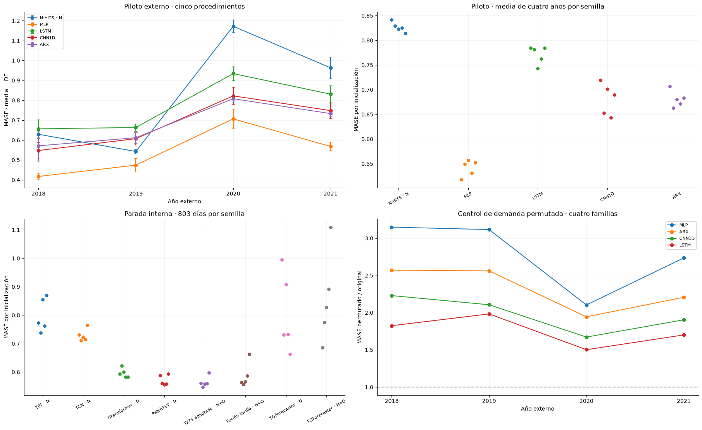
Los trece procedimientos tienen una estimación de precisión de desarrollo: cinco a partir del piloto externo y ocho a partir de la parada interna. Los puntos muestran cinco inicializaciones por procedimiento, sin tratar los años como semillas adicionales. Las dos fuentes cubren periodos y mecanismos de selección distintos; sus medias no constituyen un ranking común de validación. El control de permutación conserva las cuatro familias para las que fue calculado.
Precisión de desarrollo y dimensionamiento#
El resumen reúne los trece procedimientos e identifica la fuente y el periodo de cada estimación. Los cinco pilotos externos y las ocho reservas internas se dimensionan por separado. Cada semilla piloto 100–104 resume cuatro años externos 2018–2021; cada semilla final 1000–1004 resume 803 días de parada. Se muestran media de MASE, DE, CV e IC95 % t entre cinco inicializaciones. Los años no se consideran semillas adicionales y los errores de prueba no intervienen en el dimensionamiento.
g_pilot_seed=g_pilots.groupby(['semilla','clave']).MASE.mean().unstack('clave')
assert g_pilot_seed.shape==(5,5) and g_pilot_seed.notna().all().all()
assert g_pilot_seed.index.tolist()==[100,101,102,103,104]
g_pilot_summary=g_pilot_seed.agg(['mean','std','count']).T.rename(columns={'mean':'MASE medio','std':'DE','count':'Semillas piloto'}).reindex(g_keys)
g_pilot_summary['CV (%)']=100*g_pilot_summary['DE']/g_pilot_summary['MASE medio']
g_pilot_summary['Disponibilidad']=np.where(g_pilot_summary['Semillas piloto'].notna(),'Piloto independiente','Sin piloto independiente')
g_pilot_summary.index=[g_names[k] for k in g_keys]
g_pilot_summary.to_csv(g_result/'resumen_piloto_integrado.csv',index_label='Procedimiento')
display(v_precision[['Procedimiento','Fuente','Periodo','Semillas','MASE_media','DE','CV_pct','IC95_inf','IC95_sup']].rename(columns={
'Fuente':'Fuente de precisión','MASE_media':'MASE desarrollo','CV_pct':'CV (%)',
'IC95_inf':'IC95 inferior','IC95_sup':'IC95 superior'}).reset_index(drop=True).style.format(
{'MASE desarrollo':'{:.5f}','DE':'{:.5f}','CV (%)':'{:.2f}','IC95 inferior':'{:.5f}','IC95 superior':'{:.5f}'}))
| Procedimiento | Fuente de precisión | Periodo | Semillas | MASE desarrollo | DE | CV (%) | IC95 inferior | IC95 superior | |
|---|---|---|---|---|---|---|---|---|---|
| 0 | N-HiTS · N | Piloto externo | 2018–2021 · media de cuatro años | 5 | 0.82671 | 0.00994 | 1.20 | 0.81437 | 0.83905 |
| 1 | TFT · N | Parada interna | 2019-10-21 a 2021-12-31 · 803 días | 5 | 0.79991 | 0.05900 | 7.38 | 0.72665 | 0.87316 |
| 2 | TCN · N | Parada interna | 2019-10-21 a 2021-12-31 · 803 días | 5 | 0.72879 | 0.02192 | 3.01 | 0.70157 | 0.75601 |
| 3 | iTransformer · N | Parada interna | 2019-10-21 a 2021-12-31 · 803 días | 5 | 0.59596 | 0.01630 | 2.74 | 0.57572 | 0.61619 |
| 4 | PatchTST · N | Parada interna | 2019-10-21 a 2021-12-31 · 803 días | 5 | 0.57098 | 0.01816 | 3.18 | 0.54844 | 0.59352 |
| 5 | TaTS adaptado · N+O | Parada interna | 2019-10-21 a 2021-12-31 · 803 días | 5 | 0.56476 | 0.01911 | 3.38 | 0.54104 | 0.58849 |
| 6 | Fusión tardía · N+O | Parada interna | 2019-10-21 a 2021-12-31 · 803 días | 5 | 0.58706 | 0.04394 | 7.48 | 0.53250 | 0.64161 |
| 7 | TGForecaster · N | Parada interna | 2019-10-21 a 2021-12-31 · 803 días | 5 | 0.80578 | 0.13953 | 17.32 | 0.63253 | 0.97902 |
| 8 | TGForecaster · N+O | Parada interna | 2019-10-21 a 2021-12-31 · 803 días | 5 | 0.85780 | 0.15965 | 18.61 | 0.65957 | 1.05603 |
| 9 | MLP | Piloto externo | 2018–2021 · media de cuatro años | 5 | 0.54156 | 0.01664 | 3.07 | 0.52090 | 0.56222 |
| 10 | LSTM | Piloto externo | 2018–2021 · media de cuatro años | 5 | 0.77122 | 0.01833 | 2.38 | 0.74846 | 0.79398 |
| 11 | CNN1D | Piloto externo | 2018–2021 · media de cuatro años | 5 | 0.68130 | 0.03233 | 4.75 | 0.64116 | 0.72144 |
| 12 | ARX | Piloto externo | 2018–2021 · media de cuatro años | 5 | 0.68109 | 0.01652 | 2.43 | 0.66058 | 0.70160 |
MLP presenta el menor MASE medio del piloto externo (0,542); N-HiTS registra 0,827. PatchTST utiliza la precisión de parada interna, presentada por separado. La dispersión entre semillas no sigue necesariamente ese orden; un error medio mayor puede ser estable entre inicializaciones.
Para expresar las diferencias en una escala relativa común se conserva como referencia la media piloto de MLP, obtenida exclusivamente de validación. Con \(d_s=(M_{A,s}-M_{B,s})/\overline M_{\mathrm{MLP,piloto}}\), margen \(\delta=0,03\), \(\alpha=0,05\) y potencia objetivo \(0,80\), se calcula
Se informa además \(\delta/\widehat\sigma_d\) y una planificación conservadora con Bonferroni para las diez parejas. El mínimo de diseño es cinco semillas. Es una aproximación retrospectiva de variación entre inicializaciones, condicionada a los mismos cuatro años; no estima la incertidumbre de nuevas fechas ni acredita la potencia alcanzada por los ajustes ya ejecutados.
from itertools import combinations
g_delta=.03;g_alpha=.05;g_power=.80
g_pilot_reference=float(g_pilot_seed['mlp'].mean())
g_pilot_pairs=list(combinations(g_pilot_seed.columns,2))
assert len(g_pilot_pairs)==10
g_z=stats.norm.ppf(1-g_alpha/2)+stats.norm.ppf(g_power)
g_z_bonf=stats.norm.ppf(1-g_alpha/(2*len(g_pilot_pairs)))+stats.norm.ppf(g_power)
g_dimension=[]
for g_a,g_b in g_pilot_pairs:
g_difference=(g_pilot_seed[g_a]-g_pilot_seed[g_b])/g_pilot_reference
g_sd=float(g_difference.std(ddof=1))
g_dimension.append({'A':g_a,'B':g_b,'Comparación':g_names[g_a]+' − '+g_names[g_b],
'DE diferencia relativa':g_sd,'δ / DE':g_delta/g_sd if g_sd>0 else np.inf,
'R individual':max(5,int(np.ceil((g_z*g_sd/g_delta)**2))),
'R Bonferroni(10)':max(5,int(np.ceil((g_z_bonf*g_sd/g_delta)**2))),
'MDD con 5 (% referencia piloto)':100*g_z*g_sd/np.sqrt(5)})
g_dimension=pd.DataFrame(g_dimension)
display(g_dimension.drop(columns=['A','B']).round(5))
g_dimension.to_csv(g_result/'dimensionamiento_piloto_integrado.csv',index=False)
| Comparación | DE diferencia relativa | δ / DE | R individual | R Bonferroni(10) | MDD con 5 (% referencia piloto) | |
|---|---|---|---|---|---|---|
| 0 | ARX − CNN1D | 0.03591 | 0.83538 | 12 | 20 | 4.49943 |
| 1 | ARX − LSTM | 0.03984 | 0.75300 | 14 | 24 | 4.99168 |
| 2 | ARX − MLP | 0.05458 | 0.54962 | 26 | 45 | 6.83876 |
| 3 | ARX − N-HiTS · N | 0.02686 | 1.11706 | 7 | 11 | 3.36483 |
| 4 | CNN1D − LSTM | 0.06744 | 0.44483 | 40 | 68 | 8.44976 |
| 5 | CNN1D − MLP | 0.07154 | 0.41937 | 45 | 76 | 8.96270 |
| 6 | CNN1D − N-HiTS · N | 0.05732 | 0.52337 | 29 | 49 | 7.18179 |
| 7 | LSTM − MLP | 0.05334 | 0.56238 | 25 | 43 | 6.68362 |
| 8 | LSTM − N-HiTS · N | 0.03453 | 0.86891 | 11 | 18 | 4.32577 |
| 9 | MLP − N-HiTS · N | 0.04643 | 0.64610 | 19 | 32 | 5.81759 |
La aproximación individual exige entre cinco y 45 semillas por procedimiento, según la pareja; el máximo conservador para las diez comparaciones es 76. Las cinco semillas ejecutadas no acreditan potencia de 0,80 para el margen del 3 % en todas las parejas. Los ocho procedimientos sin piloto independiente conservan su dimensionamiento retrospectivo de parada interna, presentado por separado.
N-HiTS conserva además un diagnóstico temporal por bootstrap de bloques de 14 días frente al ingenuo semanal de validación. Su estimación límite es 0,0843 y no determina un número final de semillas. Ese diagnóstico conserva incertidumbre temporal y no equivale al cálculo anterior entre inicializaciones.
g_recorded_power=pd.read_csv(g_result/'dimensionamiento_temporal_registrado.csv')
g_recorded_power['Procedimiento']=g_recorded_power.clave.map(g_names)
display(g_recorded_power[['Procedimiento','referencia','MASE_referencia','margen_relativo','potencia_limite_temporal','n_final','estado']].rename(columns={
'referencia':'Referencia temporal','MASE_referencia':'MASE referencia','margen_relativo':'δ relativo',
'potencia_limite_temporal':'Estimación límite temporal','n_final':'R final registrado','estado':'Estado'}).style.format(precision=4,na_rep='No determinado'))
| Procedimiento | Referencia temporal | MASE referencia | δ relativo | Estimación límite temporal | R final registrado | Estado | |
|---|---|---|---|---|---|---|---|
| 0 | N-HiTS · N | Ingenuo semanal en validación | 1.1419 | 0.0300 | 0.0843 | No determinado | precision_temporal_insuficiente |
El registro indica precisión temporal insuficiente para la alternativa evaluada. Aumentar semillas reduce la variación de inicialización, pero no elimina por sí solo la incertidumbre debida a los días compartidos. La planificación normal y el diagnóstico temporal conservan sus referencias e hipótesis explícitas.
Diseño de selección · Resumen piloto integrado · Diez comparaciones de dimensionamiento · Diagnóstico temporal registrado.
Precisión en la reserva interna#
TFT, TCN, iTransformer, el control numérico N, TaTS con texto oficial, fusión tardía y las variantes N y N+O de TGForecaster conservan métricas de parada de sus cinco entrenamientos finales, semillas 1000–1004. Se utilizan para completar el análisis de precisión de desarrollo. Los ocho procedimientos comparten 803 orígenes de reserva interna, del 21 de octubre de 2019 al 31 de diciembre de 2021, y el denominador MASE q168 de 215.617,90361589016 kWh.
Se calcula media, DE, CV e IC95 % t entre semillas sobre el MASE de parada del checkpoint restaurado. La reserva seleccionó también la época de parada; los resultados son descriptivos y retrospectivos. Los intervalos condicionan ese periodo y suponen independencia y normalidad aproximada entre inicializaciones, difíciles de evaluar con cinco realizaciones.
# Métricas de desarrollo guardadas; no se utilizan errores de prueba.
from itertools import combinations
p_inputs=pd.read_csv(g_result/'entradas_precision_parada.csv')
assert len(p_inputs)==5*p_inputs.clave.nunique() and p_inputs.n_parada.eq(803).all()
def calcular_precision_parada(entradas,referencia='adj_modelo6_20261112_1035__N'):
"""Usa solo MASE de desarrollo; no estima potencia con el efecto observado."""
required=['clave','semilla','MASE_parada','n_parada','inicio_parada','fin_parada','q168_kwh']
x=entradas[required].copy()
assert not x.isna().any().any()
assert not x.duplicated(['clave','semilla']).any()
assert np.isfinite(x.MASE_parada).all() and x.MASE_parada.ge(0).all()
assert x[['n_parada','inicio_parada','fin_parada','q168_kwh']].drop_duplicates().shape[0]==1
for _,g in x.groupby('clave'):
assert sorted(g.semilla.tolist())==list(range(1000,1005))
matriz=x.pivot(index='semilla',columns='clave',values='MASE_parada').sort_index()
assert matriz.notna().all().all() and referencia in matriz
n=len(matriz);alpha=.05;objetivo=.80;delta=.03
tcrit=stats.t.ppf(1-alpha/2,n-1)
resumen=matriz.agg(['mean','std','count']).T.rename(columns={'mean':'MASE_media','std':'DE','count':'semillas'})
resumen['CV_pct']=100*resumen.DE/resumen.MASE_media
resumen['IC95_inf']=resumen.MASE_media-tcrit*resumen.DE/np.sqrt(n)
resumen['IC95_sup']=resumen.MASE_media+tcrit*resumen.DE/np.sqrt(n)
mu_ref=float(resumen.loc[referencia,'MASE_media'])
assert mu_ref>0
parejas=list(combinations(matriz.columns,2))
z=stats.norm.ppf(1-alpha/2)+stats.norm.ppf(objetivo)
z_bonf=stats.norm.ppf(1-alpha/(2*len(parejas)))+stats.norm.ppf(objetivo)
filas=[]
for a,b in parejas:
d=matriz[a]-matriz[b]
media=float(d.mean());sd=float(d.std(ddof=1));sd_rel=sd/mu_ref
margen=tcrit*sd/np.sqrt(n)
filas.append(dict(A=a,B=b,semillas=n,diferencia_MASE=media,DE_diferencia=sd,
IC95_diferencia_inf=media-margen,IC95_diferencia_sup=media+margen,
diferencia_pct_referencia=100*media/mu_ref,DE_relativa=sd_rel,
referencia=referencia,MASE_referencia=mu_ref,delta_relativo=delta,
alpha=alpha,potencia_objetivo=objetivo,parejas_familia=len(parejas),
delta_sobre_DE=delta/sd_rel if sd_rel>0 else np.inf,
R_individual=max(n,int(np.ceil((z*sd_rel/delta)**2))),
R_Bonferroni=max(n,int(np.ceil((z_bonf*sd_rel/delta)**2))),
MDD_5_pct_referencia=100*z*sd_rel/np.sqrt(n)))
return resumen.reset_index(),pd.DataFrame(filas),matriz
p_summary,p_pairs,p_matrix=calcular_precision_parada(p_inputs)
p_summary.insert(1,'Procedimiento',p_summary.clave.map(g_names))
p_pairs.insert(2,'Comparación',p_pairs.A.map(g_names)+' − '+p_pairs.B.map(g_names))
assert np.allclose(p_summary.set_index('clave').MASE_media,
v_precision.MASE_media.reindex(p_summary.clave))
TaTS adaptado · N+O registra el menor MASE de parada medio (0.565). El CV oscila entre 2.74 % en iTransformer · N y 18.61 % en TGForecaster · N+O. La estabilidad entre semillas y el error medio describen propiedades diferentes; el resumen integrado no sustituye el benchmark de prueba.
La planificación conserva δ=3 %, α=0,05 y potencia objetivo de 0,80. Las diferencias pareadas se expresan respecto de la media de parada del control N (0.570981), común a los ocho procedimientos. Se utiliza la misma aproximación normal y MDD con cinco semillas descritas antes, con Bonferroni para las veintiocho parejas. El cálculo usa la DE de las diferencias y el margen fijado, sin estimar potencia a partir de la diferencia observada.
p_columns=['Comparación','diferencia_MASE','DE_diferencia','IC95_diferencia_inf','IC95_diferencia_sup',
'DE_relativa','delta_sobre_DE','R_individual','R_Bonferroni','MDD_5_pct_referencia']
display(p_pairs[p_columns].rename(columns={'diferencia_MASE':'Diferencia MASE','DE_diferencia':'DE diferencia',
'IC95_diferencia_inf':'IC95 inferior','IC95_diferencia_sup':'IC95 superior',
'DE_relativa':'DE relativa','delta_sobre_DE':'δ / DE','R_individual':'R individual',
'R_Bonferroni':f'R Bonferroni({len(p_pairs)})','MDD_5_pct_referencia':'MDD con 5 (% control N)'}).round(5))
assert len(p_pairs)==len(p_summary)*(len(p_summary)-1)//2 and set(p_pairs.A)|set(p_pairs.B)==set(p_summary.clave)
| Comparación | Diferencia MASE | DE diferencia | IC95 inferior | IC95 superior | DE relativa | δ / DE | R individual | R Bonferroni(28) | MDD con 5 (% control N) | |
|---|---|---|---|---|---|---|---|---|---|---|
| 0 | Fusión tardía · N+O − TFT · N | -0.21285 | 0.04535 | -0.26916 | -0.15654 | 0.07942 | 0.37773 | 56 | 111 | 9.95093 |
| 1 | Fusión tardía · N+O − TCN · N | -0.14173 | 0.02646 | -0.17459 | -0.10888 | 0.04634 | 0.64744 | 19 | 38 | 5.80553 |
| 2 | Fusión tardía · N+O − iTransformer · N | -0.00890 | 0.05586 | -0.07826 | 0.06046 | 0.09783 | 0.30666 | 84 | 168 | 12.25679 |
| 3 | Fusión tardía · N+O − PatchTST · N | 0.01607 | 0.03611 | -0.02876 | 0.06091 | 0.06324 | 0.47439 | 35 | 70 | 7.92325 |
| 4 | Fusión tardía · N+O − TaTS adaptado · N+O | 0.02229 | 0.02588 | -0.00984 | 0.05443 | 0.04532 | 0.66189 | 18 | 36 | 5.67880 |
| 5 | Fusión tardía · N+O − TGForecaster · N | -0.21872 | 0.17031 | -0.43019 | -0.00725 | 0.29828 | 0.10058 | 776 | 1555 | 37.37120 |
| 6 | Fusión tardía · N+O − TGForecaster · N+O | -0.27074 | 0.11925 | -0.41882 | -0.12267 | 0.20886 | 0.14364 | 381 | 763 | 26.16766 |
| 7 | TFT · N − TCN · N | 0.07112 | 0.04526 | 0.01492 | 0.12731 | 0.07926 | 0.37848 | 55 | 110 | 9.93101 |
| 8 | TFT · N − iTransformer · N | 0.20395 | 0.06805 | 0.11945 | 0.28845 | 0.11919 | 0.25171 | 124 | 249 | 14.93302 |
| 9 | TFT · N − PatchTST · N | 0.22893 | 0.05607 | 0.15931 | 0.29854 | 0.09820 | 0.30551 | 85 | 169 | 12.30300 |
| 10 | TFT · N − TaTS adaptado · N+O | 0.23514 | 0.04685 | 0.17697 | 0.29332 | 0.08206 | 0.36559 | 59 | 118 | 10.28137 |
| 11 | TFT · N − TGForecaster · N | -0.00587 | 0.15483 | -0.19811 | 0.18638 | 0.27116 | 0.11063 | 642 | 1285 | 33.97413 |
| 12 | TFT · N − TGForecaster · N+O | -0.05789 | 0.12943 | -0.21860 | 0.10282 | 0.22668 | 0.13234 | 449 | 898 | 28.40136 |
| 13 | TCN · N − iTransformer · N | 0.13283 | 0.03403 | 0.09058 | 0.17508 | 0.05959 | 0.50341 | 31 | 63 | 7.46655 |
| 14 | TCN · N − PatchTST · N | 0.15781 | 0.01216 | 0.14272 | 0.17290 | 0.02129 | 1.40908 | 5 | 8 | 2.66751 |
| 15 | TCN · N − TaTS adaptado · N+O | 0.16403 | 0.00582 | 0.15680 | 0.17126 | 0.01020 | 2.94165 | 5 | 5 | 1.27776 |
| 16 | TCN · N − TGForecaster · N | -0.07699 | 0.14629 | -0.25863 | 0.10466 | 0.25621 | 0.11709 | 573 | 1147 | 32.10056 |
| 17 | TCN · N − TGForecaster · N+O | -0.12901 | 0.14480 | -0.30880 | 0.05078 | 0.25360 | 0.11830 | 561 | 1124 | 31.77338 |
| 18 | iTransformer · N − PatchTST · N | 0.02497 | 0.02878 | -0.01076 | 0.06071 | 0.05041 | 0.59514 | 23 | 45 | 6.31568 |
| 19 | iTransformer · N − TaTS adaptado · N+O | 0.03119 | 0.03250 | -0.00917 | 0.07155 | 0.05692 | 0.52701 | 29 | 57 | 7.13215 |
| 20 | iTransformer · N − TGForecaster · N | -0.20982 | 0.13863 | -0.38195 | -0.03769 | 0.24280 | 0.12356 | 515 | 1030 | 30.42006 |
| 21 | iTransformer · N − TGForecaster · N+O | -0.26184 | 0.16929 | -0.47205 | -0.05164 | 0.29650 | 0.10118 | 767 | 1536 | 37.14810 |
| 22 | PatchTST · N − TaTS adaptado · N+O | 0.00622 | 0.01388 | -0.01101 | 0.02345 | 0.02430 | 1.23454 | 6 | 11 | 3.04463 |
| 23 | PatchTST · N − TGForecaster · N | -0.23480 | 0.14029 | -0.40898 | -0.06061 | 0.24569 | 0.12210 | 527 | 1055 | 30.78297 |
| 24 | PatchTST · N − TGForecaster · N+O | -0.28682 | 0.15523 | -0.47957 | -0.09407 | 0.27187 | 0.11035 | 645 | 1292 | 34.06286 |
| 25 | TaTS adaptado · N+O − TGForecaster · N | -0.24101 | 0.14836 | -0.42523 | -0.05680 | 0.25984 | 0.11546 | 589 | 1180 | 32.55548 |
| 26 | TaTS adaptado · N+O − TGForecaster · N+O | -0.29304 | 0.14378 | -0.47156 | -0.11451 | 0.25181 | 0.11914 | 554 | 1108 | 31.55005 |
| 27 | TGForecaster · N − TGForecaster · N+O | -0.05202 | 0.28098 | -0.40090 | 0.29686 | 0.49210 | 0.06096 | 2112 | 4231 | 61.65508 |
El máximo requerido por la aproximación individual es 2112 semillas y asciende a 4231 con Bonferroni para las veintiocho parejas. Las cinco ejecuciones disponibles permiten estimar variabilidad, pero no acreditan potencia de 0,80 para el margen del 3 % en todas las comparaciones. Las estimaciones son sensibles a cinco diferencias de desarrollo y no garantizan la potencia de una evaluación externa.
Este análisis completa la precisión entre inicializaciones de los ocho procedimientos sin piloto externo. Sus resultados no se mezclan con las medias de los cuatro años externos de los pilotos ni convierten la planificación en un registro previo a los entrenamientos.
Métricas de parada por semilla · Resumen de precisión · 28 diferencias y dimensionamiento de parada · Especificación del análisis.
Precisión requerida entre inicializaciones#
Las matrices muestran el número aproximado de semillas por procedimiento para cada pareja, con Bonferroni por grupo (10 parejas externas y 28 internas), δ=3 % y potencia objetivo de 0,80. Cada panel conserva su fuente y referencia de escala; no se combinan pares entre fuentes distintas.
v_dimension_groups=[(g_dimension,'A','B','R Bonferroni(10)','Piloto externo · referencia MLP'),
(p_pairs,'A','B','R_Bonferroni','Parada interna · referencia control N')]
from matplotlib.colors import LogNorm
fig,axes=plt.subplots(1,2,figsize=(18,8),layout='constrained')
v_max=max(float(g_dimension['R Bonferroni(10)'].max()),float(p_pairs.R_Bonferroni.max()))
for ax,(v_df,v_a,v_b,v_r,v_title) in zip(axes,v_dimension_groups):
v_ks=[k for k in g_keys if k in set(v_df[v_a])|set(v_df[v_b])]
v_matrix=np.full((len(v_ks),len(v_ks)),np.nan)
for _,v_row in v_df.iterrows():
v_i,v_j=v_ks.index(v_row[v_a]),v_ks.index(v_row[v_b])
v_matrix[v_i,v_j]=v_matrix[v_j,v_i]=v_row[v_r]
v_im=ax.imshow(v_matrix,cmap='YlOrRd',norm=LogNorm(vmin=5,vmax=v_max))
ax.set(title=v_title,xticks=range(len(v_ks)),yticks=range(len(v_ks)),
xticklabels=[g_names[k] for k in v_ks],yticklabels=[g_names[k] for k in v_ks])
ax.tick_params(axis='x',rotation=60,labelsize=8);ax.tick_params(axis='y',labelsize=8);ax.grid(False)
for v_i in range(len(v_ks)):
for v_j in range(len(v_ks)):
if v_i!=v_j:ax.text(v_j,v_i,f'{v_matrix[v_i,v_j]:.0f}',ha='center',va='center',fontsize=10,
color='white' if v_matrix[v_i,v_j]>.6*v_max else '#222222')
fig.colorbar(v_im,ax=axes.tolist(),shrink=.65,label='Semillas aproximadas · escala logarítmica; Bonferroni por grupo')
fig.savefig(g_figures/'dimensionamiento_fuentes.png',dpi=160)
display(fig);plt.close(fig)
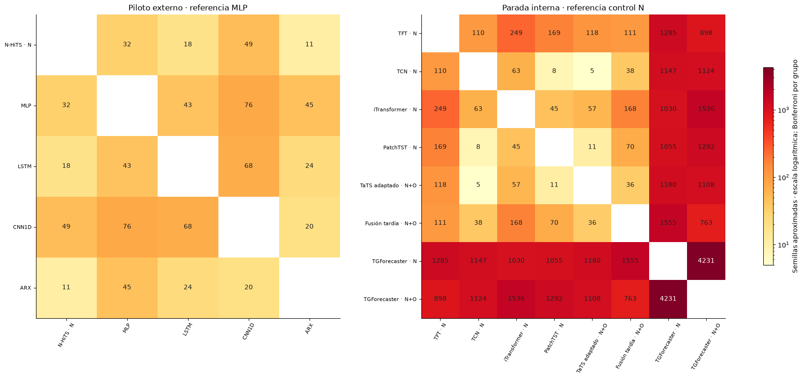
La planificación conservadora alcanza máximos de 76 semillas en los pilotos externos y 4231 en la reserva interna. Las mayores cifras reflejan la dispersión de las diferencias frente al margen fijado, no una mayor diferencia media de rendimiento. Cinco semillas no acreditan la potencia objetivo en todas las parejas; el cálculo retrospectivo no modifica el número ejecutado.
Curvas de aprendizaje#
Cada panel conserva las cinco semillas: líneas de ajuste y de parada interna, y marcadores del mínimo restaurado de parada. Las familias base emplean MAE o Huber según su configuración; por ello las alturas no son comparables entre pérdidas diferentes.
e2_curvas = pd.read_csv(e2_RESULT / 'curvas_aprendizaje.csv')
e2_ks = [e2_k for e2_k in e2_benchmark.clave if e2_k not in ['ingenuo_24h', 'ingenuo_168h']]
e2_fig, e2_axes = plt.subplots(int(np.ceil(len(e2_ks) / 3)), 3, figsize=(17, 19))
for e2_ax, e2_k in zip(e2_axes.flat, e2_ks):
e2_c = e2_curvas[e2_curvas.clave == e2_k]
for e2_s, e2_g in e2_c.groupby('semilla'):
e2_ax.plot(e2_g.epoca, e2_g.train_loss, color='#4a8baf', alpha=0.4, lw=1)
e2_ax.plot(e2_g.epoca, e2_g.val_loss, color='#cb7e30', alpha=0.65, lw=1)
e2_z = e2_g.loc[e2_g.val_loss.idxmin()]
e2_ax.plot(e2_z.epoca, e2_z.val_loss, 'o', ms=3, color='#7e4417')
e2_ax.set_title(e2_nombres[e2_k], fontsize=9)
e2_ax.set_xlabel('Época')
e2_ax.set_ylabel(e2_c.perdida.iloc[0])
e2_ax.grid(alpha=0.12)
for e2_ax in list(e2_axes.flat)[len(e2_ks):]:
e2_ax.set_visible(False)
e2_fig.suptitle('Azul: ajuste · naranja: parada interna · punto: mínimo restaurado', fontsize=13)
e2_fig.tight_layout(rect=[0, 0, 1, 0.98])
display(e2_fig)
plt.close(e2_fig)
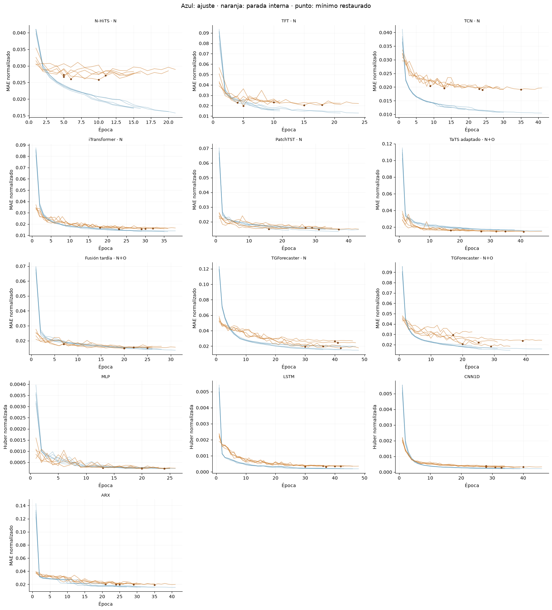
La parada ocurre antes del máximo de épocas en las realizaciones presentadas y restaura el mejor estado observado en la reserva interna. La separación ajuste–parada sugiere revisar generalización y estabilidad, pero no constituye por sí sola una prueba de sobreajuste. Los contrastes externos se basan en errores posteriores al ajuste; las curvas no se utilizan para volver a seleccionar modelos con la prueba.
Desempeño y precisión temporal#
La figura muestra MASE e IC95 % temporal. Los intervalos se calculan sobre bloques de días compartidos por todos los procedimientos; las cinco semillas no se convierten en 5×1.461 observaciones independientes.
e2_b = e2_benchmark.sort_values('MASE', ascending=False)
e2_fig, e2_ax = plt.subplots(figsize=(12, 7))
e2_ypos = np.arange(len(e2_b))
e2_colores = ['#6c7d8a' if e2_x == 'referencia' else '#258a83' if '+O' in e2_n else '#447ba0' for e2_x, e2_n in zip(e2_b.entradas, e2_b.modelo)]
e2_ax.barh(e2_ypos, e2_b.MASE, color=e2_colores)
e2_ax.errorbar(e2_b.MASE, e2_ypos, xerr=np.vstack([e2_b.MASE - e2_b.IC95_inf, e2_b.IC95_sup - e2_b.MASE]), fmt='none', ecolor='#252d34', capsize=3)
e2_ax.set_yticks(e2_ypos, e2_b.modelo)
e2_ax.set_xlabel('MASE e IC95 % temporal por bloques')
e2_ax.grid(axis='x', alpha=0.15)
e2_fig.tight_layout()
display(e2_fig)
plt.close(e2_fig)
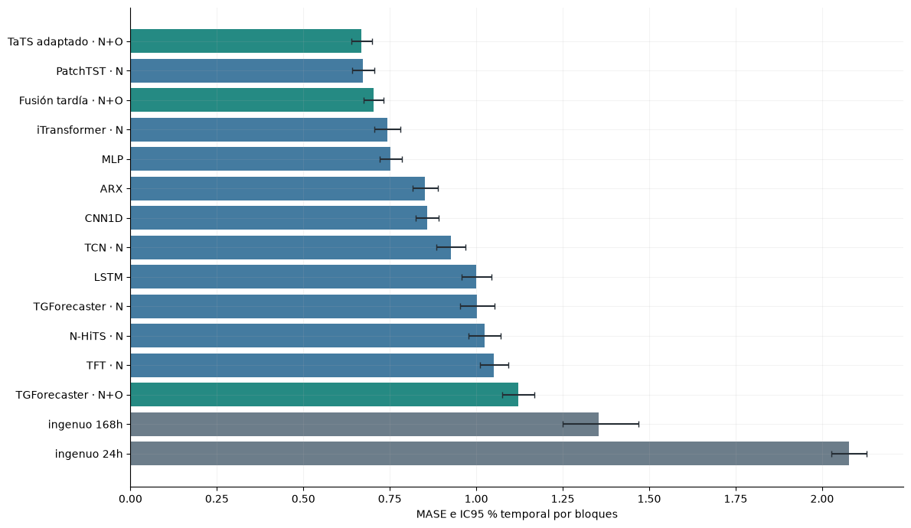
TaTS con texto oficial y su control numérico presentan los menores errores medios. La cercanía de sus barras no basta para decidir mejora o equivalencia: se utilizan contrastes pareados. El resto de procedimientos conserva ventaja descriptiva frente al ingenuo semanal, pero ello no establece que todas las diferencias entre arquitecturas sean significativas. El ingenuo diario respeta el rezago de publicación: en la última hora del horizonte utiliza la observación de 48 horas atrás.
v_test_table=g_benchmark[['modelo','MASE','MAE','RMSE','semillas']].copy()
v_test_table['Precisión de desarrollo']=v_precision.Fuente.reindex(v_test_table.index).fillna('Referencia determinista')
v_test_table=v_test_table.sort_values('MAE').rename(columns={'modelo':'Procedimiento',
'MASE':'MASE de prueba','MAE':'MAE de prueba (kWh)','RMSE':'RMSE de prueba (kWh)','semillas':'Realizaciones'})
display(v_test_table.reset_index(drop=True).round({'MASE de prueba':4,'MAE de prueba (kWh)':2,'RMSE de prueba (kWh)':2}))
| Procedimiento | MASE de prueba | MAE de prueba (kWh) | RMSE de prueba (kWh) | Realizaciones | Precisión de desarrollo | |
|---|---|---|---|---|---|---|
| 0 | TaTS adaptado · N+O | 0.6684 | 144126.05 | 188787.61 | 5 | Parada interna |
| 1 | PatchTST · N | 0.6725 | 145003.39 | 194117.80 | 5 | Parada interna |
| 2 | Fusión tardía · N+O | 0.7038 | 151751.28 | 198752.45 | 5 | Parada interna |
| 3 | iTransformer · N | 0.7418 | 159948.40 | 207685.21 | 5 | Parada interna |
| 4 | MLP | 0.7520 | 162149.39 | 209153.21 | 5 | Piloto externo |
| 5 | ARX | 0.8517 | 183636.41 | 245952.61 | 5 | Piloto externo |
| 6 | CNN1D | 0.8573 | 184859.31 | 238815.15 | 5 | Piloto externo |
| 7 | TCN · N | 0.9266 | 199798.75 | 251369.77 | 5 | Parada interna |
| 8 | LSTM | 1.0005 | 215726.19 | 270164.36 | 5 | Piloto externo |
| 9 | TGForecaster · N | 1.0020 | 216047.39 | 276664.03 | 5 | Parada interna |
| 10 | N-HiTS · N | 1.0236 | 220712.69 | 281206.85 | 5 | Piloto externo |
| 11 | TFT · N | 1.0510 | 226619.94 | 280262.32 | 5 | Parada interna |
| 12 | TGForecaster · N+O | 1.1224 | 242013.73 | 305178.31 | 5 | Parada interna |
| 13 | ingenuo 168h | 1.3549 | 292142.09 | 444631.87 | 1 | Referencia determinista |
| 14 | ingenuo 24h | 2.0767 | 447778.99 | 659593.46 | 1 | Referencia determinista |
MAE expresa el error absoluto en kWh y RMSE concede mayor peso a desviaciones grandes. El MASE de la tabla y la figura utiliza un denominador común de entrenamiento; el ingenuo de prueba no tiene por qué obtener MASE igual a uno. Las referencias deterministas tienen una realización y no se replican artificialmente para las pruebas entre semillas.
Comparaciones temporales de todos los procedimientos#
La matriz incluye las 105 parejas de los 13 procedimientos y las dos referencias. Cada celda muestra p de Diebold–Mariano con corrección HLN y Holm(105), calculado sobre diferenciales diarios con HAC de 13 rezagos. Las diferencias e intervalos temporales completos se conservan en la tabla descargable.
g_temporal=pd.read_csv(g_result/'comparaciones_temporales.csv')
g_all=g_benchmark.index.tolist()
assert len(g_temporal)==len(g_all)*(len(g_all)-1)//2
g_pdm=np.full((len(g_all),len(g_all)),np.nan)
for g_pair in g_temporal.itertuples():
g_i,g_j=g_all.index(g_pair.A),g_all.index(g_pair.B)
g_pdm[g_i,g_j]=g_pdm[g_j,g_i]=g_pair.p_DM_Holm
fig,ax=plt.subplots(figsize=(15,13),layout='constrained')
g_im=ax.imshow(g_pdm,cmap='viridis_r',vmin=0,vmax=1)
ax.set(xticks=range(len(g_all)),yticks=range(len(g_all)),xticklabels=[g_names[k] for k in g_all],yticklabels=[g_names[k] for k in g_all])
ax.tick_params(axis='x',rotation=60,labelsize=8);ax.tick_params(axis='y',labelsize=9);ax.grid(False)
for g_i in range(len(g_all)):
for g_j in range(len(g_all)):
if g_i!=g_j:
g_v=g_pdm[g_i,g_j]
ax.text(g_j,g_i,('<.001' if g_v<.001 else f'{g_v:.3f}')+('*' if g_v<.05 else ''),ha='center',va='center',fontsize=7,color='white' if g_v>.5 else '#222222')
fig.colorbar(g_im,ax=ax,label='p DM–HLN · Holm(105); * < 0,05')
fig.savefig(g_figures/'dm_completo.png',dpi=160)
display(fig);plt.close(fig)
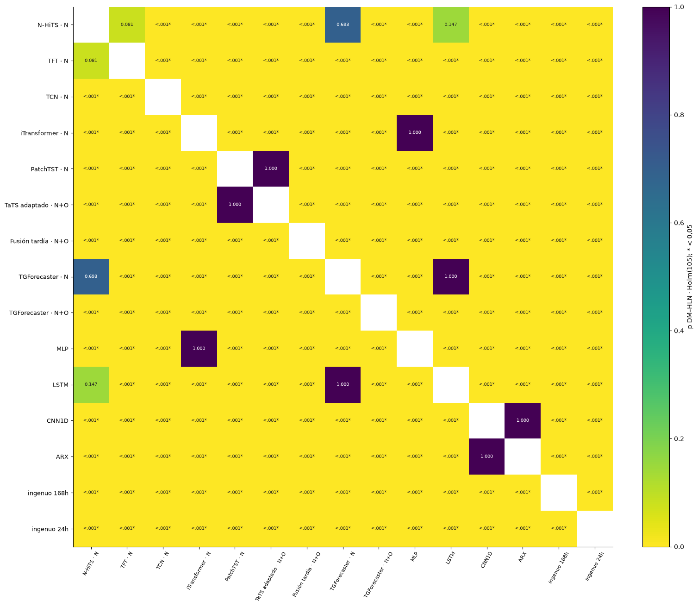
DM–HLN con Holm rechaza en 98 de las 105 parejas. Los rechazos son específicos de cada pareja y no convierten el orden de las medias en un ranking de diferencias significativas. Un valor p elevado tampoco establece equivalencia. Los contrastes temporales condicionan las cinco semillas ejecutadas; su resultado puede diferir de las pruebas entre inicializaciones porque cambia la unidad de análisis.
Validación y generalización#
Los trece procedimientos incluyen validación de selección, precisión de desarrollo y prueba. La barra central utiliza el piloto externo donde existe y el MASE de parada interna en los otros ocho; color y trama identifican su fuente. La validación de N-HiTS promedia 2019–2021; las demás, 2018–2021. La parada interna no se presenta como validación externa.
from matplotlib.patches import Patch
g_general=g_meta.groupby('clave').validacion.first().reindex(g_keys).to_frame('Validación externa')
g_general['Precisión desarrollo']=v_precision.MASE_media
g_general['Prueba']=g_benchmark.loc[g_keys,'MASE']
g_general['Fuente precisión']=v_precision.Fuente
g_general['Periodo precisión']=v_precision.Periodo
g_general['Periodo validación']=g_meta.groupby('clave').anios_validacion.first().reindex(g_keys)
assert g_general.notna().all().all() and len(g_general)==len(g_keys)
fig,ax=plt.subplots(figsize=(16,7))
v_pos=np.arange(len(g_keys));v_w=.25
ax.bar(v_pos-v_w,g_general['Validación externa'],v_w,color='#8295a5',label='Validación externa de selección')
v_colors=['#417da2' if f=='Piloto externo' else '#d18b38' for f in g_general['Fuente precisión']]
v_bars=ax.bar(v_pos,g_general['Precisión desarrollo'],v_w,color=v_colors)
for v_bar,v_source in zip(v_bars,g_general['Fuente precisión']):
if v_source=='Parada interna':v_bar.set_hatch('//')
ax.bar(v_pos+v_w,g_general.Prueba,v_w,color='#258a83',label='Prueba · 2022–2025')
ax.set(xticks=v_pos,xticklabels=[g_names[k] for k in g_keys],ylabel='MASE',xlabel='')
ax.tick_params(axis='x',rotation=40,labelsize=8)
ax.legend(handles=[Patch(color='#8295a5',label='Validación externa de selección'),
Patch(color='#417da2',label='Precisión: piloto externo · 2018–2021'),
Patch(facecolor='#d18b38',hatch='//',label='Precisión: parada interna · 2019-10-21 a 2021-12-31'),
Patch(color='#258a83',label='Prueba · 2022–2025')],fontsize=9)
fig.tight_layout();fig.savefig(g_figures/'generalizacion_completa.png',dpi=160)
display(fig);plt.close(fig)
g_general.to_csv(g_result/'generalizacion_integrada.csv',index_label='clave')
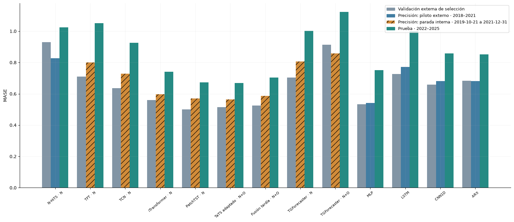
El error de prueba supera al de validación en los trece procedimientos. La figura incorpora la precisión de desarrollo sin huecos: piloto externo en azul y parada interna en naranja con trama. La parada participó en la selección de época y puede ofrecer una estimación optimista; el aumento hasta prueba no se interpreta aisladamente como sobreajuste ni compara periodos idénticos.
Ajuste y parada interna#
Los registros conservan MAE normalizado en modo evaluación para las cuatro familias de demanda/calendario y MASE de ajuste/parada para ocho variantes ampliadas. Se muestran por separado para preservar sus unidades. N-HiTS conserva curvas de pérdida, pero no estas métricas de evaluación de ambos tramos; no se reemplazan por pérdidas de entrenamiento calculadas con dropout.
fig,axes = plt.subplots(1,2,figsize=(16,5))
for ax,g_cols,g_label in zip(axes,[['MAE_ajuste_normalizado','MAE_parada_normalizado'],['MASE_ajuste','MASE_parada']],['MAE normalizado · modo evaluación','MASE · modo evaluación']):
g_present = [k for k in g_keys if g_meta.loc[g_meta.clave.eq(k),g_cols].notna().all(axis=1).all()]
for g_i,g_k in enumerate(g_present):
g_rows = g_meta[g_meta.clave.eq(g_k)].sort_values('semilla')
for g_offset,g_col,g_color,g_label_col in zip([-.09,.09],g_cols,['#447ba0','#dc923b'],['Ajuste','Parada interna']):
ax.scatter(np.full(5,g_i)+g_offset,g_rows[g_col],color=g_color,label=g_label_col if g_i==0 else None,s=25)
ax.set(xticks=np.arange(len(g_present)),xticklabels=[g_names[k] for k in g_present],ylabel=g_label)
ax.tick_params(axis='x',rotation=35,labelsize=8);ax.legend()
fig.tight_layout();display(fig);plt.close(fig)
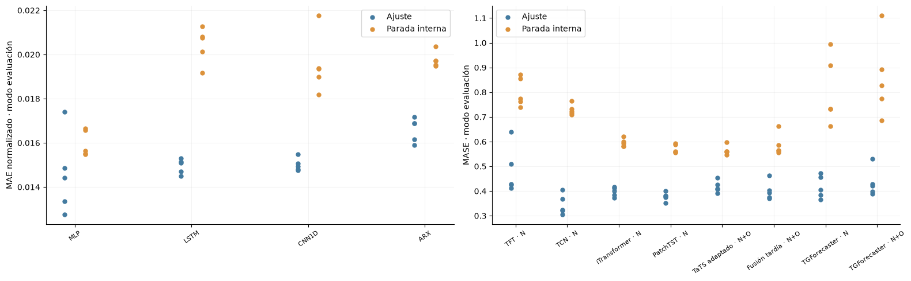
La parada interna presenta mayor error que el ajuste en las realizaciones mostradas. La separación describe generalización dentro del periodo de desarrollo; su magnitud no se compara entre paneles porque las escalas difieren. Las curvas de aprendizaje del capítulo incluyen también los dos procedimientos sin estas métricas desagregadas.
Demanda observada frente a predicción#
Cada panel reúne 35.064 horas y cinco semillas: 175.320 pares hora–semilla por procedimiento. La diagonal representa predicción exacta; ejes y escala logarítmica de densidad son comunes. MAE y RMSE se promedian entre realizaciones, igual que en el benchmark.
from matplotlib.colors import LogNorm
g_obs = np.broadcast_to(g_y,(5,*g_y.shape)).reshape(-1)/1e6
g_ext = [g_y.min()/1e6,g_y.max()/1e6]
for g_k in g_keys:
g_ext.extend([g_pred[g_k].min()/1e6,g_pred[g_k].max()/1e6])
g_pad = .025*(max(g_ext)-min(g_ext))
g_limits = (min(g_ext)-g_pad,max(g_ext)+g_pad)
fig,axes = plt.subplots(int(np.ceil(len(g_keys)/3)),3,figsize=(16,21),sharex=True,sharey=True,layout='constrained')
for ax,g_k in zip(axes.flat,g_keys):
g_density = ax.hexbin(g_obs,g_pred[g_k].reshape(-1)/1e6,gridsize=55,mincnt=1,cmap='viridis',norm=LogNorm(1,len(g_obs)),extent=(*g_limits,*g_limits))
ax.plot(g_limits,g_limits,'--',color='#c44e52',lw=1.2)
ax.set(title=g_names[g_k],xlim=g_limits,ylim=g_limits,xlabel='Observado (GWh por intervalo)',ylabel='Predicho (GWh por intervalo)')
ax.set_aspect('equal',adjustable='box')
ax.text(.04,.96,f"MAE: {g_benchmark.loc[g_k,'MAE']/1e6:.3f} GWh\nRMSE: {g_benchmark.loc[g_k,'RMSE']/1e6:.3f} GWh",transform=ax.transAxes,va='top',fontsize=9,bbox=dict(facecolor='white',alpha=.85,edgecolor='none'))
for g_ax in list(axes.flat)[len(g_keys):]:g_ax.set_visible(False)
fig.colorbar(g_density,ax=axes.ravel().tolist(),shrink=.65,label='Pares hora–semilla por celda · escala logarítmica')
fig.savefig(g_figures/'observado_predicho_completo.png',dpi=160)
display(fig);plt.close(fig)
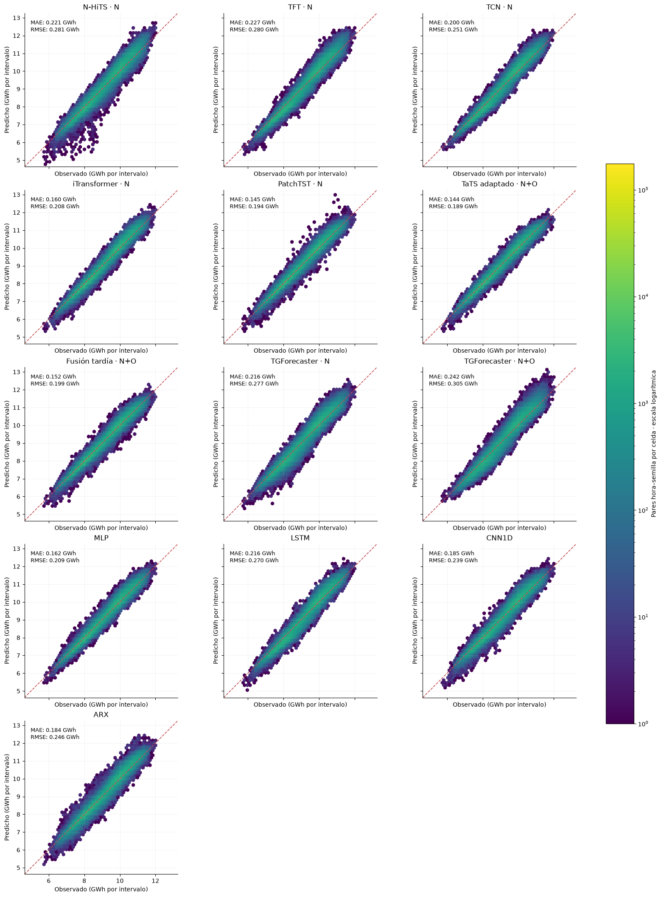
TaTS y su control numérico muestran los menores errores agregados y una nube más próxima a la diagonal. Las desviaciones en demandas altas y bajas revelan errores de amplitud que el promedio global puede ocultar. La dispersión incluye variación temporal y entre semillas; su densidad no convierte las realizaciones compartidas en observaciones independientes.
Perfil horario en una semana de prueba#
Se utiliza la misma ventana del 1 al 7 de julio de 2023 para los trece procedimientos. La banda p10–p90 representa dispersión entre cinco semillas y no un intervalo predictivo calibrado. El MAE semanal se calcula con los errores individuales, mientras la predicción media se utiliza para visualizar el perfil.
import matplotlib.dates as mdates
g_week = (g_dates>=pd.Timestamp('2023-07-01',tz='America/Bogota'))&(g_dates<pd.Timestamp('2023-07-08',tz='America/Bogota'))
assert g_week.sum()==7
g_time = pd.DatetimeIndex([d+pd.Timedelta(hours=h) for d in g_dates[g_week] for h in range(24)])
g_week_mae = {}
fig,axes = plt.subplots(int(np.ceil(len(g_keys)/3)),3,figsize=(18,18),sharex=True,sharey=True,layout='constrained')
for ax,g_k in zip(axes.flat,g_keys):
g_v = g_pred[g_k][:,g_week,:].reshape(5,-1)/1e6
g_week_mae[g_k] = np.abs(g_pred[g_k][:,g_week,:]-g_y[None,g_week,:]).mean()/1e6
ax.fill_between(g_time,np.quantile(g_v,.1,axis=0),np.quantile(g_v,.9,axis=0),color='#447ba0',alpha=.2,label='p10–p90 entre semillas')
ax.plot(g_time,g_y[g_week].reshape(-1)/1e6,color='#222222',lw=1.5,label='Observado')
ax.plot(g_time,g_v.mean(axis=0),'--',color='#447ba0',lw=1.2,label='Predicción media')
ax.set(title=f'{g_names[g_k]}\nMAE semanal: {g_week_mae[g_k]:.3f} GWh',xlabel='Julio de 2023 · Colombia',ylabel='GWh por intervalo')
ax.xaxis.set_major_locator(mdates.DayLocator(interval=2,tz=g_time.tz))
ax.xaxis.set_major_formatter(mdates.DateFormatter('%d-%m',tz=g_time.tz))
ax.legend(fontsize=7,loc='lower right')
for g_ax in list(axes.flat)[len(g_keys):]:g_ax.set_visible(False)
fig.savefig(g_figures/'semana_completa.png',dpi=160)
display(fig);plt.close(fig)
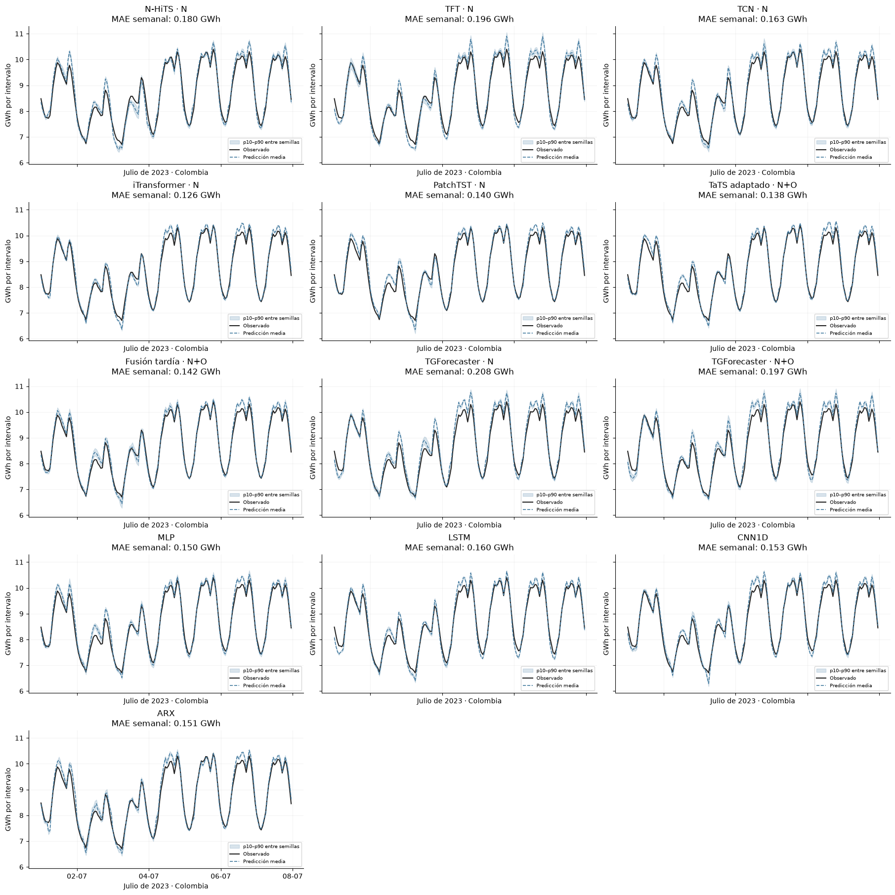
Los procedimientos reproducen el ciclo diario, pero difieren en la altura de los máximos, los mínimos nocturnos y las transiciones. Esta ventana permite contextualizar las métricas en unidades de demanda; siete días no representan por sí solos el ranking del periodo completo. La banda entre semillas describe estabilidad de inicialización y puede ser estrecha aun cuando exista un error común.
Error por horizonte#
Se muestran los errores de cada hora para distinguir un buen promedio de una mejora distribuida a lo largo del día. El código conserva los 24 horizontes y los mismos orígenes para todos los procedimientos.
e2_hor = pd.read_csv(e2_RESULT / 'resultados_horizonte.csv')
e2_grupos = [(['mlp', 'lstm', 'cnn1d', 'arx_lineal'], 'Demanda y calendario'), (['adj_modelo6_20261112_1035__N', 'repo_nhits_numerico_r1__N', 'adj_modelo3_20261115_0419__N', 'adj_modelo4_20261114_1224__N', 'adj_modelo5_20261114_1327__N', 'adj_modelo7_20261114_0430__N'], 'Numéricos ampliados'), (['adj_modelo6_20261112_1035__N+O', 'adj_fusion_tardia_20261113_1728__N+O', 'adj_modelo7_20261114_0430__N+O'], 'Contrastes textuales')]
e2_fig, e2_axes = plt.subplots(1, 3, figsize=(18, 5), sharey=True)
for e2_ax, (e2_ks, e2_titulo) in zip(e2_axes, e2_grupos):
for e2_k in e2_ks:
e2_v = e2_hor[e2_hor.clave == e2_k]
e2_ax.plot(e2_v.horizonte, e2_v.MASE, label=e2_nombres[e2_k], lw=1.7)
e2_ax.set_title(e2_titulo)
e2_ax.set_xlabel('Horizonte horario')
e2_ax.set_xticks([1, 6, 12, 18, 24])
e2_ax.grid(alpha=0.15)
e2_ax.legend(fontsize=7, loc='upper left')
e2_axes[0].set_ylabel('MASE')
e2_fig.tight_layout()
display(e2_fig)
plt.close(e2_fig)
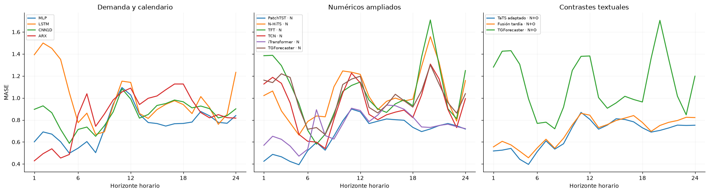
El error depende de la hora: la diferencia entre familias no es una separación constante en todo el horizonte. Los perfiles de los contrastes textuales deben leerse junto con sus diferencias pareadas, no como 24 pruebas independientes sin corrección. Se conservan 72 contrastes DM–HLN de los 3 aportes textuales, ajustados conjuntamente por Holm, en la tabla descargable.
Segmentos de evaluación#
Se conserva la evaluación por año, tipo de día y cuartil de demanda para los trece procedimientos. Cada panel muestra pérdidas promediadas entre semillas dentro del segmento. Los cortes describen heterogeneidad de prueba y no se utilizan para seleccionar configuraciones.
g_panel = pd.read_parquet(ROOT/'data/processed/panel_horario.parquet',columns=['cal_es_festivo'])
g_festivo = g_panel.reindex(g_dates).cal_es_festivo.to_numpy().astype(bool)
g_tipo = np.where((g_dates.day_of_week==6)|g_festivo,'Domingo/festivo',np.where(g_dates.day_of_week==5,'Sábado','Lun–vie'))
g_segments = {'Año':g_dates.year.astype(str),'Tipo de día':g_tipo,'Nivel de demanda':pd.qcut(g_y.mean(axis=1),4,labels=['Q1','Q2','Q3','Q4']).astype(str)}
g_groups = [[k for k in g_keys if k not in modelos and '+O' not in k],[k for k in g_keys if '+O' in k],[k for k in g_keys if k in modelos]]
fig,axes = plt.subplots(3,3,figsize=(17,14),sharey=True,layout='constrained')
for g_row,g_group in enumerate(g_groups):
for ax,(g_title,g_labels) in zip(axes[g_row],g_segments.items()):
g_order = ['Lun–vie','Sábado','Domingo/festivo'] if g_title=='Tipo de día' else sorted(set(g_labels))
for g_k in g_group:
ax.plot(g_order,[g_daily[g_k][np.asarray(g_labels)==g].mean() for g in g_order],marker='o',label=g_names[g_k])
ax.set(xlabel=g_title,ylabel='MASE');ax.legend(fontsize=7)
fig.savefig(g_figures/'segmentos_completos.png',dpi=160)
display(fig);plt.close(fig)
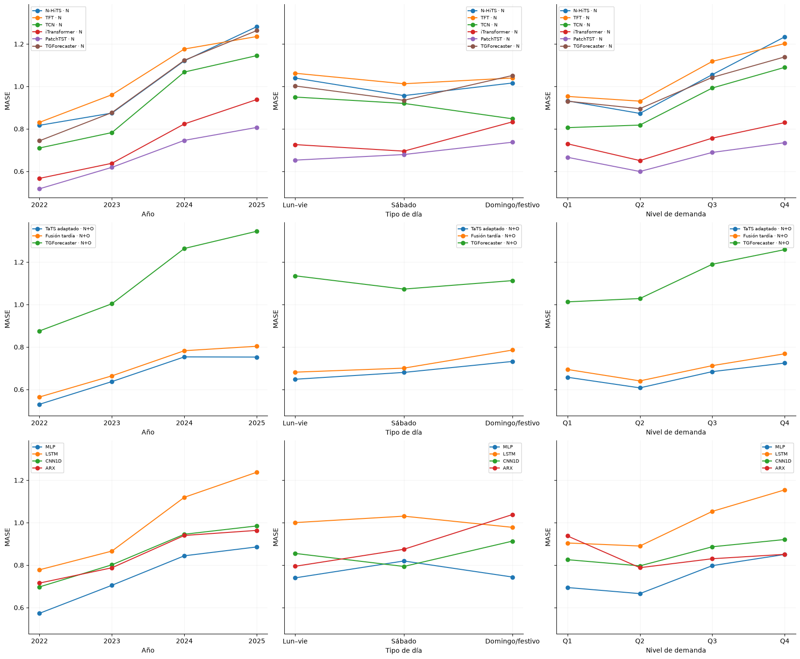
El error cambia entre años y niveles de demanda, por lo que una única media no resume todas las condiciones operativas. La comparación por tipo de día permite distinguir la dificultad de días laborales y no laborales. Los tres grupos de paneles separan las curvas para facilitar la lectura; utilizan los mismos segmentos y el mismo denominador MASE.
Aporte de texto oficial y equivalencia#
Se compara N+O menos N; una diferencia negativa favorece al texto. El margen práctico es ±3 % relativo al MASE del control numérico N. Se informa tanto la diferencia como sus intervalos y los contrastes. La familia textual contiene tres comparaciones exploratorias y utiliza Holm por prueba.
e2_texto = pd.read_csv(e2_RESULT / 'contrastes_texto.csv')
e2_vista = e2_texto[['modelo', 'relativa_pct', 'IC95_inf', 'IC95_sup', 'p_DM_Holm_texto', 'p_bootstrap_Holm_texto', 'p_TOST_Holm_texto']].rename(columns={'modelo': 'Variante frente a N', 'relativa_pct': 'Cambio MAE (%)', 'IC95_inf': 'IC95 inferior', 'IC95_sup': 'IC95 superior', 'p_DM_Holm_texto': 'p DM–HLN Holm(3)', 'p_bootstrap_Holm_texto': 'p bootstrap Holm(3)', 'p_TOST_Holm_texto': 'p TOST Holm(3)'})
display(e2_vista.style.format({e2_c: '{:.4g}' for e2_c in e2_vista.columns if e2_c.startswith('p ')}))
| Variante frente a N | Cambio MAE (%) | IC95 inferior | IC95 superior | p DM–HLN Holm(3) | p bootstrap Holm(3) | p TOST Holm(3) | |
|---|---|---|---|---|---|---|---|
| 0 | TaTS adaptado · N+O | -0.605048 | -2.132283 | 0.923622 | 0.4403 | 0.4356 | 0.0018 |
| 1 | Fusión tardía · N+O | 4.653609 | 3.251403 | 6.055964 | 4.35e-12 | 0.0003 | 1 |
| 2 | TGForecaster · N+O | 12.018815 | 10.274016 | 13.743711 | 1.362e-55 | 0.0003 | 1 |
TaTS reduce el error medio aproximadamente 0,61 %, con IC95 % relativo que incluye cero y p ajustado de DM–HLN cercano a 0,44. No se demuestra una mejora. El IC90 % relativo queda dentro de [−3 %,+3 %] y TOST por bloques rechaza la no equivalencia en esta familia: la pérdida media temporal es equivalente dentro de ese margen, condicionada a las cinco semillas y al corpus utilizado. No implica que los pronósticos sean idénticos ni equivalencia ante nuevas inicializaciones.
La fusión tardía aumenta el error aproximadamente 4,65 % y su IC95 % permanece por encima de cero. DM–HLN y bootstrap conservan rechazo con Holm(3); TOST no acredita equivalencia. Las sensibilidades de 7 y 28 días mantienen la dirección. Este resultado corresponde a la combinación aditiva entrenada conjuntamente y no evalúa una garantía de corrección acotada.
En TGForecaster, N+O aumenta el error un 12,02 % frente a su propio control N, con IC95 % relativo [10,27 %;13,74 %]. DM–HLN y bootstrap conservan rechazo tras Holm(3), sin equivalencia dentro del margen del 3 %. Ambas variantes usan descripciones estáticas de canales; el contraste añade documentos oficiales que varían por origen. TGForecaster y TaTS seleccionan hiperparámetros diferentes entre N y N+O: sus contrastes caracterizan el procedimiento completo, no una ablación con núcleo fijo.
Para cada horizonte, el diferencial de error se observa una vez al día. DM utiliza HAC Bartlett de 13 días y corrección HLN con h efectivo de un origen porque los horizontes de emisión diaria no se solapan. No se introducen 24 como si existieran 24 orígenes diarios. Las pérdidas, las hipótesis y la implementación se muestran al final del capítulo.
Comparaciones entre semillas y tamaño del efecto#
Se incluyen las 78 parejas de los 13 procedimientos, emparejadas por índice de semilla 1000–1004. Se reportan diferencia media de MASE, Shapiro–Wilk, t pareada y Wilcoxon exacto con Holm(78), y Cohen d_z con IC95 % por inversión de t no central. La t es un análisis de sensibilidad; cinco pares no acreditan normalidad porque Shapiro no rechace.
g_pairs = pd.read_csv(g_result/'comparaciones_semillas.csv')
assert len(g_pairs)==len(g_keys)*(len(g_keys)-1)//2 and set(g_pairs.A)|set(g_pairs.B)==set(g_keys)
g_view = g_pairs.copy()
g_view.insert(0,'Comparación',[g_names[a]+' − '+g_names[b] for a,b in zip(g_view.A,g_view.B)])
g_view = g_view[['Comparación','diferencia_MASE','p_Shapiro','p_t_Holm','p_Wilcoxon_Holm','Cohen_dz','IC95_dz_inf','IC95_dz_sup']]
with pd.option_context('display.max_rows',100):
display(g_view.style.format({c:'{:.4g}' for c in g_view.columns if c!='Comparación'}))
| Comparación | diferencia_MASE | p_Shapiro | p_t_Holm | p_Wilcoxon_Holm | Cohen_dz | IC95_dz_inf | IC95_dz_sup | |
|---|---|---|---|---|---|---|---|---|
| 0 | N-HiTS · N − TFT · N | -0.0274 | 0.03622 | 1 | 1 | -0.2457 | -1.123 | 0.6603 |
| 1 | N-HiTS · N − TCN · N | 0.097 | 0.4295 | 1 | 1 | 1.215 | -0.01447 | 2.374 |
| 2 | N-HiTS · N − iTransformer · N | 0.2818 | 0.4237 | 0.02599 | 1 | 4.803 | 1.524 | 8.117 |
| 3 | N-HiTS · N − PatchTST · N | 0.3511 | 0.394 | 0.011 | 1 | 6.129 | 2.016 | 10.31 |
| 4 | N-HiTS · N − TaTS adaptado · N+O | 0.3552 | 0.2664 | 0.01484 | 1 | 5.635 | 1.835 | 9.491 |
| 5 | N-HiTS · N − Fusión tardía · N+O | 0.3198 | 0.1901 | 0.03136 | 1 | 4.557 | 1.431 | 7.711 |
| 6 | N-HiTS · N − TGForecaster · N | 0.02164 | 0.01536 | 1 | 1 | 0.1583 | -0.734 | 1.032 |
| 7 | N-HiTS · N − TGForecaster · N+O | -0.09879 | 0.9362 | 1 | 1 | -0.4179 | -1.315 | 0.5247 |
| 8 | N-HiTS · N − MLP | 0.2716 | 0.6972 | 0.0008672 | 1 | 12.09 | 4.149 | 20.23 |
| 9 | N-HiTS · N − LSTM | 0.02313 | 0.5388 | 1 | 1 | 0.3792 | -0.5541 | 1.271 |
| 10 | N-HiTS · N − CNN1D | 0.1663 | 0.4446 | 0.1302 | 1 | 3.052 | 0.8388 | 5.249 |
| 11 | N-HiTS · N − ARX | 0.172 | 0.408 | 0.1088 | 1 | 3.218 | 0.9068 | 5.518 |
| 12 | TFT · N − TCN · N | 0.1244 | 0.2356 | 0.2244 | 1 | 2.535 | 0.6212 | 4.417 |
| 13 | TFT · N − iTransformer · N | 0.3092 | 0.8993 | 0.06257 | 1 | 3.792 | 1.136 | 6.455 |
| 14 | TFT · N − PatchTST · N | 0.3785 | 0.2944 | 0.009499 | 1 | 6.386 | 2.111 | 10.73 |
| 15 | TFT · N − TaTS adaptado · N+O | 0.3826 | 0.8911 | 0.008264 | 1 | 6.641 | 2.203 | 11.16 |
| 16 | TFT · N − Fusión tardía · N+O | 0.3472 | 0.08096 | 0.004071 | 1 | 8.114 | 2.735 | 13.6 |
| 17 | TFT · N − TGForecaster · N | 0.04903 | 0.7617 | 1 | 1 | 0.2852 | -0.6281 | 1.166 |
| 18 | TFT · N − TGForecaster · N+O | -0.07139 | 0.8438 | 1 | 1 | -0.4457 | -1.348 | 0.5039 |
| 19 | TFT · N − MLP | 0.299 | 0.1612 | 0.1471 | 1 | 2.939 | 0.7921 | 5.066 |
| 20 | TFT · N − LSTM | 0.05052 | 0.5456 | 1 | 1 | 0.4568 | -0.4956 | 1.361 |
| 21 | TFT · N − CNN1D | 0.1937 | 0.9491 | 0.547 | 1 | 1.724 | 0.2497 | 3.139 |
| 22 | TFT · N − ARX | 0.1994 | 0.8708 | 0.2093 | 1 | 2.614 | 0.655 | 4.543 |
| 23 | TCN · N − iTransformer · N | 0.1848 | 0.8112 | 0.0203 | 1 | 5.16 | 1.658 | 8.706 |
| 24 | TCN · N − PatchTST · N | 0.2541 | 0.02365 | 0.006864 | 1 | 7.036 | 2.347 | 11.81 |
| 25 | TCN · N − TaTS adaptado · N+O | 0.2582 | 0.4661 | 0.002492 | 1 | 9.244 | 3.139 | 15.48 |
| 26 | TCN · N − Fusión tardía · N+O | 0.2228 | 0.6454 | 0.008131 | 1 | 6.693 | 2.222 | 11.24 |
| 27 | TCN · N − TGForecaster · N | -0.07536 | 0.7894 | 1 | 1 | -0.5183 | -1.434 | 0.4508 |
| 28 | TCN · N − TGForecaster · N+O | -0.1958 | 0.9263 | 1 | 1 | -1.013 | -2.085 | 0.13 |
| 29 | TCN · N − MLP | 0.1746 | 0.2157 | 0.1897 | 1 | 2.7 | 0.6918 | 4.681 |
| 30 | TCN · N − LSTM | -0.07387 | 0.6615 | 1 | 1 | -1.18 | -2.323 | 0.03417 |
| 31 | TCN · N − CNN1D | 0.06929 | 0.6198 | 1 | 1 | 0.9018 | -0.1968 | 1.931 |
| 32 | TCN · N − ARX | 0.07496 | 0.8382 | 0.3363 | 1 | 2.133 | 0.4423 | 3.776 |
| 33 | iTransformer · N − PatchTST · N | 0.06931 | 0.3158 | 0.4806 | 1 | 1.863 | 0.3168 | 3.354 |
| 34 | iTransformer · N − TaTS adaptado · N+O | 0.07338 | 0.4312 | 0.2526 | 1 | 2.423 | 0.5723 | 4.238 |
| 35 | iTransformer · N − Fusión tardía · N+O | 0.03802 | 0.8493 | 1 | 1 | 0.758 | -0.2874 | 1.738 |
| 36 | iTransformer · N − TGForecaster · N | -0.2602 | 0.4318 | 0.4806 | 1 | -1.886 | -3.39 | -0.3278 |
| 37 | iTransformer · N − TGForecaster · N+O | -0.3806 | 0.9585 | 0.547 | 1 | -1.741 | -3.165 | -0.2578 |
| 38 | iTransformer · N − MLP | -0.01021 | 0.8105 | 1 | 1 | -0.2372 | -1.114 | 0.6673 |
| 39 | iTransformer · N − LSTM | -0.2587 | 0.5386 | 0.00577 | 1 | -7.378 | -12.38 | -2.471 |
| 40 | iTransformer · N − CNN1D | -0.1155 | 0.004216 | 0.5346 | 1 | -1.77 | -3.21 | -0.2721 |
| 41 | iTransformer · N − ARX | -0.1099 | 0.8263 | 0.003708 | 1 | -8.335 | -13.97 | -2.814 |
| 42 | PatchTST · N − TaTS adaptado · N+O | 0.004069 | 0.8649 | 1 | 1 | 0.3251 | -0.5963 | 1.21 |
| 43 | PatchTST · N − Fusión tardía · N+O | -0.0313 | 0.4262 | 0.6281 | 1 | -1.617 | -2.975 | -0.1966 |
| 44 | PatchTST · N − TGForecaster · N | -0.3295 | 0.8343 | 0.3177 | 1 | -2.183 | -3.856 | -0.4654 |
| 45 | PatchTST · N − TGForecaster · N+O | -0.4499 | 0.9992 | 0.285 | 1 | -2.299 | -4.04 | -0.5174 |
| 46 | PatchTST · N − MLP | -0.07952 | 0.7172 | 0.6281 | 1 | -1.606 | -2.958 | -0.191 |
| 47 | PatchTST · N − LSTM | -0.328 | 0.08866 | 0.02522 | 1 | -4.86 | -8.211 | -1.546 |
| 48 | PatchTST · N − CNN1D | -0.1848 | 0.7325 | 0.2376 | 1 | -2.481 | -4.33 | -0.5975 |
| 49 | PatchTST · N − ARX | -0.1792 | 0.82 | 0.007974 | 1 | -6.75 | -11.34 | -2.243 |
| 50 | TaTS adaptado · N+O − Fusión tardía · N+O | -0.03536 | 0.4702 | 0.7946 | 1 | -1.447 | -2.717 | -0.1099 |
| 51 | TaTS adaptado · N+O − TGForecaster · N | -0.3336 | 0.9376 | 0.285 | 1 | -2.297 | -4.037 | -0.5165 |
| 52 | TaTS adaptado · N+O − TGForecaster · N+O | -0.454 | 0.9997 | 0.2852 | 1 | -2.267 | -3.989 | -0.5032 |
| 53 | TaTS adaptado · N+O − MLP | -0.08359 | 0.8424 | 0.6484 | 1 | -1.564 | -2.894 | -0.17 |
| 54 | TaTS adaptado · N+O − LSTM | -0.3321 | 0.1155 | 0.01962 | 1 | -5.226 | -8.815 | -1.683 |
| 55 | TaTS adaptado · N+O − CNN1D | -0.1889 | 0.3788 | 0.2526 | 1 | -2.424 | -4.239 | -0.5728 |
| 56 | TaTS adaptado · N+O − ARX | -0.1832 | 0.7895 | 0.004413 | 1 | -7.923 | -13.29 | -2.667 |
| 57 | Fusión tardía · N+O − TGForecaster · N | -0.2982 | 0.8503 | 0.4806 | 1 | -1.893 | -3.4 | -0.3307 |
| 58 | Fusión tardía · N+O − TGForecaster · N+O | -0.4186 | 0.9983 | 0.2813 | 1 | -2.323 | -4.078 | -0.528 |
| 59 | Fusión tardía · N+O − MLP | -0.04822 | 0.1774 | 1 | 1 | -0.786 | -1.775 | 0.2694 |
| 60 | Fusión tardía · N+O − LSTM | -0.2967 | 0.184 | 0.06324 | 1 | -3.765 | -6.411 | -1.125 |
| 61 | Fusión tardía · N+O − CNN1D | -0.1535 | 0.7783 | 0.4431 | 1 | -1.954 | -3.495 | -0.3597 |
| 62 | Fusión tardía · N+O − ARX | -0.1479 | 0.5681 | 0.07086 | 1 | -3.637 | -6.203 | -1.075 |
| 63 | TGForecaster · N − TGForecaster · N+O | -0.1204 | 0.9657 | 1 | 1 | -0.3677 | -1.258 | 0.563 |
| 64 | TGForecaster · N − MLP | 0.25 | 0.03526 | 0.5346 | 1 | 1.787 | 0.2799 | 3.235 |
| 65 | TGForecaster · N − LSTM | 0.00149 | 0.3918 | 1 | 1 | 0.01092 | -0.8663 | 0.8868 |
| 66 | TGForecaster · N − CNN1D | 0.1446 | 0.3748 | 1 | 1 | 0.9356 | -0.1763 | 1.977 |
| 67 | TGForecaster · N − ARX | 0.1503 | 0.5284 | 1 | 1 | 1.033 | -0.1183 | 2.113 |
| 68 | TGForecaster · N+O − MLP | 0.3704 | 0.8081 | 0.6218 | 1 | 1.64 | 0.208 | 3.01 |
| 69 | TGForecaster · N+O − LSTM | 0.1219 | 0.7125 | 1 | 1 | 0.5121 | -0.4552 | 1.427 |
| 70 | TGForecaster · N+O − CNN1D | 0.2651 | 0.4932 | 1 | 1 | 1.209 | -0.01809 | 2.365 |
| 71 | TGForecaster · N+O − ARX | 0.2707 | 0.9759 | 1 | 1 | 1.291 | 0.02715 | 2.486 |
| 72 | MLP − LSTM | -0.2485 | 0.1878 | 0.01281 | 1 | -5.873 | -9.885 | -1.923 |
| 73 | MLP − CNN1D | -0.1053 | 0.5509 | 0.1753 | 1 | -2.774 | -4.799 | -0.7229 |
| 74 | MLP − ARX | -0.09965 | 0.3974 | 0.2128 | 1 | -2.588 | -4.501 | -0.6437 |
| 75 | LSTM − CNN1D | 0.1432 | 0.5546 | 0.1673 | 1 | 2.824 | 0.7442 | 4.881 |
| 76 | LSTM − ARX | 0.1488 | 0.03003 | 0.0805 | 1 | 3.501 | 1.021 | 5.98 |
| 77 | CNN1D − ARX | 0.005672 | 0.1024 | 1 | 1 | 0.09071 | -0.7933 | 0.9639 |
Las pruebas entre semillas y las temporales responden a fuentes de incertidumbre distintas. Con cinco pares, el mínimo p bilateral de Wilcoxon exacto sin empates es 0,0625; ninguna de las 78 comparaciones rechaza tras Holm. Cohen d_z mide la diferencia respecto de su dispersión entre inicializaciones, no un porcentaje de mejora ni la importancia práctica del error.
from matplotlib.colors import TwoSlopeNorm
g_effect = np.full((len(g_keys),len(g_keys)),np.nan)
g_pt = np.full((len(g_keys),len(g_keys)),np.nan)
for g_pair in g_pairs.itertuples():
g_i,g_j = g_keys.index(g_pair.A),g_keys.index(g_pair.B)
g_effect[g_i,g_j]=g_pair.Cohen_dz;g_effect[g_j,g_i]=-g_pair.Cohen_dz
g_pt[g_i,g_j]=g_pt[g_j,g_i]=g_pair.p_t_Holm
g_lim = np.nanmax(np.abs(g_effect))
fig,ax = plt.subplots(figsize=(14,11),layout='constrained')
g_im = ax.imshow(g_effect,cmap='RdBu_r',norm=TwoSlopeNorm(vmin=-g_lim,vcenter=0,vmax=g_lim))
ax.set(xticks=range(len(g_keys)),yticks=range(len(g_keys)),xticklabels=[g_names[k] for k in g_keys],yticklabels=[g_names[k] for k in g_keys])
ax.tick_params(axis='x',rotation=60,labelsize=8);ax.tick_params(axis='y',labelsize=9);ax.grid(False)
for g_i in range(len(g_keys)):
for g_j in range(len(g_keys)):
if g_i!=g_j:
g_v=g_effect[g_i,g_j]
ax.text(g_j,g_i,f'{g_v:.1f}'+('*' if g_pt[g_i,g_j]<.05 else ''),ha='center',va='center',fontsize=8,color='white' if abs(g_v)>.55*g_lim else '#222222')
fig.colorbar(g_im,ax=ax,label='Cohen d_z · fila menos columna; * t pareada Holm(78) < 0,05')
fig.savefig(g_figures/'efectos_semillas_completos.png',dpi=160)
display(fig);plt.close(fig)
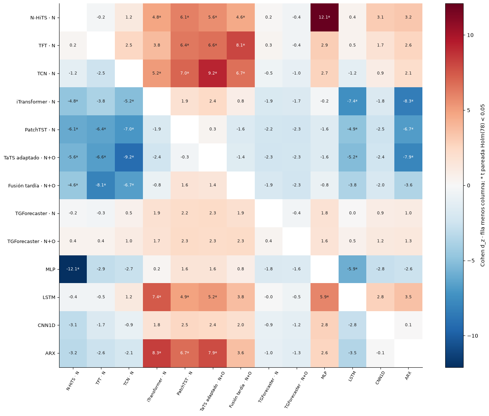
La t pareada con Holm rechaza en 19 de las 78 parejas. Los valores negativos favorecen al procedimiento de la fila. Los asteriscos identifican rechazos de la t pareada con Holm, sujetos a sus supuestos, y no alteran el resultado de Wilcoxon. Un efecto estandarizado grande puede coexistir con una diferencia absoluta pequeña cuando la variación entre semillas es reducida; el margen práctico se evalúa por separado.
Distribución de diferencias entre inicializaciones#
Los gráficos Q–Q comparan cada procedimiento con el PatchTST numérico. Son doce contrastes diagnósticos sobre cinco diferencias; la tabla anterior conserva las 78 parejas completas.
with np.load(g_result/'perdidas_y_bootstrap.npz',allow_pickle=False) as g_archive:
g_seed_matrix=g_archive['semillas'];g_seed_keys=g_archive['nombres'].tolist()[:len(g_keys)]
g_reference='adj_modelo6_20261112_1035__N'
fig,axes=plt.subplots(int(np.ceil((len(g_keys)-1)/3)),3,figsize=(16,18),layout='constrained')
for ax,g_k in zip(axes.flat,[k for k in g_keys if k!=g_reference]):
g_d=g_seed_matrix[:,g_seed_keys.index(g_k)]-g_seed_matrix[:,g_seed_keys.index(g_reference)]
stats.probplot(g_d,dist='norm',plot=ax)
ax.set(title=g_names[g_k],xlabel='Cuantil normal teórico',ylabel='MASE − control N')
for g_ax in list(axes.flat)[len(g_keys)-1:]:g_ax.set_visible(False)
display(fig);plt.close(fig)
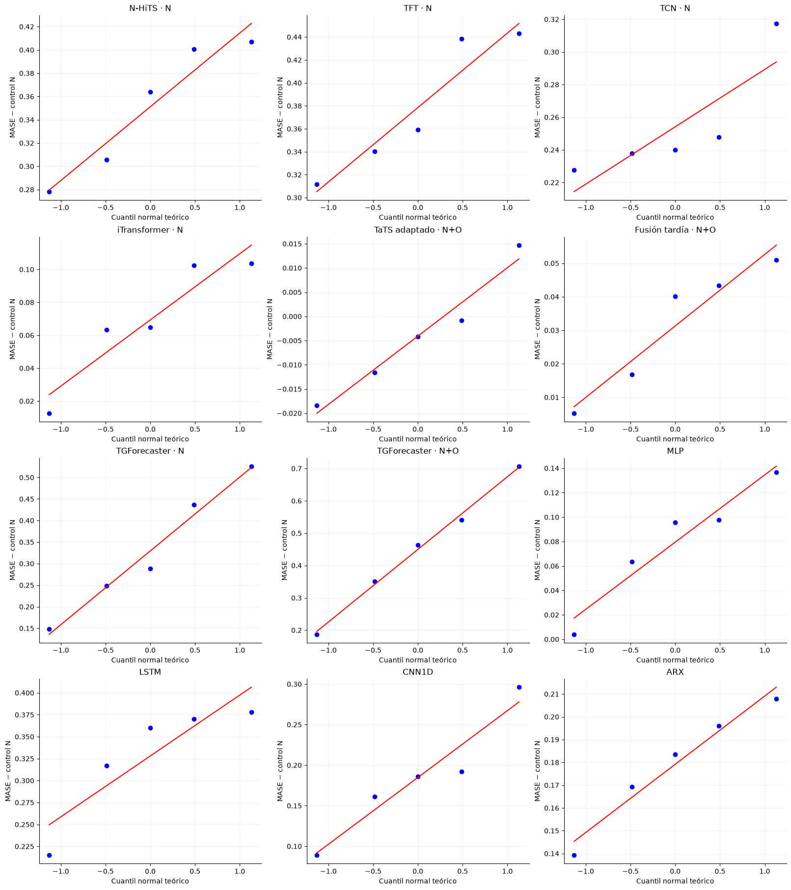
Cinco puntos ofrecen poca resolución para detectar desviaciones de normalidad. Estos gráficos describen las diferencias de inicialización y no sustituyen la inferencia temporal por bloques ni justifican elegir una prueba después de observar su resultado.
Friedman, post hoc y conjunto de confianza#
Friedman utiliza cinco bloques de semillas y trece procedimientos. Es un análisis condicionado a esta serie, no una comparación sobre cinco datasets independientes. El post hoc Nemenyi emplea rangos medios y una distancia crítica de aproximadamente 8.16 posiciones, considerable por el pequeño número de bloques. Se conserva además Wilcoxon–Holm completo como alternativa post hoc.
print(f"Friedman: Q={e2_protocolo['friedman']:.6f}; p={e2_protocolo['p_Friedman']:.6g}")
print(f"Sensibilidad por permutación de etiquetas dentro de semilla: p={e2_protocolo['p_Friedman_permutacion']:.6g}")
print(f"Levene centrado en mediana: p={e2_protocolo['p_Levene']:.6f}")
e2_rangos = pd.read_csv(e2_RESULT / 'rangos.csv').sort_values('rango', ascending=False)
e2_fig, e2_ax = plt.subplots(figsize=(12, 6))
e2_ax.plot(e2_rangos.rango, np.arange(len(e2_rangos)), 'o', color='#287f83', ms=7)
e2_ax.set_yticks(np.arange(len(e2_rangos)), e2_rangos.modelo)
e2_ax.set_xlim(0.7, len(e2_rangos) + 0.7)
e2_ax.set_xticks(np.arange(1, len(e2_rangos) + 1))
e2_ax.set_xlabel('Rango medio entre cinco semillas; menor es mejor')
e2_cd = e2_protocolo['CD_Nemenyi']
e2_yy = len(e2_rangos) + 0.1
e2_ax.plot([1, 1 + e2_cd], [e2_yy, e2_yy], color='#333333', lw=2)
e2_ax.plot([1, 1], [e2_yy - 0.12, e2_yy + 0.12], color='#333333')
e2_ax.plot([1 + e2_cd, 1 + e2_cd], [e2_yy - 0.12, e2_yy + 0.12], color='#333333')
e2_ax.text(1 + e2_cd / 2, e2_yy + 0.2, f'Diferencia crítica Nemenyi: {e2_cd:.2f}', ha='center')
e2_ax.set_ylim(-0.6, len(e2_rangos) + 0.8)
e2_ax.grid(axis='x', alpha=0.15)
e2_fig.tight_layout()
display(e2_fig)
plt.close(e2_fig)
Friedman: Q=54.382418; p=2.33475e-07
Sensibilidad por permutación de etiquetas dentro de semilla: p=9.999e-05
Levene centrado en mediana: p=0.001526
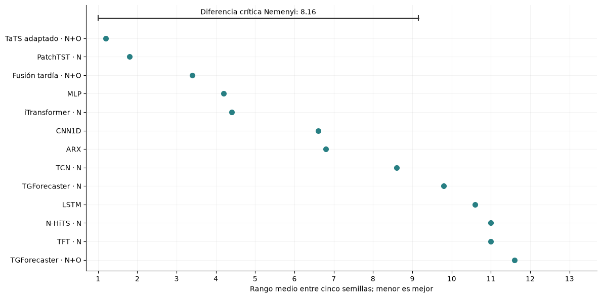
Friedman rechaza igualdad global de rangos, pero no afirma que todos los pares difieran. La distancia crítica exige separaciones grandes para rechazar con Nemenyi; una separación menor no demuestra equivalencia. Levene centrado en mediana rechaza igualdad de varianzas (p≈0.001526), coherente con dispersiones diferentes entre procedimientos. Se conserva el emparejamiento por semilla y la inferencia temporal robusta.
El Model Confidence Set utiliza pérdidas diarias y un estadístico de rango studentizado con el mismo bootstrap circular. Su eliminación secuencial controla la búsqueda de un conjunto de procedimientos compatibles con mejor precisión al nivel del 10 %.
Post hoc completo de Nemenyi#
La matriz presenta las 78 comparaciones post hoc entre los trece procedimientos. Nemenyi ya controla su familia de comparaciones mediante la distribución del rango studentizado; no se añade Holm a esos mismos valores p.
g_nemenyi=pd.read_csv(g_result/'nemenyi.csv')
assert len(g_nemenyi)==len(g_keys)*(len(g_keys)-1)//2
g_matrix=np.full((len(g_keys),len(g_keys)),np.nan)
for g_pair in g_nemenyi.itertuples():
g_i,g_j=g_keys.index(g_pair.A),g_keys.index(g_pair.B)
g_matrix[g_i,g_j]=g_matrix[g_j,g_i]=g_pair.p_Nemenyi
fig,ax=plt.subplots(figsize=(14,11),layout='constrained')
g_im=ax.imshow(g_matrix,cmap='viridis_r',vmin=0,vmax=1)
ax.set(xticks=range(len(g_keys)),yticks=range(len(g_keys)),xticklabels=[g_names[k] for k in g_keys],yticklabels=[g_names[k] for k in g_keys])
ax.tick_params(axis='x',rotation=60,labelsize=8);ax.tick_params(axis='y',labelsize=9);ax.grid(False)
for g_i in range(len(g_keys)):
for g_j in range(len(g_keys)):
if g_i!=g_j:
ax.text(g_j,g_i,f'{g_matrix[g_i,g_j]:.3f}'+('*' if g_matrix[g_i,g_j]<.05 else ''),ha='center',va='center',fontsize=7,color='white' if g_matrix[g_i,g_j]>.5 else '#222222')
fig.colorbar(g_im,ax=ax,label='p Nemenyi · * < 0,05')
fig.savefig(g_figures/'nemenyi_completo.png',dpi=160)
display(fig);plt.close(fig)
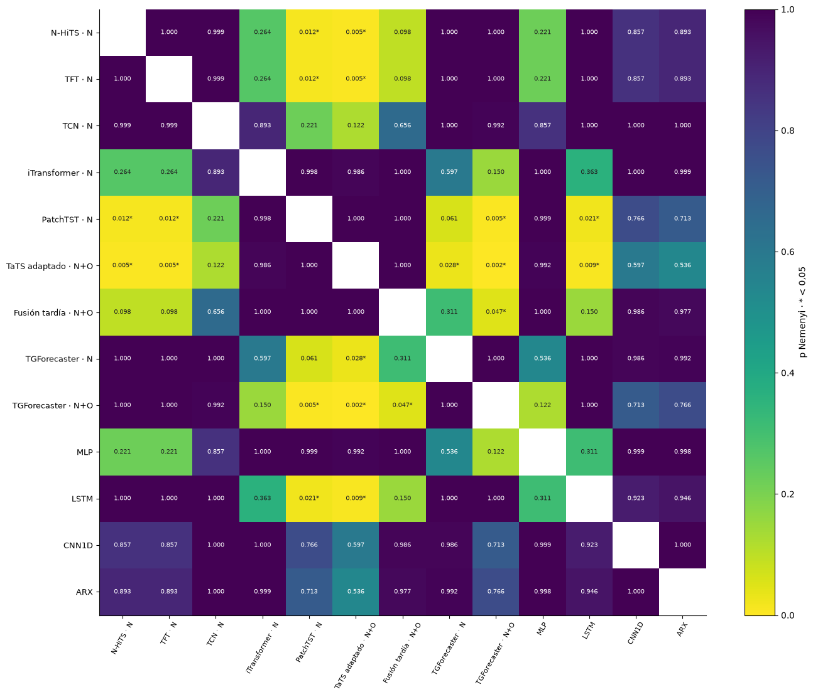
Nemenyi rechaza en 10 de las 78 parejas: las parejas específicas se identifican en la matriz completa y su tabla descargable. El rechazo global de Friedman no se extiende automáticamente a todos los pares. Nemenyi exige separaciones de rango grandes con cinco bloques y trece procedimientos. Las celdas sin rechazo no acreditan equivalencia; se conservan los contrastes pareados y sus tamaños del efecto para valorar magnitud e incertidumbre.
g_mcs=pd.read_csv(g_result/'mcs.csv').sort_values(['retenido_90','paso'],ascending=[False,True])
assert len(g_mcs)==len(g_benchmark) and set(g_mcs.clave)==set(g_benchmark.index)
g_mcs['Estado']=np.where(g_mcs.retenido_90,'Retenido','Excluido')
display(g_mcs[['modelo','Estado','paso','p_crudo','p_MCS']].rename(columns={'modelo':'Procedimiento','paso':'Paso','p_crudo':'p del paso','p_MCS':'p MCS'}).style.format({'p del paso':'{:.4g}','p MCS':'{:.4g}'}))
| Procedimiento | Estado | Paso | p del paso | p MCS | |
|---|---|---|---|---|---|
| 13 | PatchTST · N | Retenido | 14 | 0.4356 | 0.4356 |
| 14 | TaTS adaptado · N+O | Retenido | 15 | 1 | 1 |
| 0 | ingenuo 24h | Excluido | 1 | 9.999e-05 | 9.999e-05 |
| 1 | TFT · N | Excluido | 2 | 9.999e-05 | 9.999e-05 |
| 2 | TGForecaster · N+O | Excluido | 3 | 9.999e-05 | 9.999e-05 |
| 3 | LSTM | Excluido | 4 | 9.999e-05 | 9.999e-05 |
| 4 | N-HiTS · N | Excluido | 5 | 9.999e-05 | 9.999e-05 |
| 5 | TGForecaster · N | Excluido | 6 | 9.999e-05 | 9.999e-05 |
| 6 | CNN1D | Excluido | 7 | 9.999e-05 | 9.999e-05 |
| 7 | TCN · N | Excluido | 8 | 9.999e-05 | 9.999e-05 |
| 8 | ARX | Excluido | 9 | 9.999e-05 | 9.999e-05 |
| 9 | ingenuo 168h | Excluido | 10 | 9.999e-05 | 9.999e-05 |
| 10 | MLP | Excluido | 11 | 9.999e-05 | 9.999e-05 |
| 11 | Fusión tardía · N+O | Excluido | 12 | 9.999e-05 | 9.999e-05 |
| 12 | iTransformer · N | Excluido | 13 | 9.999e-05 | 9.999e-05 |
El procedimiento evaluó los trece modelos y las dos referencias. Retiene TaTS con texto oficial y su control numérico en el MCS del 90 %; los demás figuran como excluidos con su paso y valor p. Mostrar dos retenidos no significa que solo se hayan comparado dos modelos, ni establece un ganador único o la necesidad del texto.
Diagnóstico de residuos y calibración#
Para el diagnóstico se utiliza el residuo diario promedio de la predicción media de las cinco semillas. Este promedio se restringe al diagnóstico: no reemplaza la definición del benchmark. Se evalúan Ljung–Box a 7, 14 y 28 días, Ljung–Box de residuos cuadrados, ARCH-LM con 14 rezagos, BDS con dimensión 2 y radio 1,5 desviaciones, Jarque–Bera y calibración de Mincer–Zarnowitz. Cada columna de diagnósticos se ajusta por Holm entre los trece procedimientos.
e2_diag = pd.read_csv(e2_RESULT / 'diagnostico_residuos.csv')
display(e2_diag[['modelo', 'p_LB14_Holm', 'p_ARCH_Holm', 'p_BDS_Holm', 'p_Mincer_Zarnowitz_Holm']].rename(columns={'modelo': 'Procedimiento', 'p_LB14_Holm': 'Ljung–Box (14)', 'p_ARCH_Holm': 'ARCH-LM', 'p_BDS_Holm': 'BDS (m=2)', 'p_Mincer_Zarnowitz_Holm': 'Mincer–Zarnowitz'}).style.format({e2_c: (lambda p: '<1e-300' if p==0 else f'{p:.3g}') for e2_c in ['Ljung–Box (14)', 'ARCH-LM', 'BDS (m=2)', 'Mincer–Zarnowitz']}))
| Procedimiento | Ljung–Box (14) | ARCH-LM | BDS (m=2) | Mincer–Zarnowitz | |
|---|---|---|---|---|---|
| 0 | N-HiTS · N | 5.6e-77 | 0.0249 | 2.21e-10 | 2.23e-85 |
| 1 | TFT · N | 4.92e-62 | 0.57 | 8.12e-27 | 8.61e-82 |
| 2 | TCN · N | 2.14e-09 | 0.57 | 1.55e-07 | 4.17e-27 |
| 3 | iTransformer · N | 2.63e-15 | 6.46e-05 | 0.000209 | 1.68e-40 |
| 4 | PatchTST · N | 6.76e-14 | 0.183 | 3.92e-08 | 6.58e-23 |
| 5 | TaTS adaptado · N+O | 1.67e-30 | 0.0249 | 1.01e-13 | 6.08e-10 |
| 6 | Fusión tardía · N+O | 2.98e-19 | 0.0203 | 1.17e-09 | 1.73e-11 |
| 7 | TGForecaster · N | 6.52e-92 | 4.55e-08 | 3.12e-86 | 9.38e-16 |
| 8 | TGForecaster · N+O | 1.76e-92 | 1.84e-10 | 1.39e-68 | 6.41e-31 |
| 9 | MLP | 3.98e-08 | 0.0357 | 0.000209 | 4.14e-20 |
| 10 | LSTM | 4.2e-17 | 0.0907 | 1.44e-06 | 9.59e-40 |
| 11 | CNN1D | 2.56e-29 | 0.0357 | 1.28e-12 | 5e-25 |
| 12 | ARX | 1.24e-87 | 1.24e-07 | 3.01e-09 | 1.46e-92 |
Ljung–Box detecta dependencia residual y Mincer–Zarnowitz rechaza la calibración conjunta de intercepto cero y pendiente uno en los trece procedimientos. BDS también rechaza independencia; como ya existe autocorrelación, no debe interpretarse ese rechazo aisladamente como demostración de no linealidad. ARCH-LM rechaza ausencia de heterocedasticidad dinámica en parte de las familias, no en todas. La dependencia remanente justifica emplear inferencia temporal robusta y deja margen para mejorar la especificación.
Mincer–Zarnowitz se ajusta sobre demanda diaria media expresada en unidades q168 para evitar una matriz de restricciones mal condicionada; el contraste nulo sigue siendo intercepto cero y pendiente uno. La covarianza es HAC de 13 días. No se calcula PIT ni cobertura probabilística a partir del rango entre semillas, porque estos modelos entregan pronósticos puntuales.
Variación entre fechas e inicializaciones#
La pérdida diaria de las cinco semillas se descompone, para los trece procedimientos, en efectos descriptivos de fecha, inicialización e interacción. No se supone independencia entre días ni se interpreta la descomposición como ANOVA inferencial.
g_components=[]
for g_k in g_keys:
g_values=np.abs(g_pred[g_k]-g_y[None]).mean(axis=2)/g_q
g_mean=g_values.mean()
g_components.append({'Procedimiento':g_names[g_k],
'Inicialización':np.mean((g_values.mean(axis=1)-g_mean)**2),
'Fecha':np.mean((g_values.mean(axis=0)-g_mean)**2),
'Interacción':np.mean((g_values-g_values.mean(axis=1)[:,None]-g_values.mean(axis=0)[None,:]+g_mean)**2)})
g_components=pd.DataFrame(g_components).set_index('Procedimiento')
fig,ax=plt.subplots(figsize=(14,6))
g_components.div(g_components.sum(axis=1),axis=0).plot.bar(stacked=True,ax=ax,rot=45)
ax.set(xlabel='',ylabel='Fracción de variación descriptiva');ax.tick_params(axis='x',labelsize=8)
fig.tight_layout();display(fig);plt.close(fig)
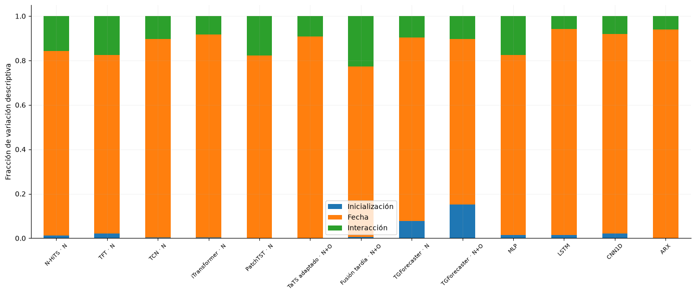
La componente de fecha recoge cambios de dificultad compartidos por las inicializaciones. La interacción representa cambios que no se explican por efectos aditivos de fecha y semilla. Estas fracciones complementan los intervalos de error; no estiman por sí solas la incertidumbre ante otros periodos o nuevas series.
Impacto de valores atípicos sobre el error e identidad de prueba#
Los umbrales de Tukey se fijan sobre log(y/y_lag168) en 2000–2017 y se aplican sin modificación a prueba. Se comparan errores en horas señaladas y restantes para los trece procedimientos; ninguna hora se elimina del benchmark.
g_series=pd.read_parquet(ROOT/'data/processed/panel_horario.parquet',columns=['y_demanda_real_kwh']).y_demanda_real_kwh
g_development=g_series.loc[g_series.index<'2018-01-01']
g_log=np.log(g_development/g_development.shift(168)).dropna()
g_q1,g_q3=g_log.quantile([.25,.75]);g_iqr=g_q3-g_q1
g_times=pd.DatetimeIndex([d+pd.Timedelta(hours=h) for d in g_dates for h in range(24)])
g_ref=g_series.reindex(g_times-pd.Timedelta(hours=168)).to_numpy().reshape(g_y.shape)
g_ratio=np.log(g_y/g_ref)
g_outlier=(g_ratio<g_q1-1.5*g_iqr)|(g_ratio>g_q3+1.5*g_iqr)
g_impact=[]
for g_k in g_keys:
g_e=np.abs(g_pred[g_k]-g_y[None]).mean(axis=0)
g_impact.append({'Procedimiento':g_names[g_k],'MAE atípicos (kWh)':g_e[g_outlier].mean(),
'MAE restantes (kWh)':g_e[~g_outlier].mean(),'Error en atípicos (%)':100*g_e[g_outlier].sum()/g_e.sum(),
'Cambio MAE al excluir (%)':100*(g_e[~g_outlier].mean()/g_e.mean()-1)})
g_impact=pd.DataFrame(g_impact)
display(g_impact.round(3))
print(f'Horas señaladas: {g_outlier.sum()} de {g_outlier.size} ({100*g_outlier.mean():.2f} %)')
g_digest=hashlib.sha256();g_digest.update(b'SIN-demand-test-v1\n')
g_digest.update(np.asarray(origen,dtype='<i8').tobytes());g_digest.update(np.asarray(g_y,dtype='<f8').tobytes())
assert g_digest.hexdigest()=='595f00dd186280542cfd7fed9a580ebe1b19c8cc4e0e742ef12e2e6d2eb0f49a'
Horas señaladas: 2520 de 35064 (7.19 %)
| Procedimiento | MAE atípicos (kWh) | MAE restantes (kWh) | Error en atípicos (%) | Cambio MAE al excluir (%) | |
|---|---|---|---|---|---|
| 0 | N-HiTS · N | 259088.956 | 217741.078 | 8.436 | -1.346 |
| 1 | TFT · N | 254279.389 | 224478.167 | 8.064 | -0.945 |
| 2 | TCN · N | 228006.232 | 197614.544 | 8.201 | -1.093 |
| 3 | iTransformer · N | 223235.218 | 155047.872 | 10.030 | -3.064 |
| 4 | PatchTST · N | 235910.931 | 137964.088 | 11.693 | -4.855 |
| 5 | TaTS adaptado · N+O | 211210.792 | 138931.434 | 10.532 | -3.604 |
| 6 | Fusión tardía · N+O | 236188.243 | 145213.019 | 11.186 | -4.309 |
| 7 | TGForecaster · N | 276892.459 | 211335.936 | 9.211 | -2.181 |
| 8 | TGForecaster · N+O | 277712.426 | 239249.447 | 8.247 | -1.142 |
| 9 | MLP | 194785.909 | 159622.229 | 8.633 | -1.559 |
| 10 | LSTM | 262977.249 | 212067.367 | 8.761 | -1.696 |
| 11 | CNN1D | 264847.422 | 178665.536 | 10.297 | -3.351 |
| 12 | ARX | 248818.783 | 178589.098 | 9.738 | -2.749 |
Los umbrales señalan el 7,19 % de las horas. La tabla muestra su contribución al error y cuánto cambiaría el MAE al excluirlas; es un análisis de sensibilidad, no una propuesta de depuración de prueba. El efecto varía entre procedimientos y no permite atribuir toda la brecha de generalización a atípicos.
La huella SHA-256 de orígenes y etiquetas de prueba es 595f00dd186280542cfd7fed9a580ebe1b19c8cc4e0e742ef12e2e6d2eb0f49a. Identifica su contenido, sin acreditar por sí sola la fecha de congelación.
Importancia de variables en los modelos ampliados#
La importancia se estima manteniendo pesos y escaladores: se traslada circularmente un grupo de entradas entre orígenes del mismo año, con una separación mínima de 28 días. Se conservan las 168 horas y el orden interno de cada historia; la etiqueta permanece en su fecha. Los nueve grupos cubren demanda, nivel de restitución, precio, reservas y aportes, temperatura, humedad, precipitación y calendario. Las magnitudes hídricas correlacionadas se agrupan como reservas; cada variable climática reúne las ocho ciudades. El calendario incluye pasado y horizonte, pero la hora del día es invariante entre estos orígenes diarios y su importancia no queda identificada.
Se utilizan las cinco inicializaciones de cada uno de los nueve procedimientos y 192 fechas: días 1, 8, 15 y 22 de todos los meses de 2022–2025. Los donantes se toman de los 1.461 orígenes del mismo periodo. Se evalúan tres desplazamientos reproducibles y se promedian primero las cinco semillas. Esta muestra fija no se elige por error ni sustituye el benchmark de prueba completa.
Antes de perturbar se reconstruyeron las 45 predicciones basales sobre los 1.461 días. La diferencia absoluta máxima respecto de los archivos conservados fue 778.48 kWh por pronóstico y el mayor cambio relativo del MAE fue 0.0060 %. Son comprobaciones de reproducción entre motores CPU/GPU; los resultados de prueba publicados no se reemplazan. Las comparaciones de sensibilidad utilizan siempre el basal CPU del mismo checkpoint.
d_root=ROOT/'results/diagnosticos_ampliados'
d_imp=pd.read_csv(d_root/'importancia_resumen.csv')
d_sens=pd.read_csv(d_root/'sensibilidad_resumen.csv')
d_lat=pd.read_csv(d_root/'latencia_resumen.csv').set_index('clave')
d_names=pd.read_csv(ROOT/'results/evaluacion_e2/benchmark.csv').set_index('clave').modelo.to_dict()
from matplotlib.colors import SymLogNorm
d_groups=['perfil_demanda','nivel_ventana','precio','reservas','aportes','temperatura','humedad','precipitacion','calendario']
d_labels=['Perfil de demanda','Nivel de ventana','Precio','Reservas hídricas','Aportes hídricos','Temperatura','Humedad','Precipitación','Calendario']
d_keys=[k for k in g_keys if k in set(d_imp.clave)]
d_matrix=d_imp.pivot(index='clave',columns='grupo',values='cambio_pct').reindex(index=d_keys,columns=d_groups)
d_lim=max(abs(d_matrix.to_numpy()).max(),1.)
fig,ax=plt.subplots(figsize=(15,8),layout='constrained')
d_im=ax.imshow(d_matrix,cmap='RdBu_r',norm=SymLogNorm(linthresh=1,vmin=-d_lim,vmax=d_lim))
ax.set(xticks=range(len(d_groups)),yticks=range(len(d_keys)),xticklabels=d_labels,yticklabels=[d_names[k] for k in d_keys])
ax.tick_params(axis='x',rotation=35,labelsize=9);ax.tick_params(axis='y',labelsize=9);ax.grid(False)
for i in range(len(d_keys)):
for j in range(len(d_groups)):
v=d_matrix.iloc[i,j];ax.text(j,i,f'{v:.2g}',ha='center',va='center',fontsize=8,color='white' if abs(v)>d_lim/5 else '#151515')
fig.colorbar(d_im,ax=ax,label='Cambio del MAE (%) · escala simétrica logarítmica fuera de ±1 %')
display(fig);plt.close(fig)
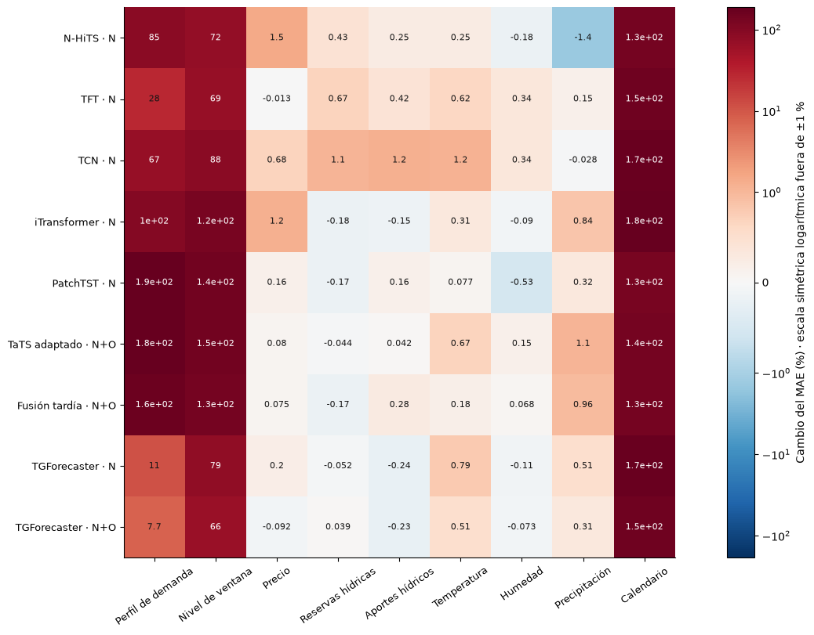
El mayor deterioro aparece al perturbar perfil de demanda en PatchTST · N (187.57 %). Entre las covariables externas, el mayor incremento corresponde a precio en N-HiTS · N (1.48 %). Las celdas negativas indican que la perturbación redujo el error en estas fechas; las próximas a cero describen poca sensibilidad bajo este mecanismo, sin demostrar irrelevancia intrínseca. El nivel participa también en la restitución a kWh y su efecto no es atribuible solo a una entrada explícita de la red.
La permutación rompe combinaciones observadas de calendario, demanda y exógenas; es una dependencia condicional del modelo, no un efecto causal ni el resultado de retirar variables y reentrenar. En los canales textuales también puede cambiar la consulta de relevancia al cambiar la historia. Los CSV conservan los tres desplazamientos y su p10–p90 después de promediar semillas; ese rango no es un intervalo de confianza temporal. Los diagnósticos de las cuatro familias base utilizan 1.461 fechas y diez desplazamientos, por lo que sus magnitudes deben leerse con ese alcance distinto.
Sensibilidad al contenido de los documentos oficiales#
Se mantienen la historia numérica, el calendario, los pesos y las listas documentales de cada origen. Se contrastan tres intervenciones: eliminar documentos y su presencia; anular únicamente sus vectores manteniendo la presencia; y sustituir el contenido por documentos de la misma fuente con disponibilidad declarada anterior a 2022, con tres remuestreos reproducibles con reemplazo. Este último control conserva volumen y fuente, pero rompe la correspondencia entre el contenido y el acontecimiento reciente. No es una permutación biyectiva ni introduce documentos con fecha declarada posterior al origen. El control a cero retiene los sesgos aprendidos y distingue contenido de presencia.
El análisis incluye los 1.461 días y las cinco semillas de TaTS, fusión tardía y TGForecaster con documentos. La variación del error es respecto del mismo procedimiento con sus documentos originales; no representa la comparación N frente a N+O entrenados por separado. Los IC95 % se obtienen mediante 10.000 remuestras circulares pareadas de 14 días, promediando antes semillas y repeticiones del placebo.
d_conditions=['sin_documentos','contenido_cero','contenido_historico']
d_clabels=['Sin documentos','Contenido cero','Contenido histórico']
d_text=d_sens[d_sens.condicion.isin(d_conditions)]
d_textkeys=[k for k in g_keys if k in set(d_text.clave)]
fig,axes=plt.subplots(1,len(d_textkeys),figsize=(16,5),layout='constrained')
for ax,k in zip(np.atleast_1d(axes),d_textkeys):
s=d_text[d_text.clave.eq(k)].set_index('condicion').reindex(d_conditions)
ax.errorbar(s.cambio_pct,np.arange(3),xerr=np.vstack([s.cambio_pct-s.IC95_inf,s.IC95_sup-s.cambio_pct]),fmt='o',capsize=4,color='#258a83')
ax.axvline(0,color='#777',linestyle='--',linewidth=1);ax.set(yticks=range(3),yticklabels=d_clabels,xlabel='Cambio del MAE (%) e IC95 % temporal',title=d_names[k])
ax.tick_params(axis='y',labelsize=9)
display(fig);plt.close(fig)
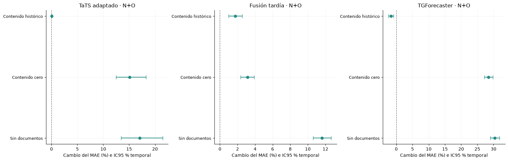
En Fusión tardía · N+O, retirar documentos cambia el MAE +11.61 % (IC95 % [+10.59; +12.65]) y sustituir su contenido por texto histórico lo cambia +1.76 % (IC95 % [+0.98; +2.55]). La sustitución modifica el pronóstico en promedio 35923.1 kWh por intervalo. En TaTS adaptado · N+O, retirar documentos cambia el MAE +17.07 % (IC95 % [+13.46; +21.48]) y sustituir su contenido por texto histórico lo cambia +0.02 % (IC95 % [+0.00; +0.03]). La sustitución modifica el pronóstico en promedio 476.8 kWh por intervalo. En TGForecaster · N+O, retirar documentos cambia el MAE +30.39 % (IC95 % [+29.02; +31.84]) y sustituir su contenido por texto histórico lo cambia -1.65 % (IC95 % [-2.45; -0.84]). La sustitución modifica el pronóstico en promedio 57748.3 kWh por intervalo. La comparación con contenido cero completa la separación entre señal semántica y activación de la rama. Un cambio pequeño de pronóstico con texto sustituido sugiere poca sensibilidad al contenido bajo este control; un cambio grande demuestra dependencia, pero no garantiza que esa dependencia sea útil. La dependencia de una rama puede coexistir con un error mayor que el control N ajustado por separado. Los intervalos son puntuales y exploratorios, condicionados a las inicializaciones disponibles; no se emplean para seleccionar arquitecturas ni para declarar equivalencia dentro del margen del estudio.
En TaTS, el reemplazo histórico cambia el MAE apenas +0.015 % y desplaza el pronóstico medio 476.8 kWh. La sensibilidad a anular el canal no implica, por tanto, una utilización comparable de la información específica del día: gran parte de su efecto se conserva con contenido antiguo de la misma fuente. En TGForecaster con documentos, el contenido histórico reduce descriptivamente el error (-1.65 %) frente al original. El resultado cuestiona la utilidad de su alineación reciente bajo este control, sin convertir el placebo en una nueva configuración seleccionada.
Descripciones estáticas de los canales en TGForecaster#
Las dos variantes TGForecaster usan 33 descripciones de canales. Se evalúan a cero y con tres permutaciones reproducibles de su asociación a los canales. Se altera su uso en la memoria y en las consultas del horizonte; la descripción del objetivo en el mecanismo de relevancia documental permanece fija. Se conserva el canal documental original en N+O. Es una intervención sobre la identificación estática de variables, distinta de retirar noticias recientes; puede producir entradas alejadas de las observadas durante el ajuste.
d_stat=d_sens[d_sens.condicion.str.startswith('descripciones_')]
d_statkeys=[k for k in g_keys if k in set(d_stat.clave)]
fig,axes=plt.subplots(1,len(d_statkeys),figsize=(13,4),layout='constrained')
for ax,k in zip(np.atleast_1d(axes),d_statkeys):
s=d_stat[d_stat.clave.eq(k)].set_index('condicion').reindex(['descripciones_cero','descripciones_permutadas'])
ax.errorbar(s.cambio_pct,np.arange(2),xerr=np.vstack([s.cambio_pct-s.IC95_inf,s.IC95_sup-s.cambio_pct]),fmt='o',capsize=4,color='#447ba0')
ax.axvline(0,color='#777',linestyle='--',linewidth=1)
ax.set(yticks=range(2),yticklabels=['Descripciones cero','Descripciones permutadas'],xlabel='Cambio del MAE (%) e IC95 % temporal',title=d_names[k])
display(fig);plt.close(fig)
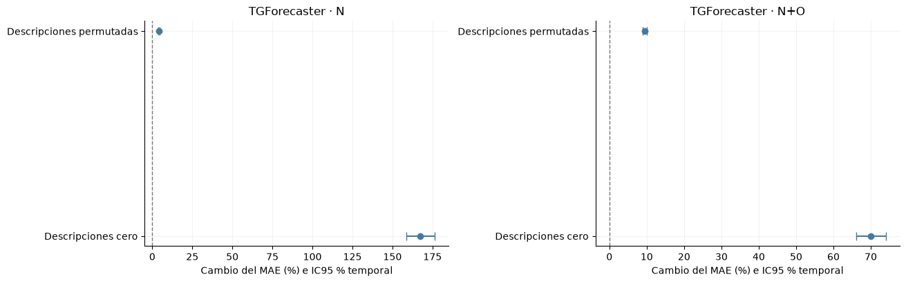
En TGForecaster · N, anular las descripciones cambia el MAE +167.27 % y permutarlas +4.20 %. En TGForecaster · N+O, anular las descripciones cambia el MAE +69.97 % y permutarlas +9.50 %. La sensibilidad a estas descripciones no acredita por sí misma que los documentos variables en el tiempo mejoren el pronóstico. El canal estático y el documental tienen funciones distintas; sus efectos se presentan por separado.
Coste de inferencia medido y coste de ajuste registrado#
Se presentan parámetros, duración del ajuste final y épocas para los trece procedimientos. La duración de ajuste es la mediana de cinco semillas; los dispositivos y protocolos distintos limitan su comparación directa. La latencia CPU se vuelve a medir en el mismo ordenador para las 65 realizaciones: un hilo, batch uno y los mismos tres orígenes reales. Cada corrida tiene 20 calentamientos y 100 mediciones. Se informa la mediana de las 15 medianas (cinco semillas × tres orígenes) y la mediana de sus p95; esta última no es el p95 combinado de todas las llamadas.
g_cost=g_meta.groupby('clave').agg(Parametros=('parametros','first'),Ajuste_s_mediana=('segundos','median'),Epocas_mediana=('epocas','median'),Dispositivo=('dispositivo','first')).reindex(g_keys)
g_latency=pd.read_csv(ROOT/'results/diagnosticos_ampliados/latencia_resumen.csv').set_index('clave')
g_cost['Latencia_CPU_mediana_ms']=g_latency.mediana_ms.reindex(g_keys)
g_cost['Mediana_p95_por_corrida_ms']=g_latency.p95_ms.reindex(g_keys)
assert g_cost[['Latencia_CPU_mediana_ms','Mediana_p95_por_corrida_ms']].notna().all().all()
g_cost.index=[g_names[k] for k in g_cost.index]
display(g_cost.rename(columns={'Parametros':'Parámetros','Ajuste_s_mediana':'Ajuste final mediano (s)',
'Epocas_mediana':'Épocas medianas','Latencia_CPU_mediana_ms':'Latencia CPU mediana (ms)',
'Mediana_p95_por_corrida_ms':'p95 mediano (ms)'}).style.format(precision=3))
| Parámetros | Ajuste final mediano (s) | Épocas medianas | Dispositivo | Latencia CPU mediana (ms) | p95 mediano (ms) | |
|---|---|---|---|---|---|---|
| N-HiTS · N | 17489442 | 22.136 | 16.000 | GPU · registro de hardware | 3.499 | 4.808 |
| TFT · N | 11715596 | 469.700 | 11.000 | cuda | 54.328 | 69.366 |
| TCN · N | 169944 | 128.000 | 29.000 | cuda | 1.928 | 2.690 |
| iTransformer · N | 321816 | 33.100 | 35.000 | cuda | 0.911 | 1.201 |
| PatchTST · N | 466480 | 156.300 | 35.000 | cuda | 3.725 | 5.474 |
| TaTS adaptado · N+O | 1428380 | 1061.900 | 38.000 | cuda | 23.692 | 35.247 |
| Fusión tardía · N+O | 584649 | 352.000 | 26.000 | cuda | 4.244 | 7.291 |
| TGForecaster · N | 2899072 | 1452.500 | 46.000 | cuda | 40.640 | 65.183 |
| TGForecaster · N+O | 326464 | 163.200 | 31.000 | cuda | 4.654 | 7.931 |
| MLP | 111896 | 4.455 | 25.000 | cuda | 0.057 | 0.077 |
| LSTM | 28632 | 14.372 | 43.000 | cuda | 0.324 | 0.425 |
| CNN1D | 47464 | 3.114 | 37.000 | cuda | 0.083 | 0.131 |
| ARX | 14424 | 3.534 | 31.000 | cuda | 0.024 | 0.052 |
La menor latencia mediana corresponde a ARX (0.024 ms) y la mayor a TFT · N (54.328 ms). Los tres orígenes fijados incluyen distinta carga documental y todas las redes producen 24 salidas. El valor medido describe el forward en esta CPU, con entradas y vectores preparados; no es el tiempo de un servicio completo ni incluye la codificación de nuevos documentos. Las diferencias de hardware impiden trasladar directamente estas cifras a GPU u otro ordenador.
Importancia de variables del grupo demanda/calendario#
Se mide cuánto aumenta el error al perturbar un grupo de entradas, manteniendo los pesos y los escaladores. El análisis incluye los 1.461 orígenes diarios de 2022–2025, cuatro familias y cinco inicializaciones por familia. La demanda histórica y el calendario son las entradas de estos modelos; el clima, la hidrología y el texto no reciben puntuaciones porque no intervienen en sus pronósticos.
La importancia por permutación describe la dependencia de un modelo ajustado respecto de sus entradas. Aquí se adapta a ventanas temporales: se trasladan circularmente orígenes completos dentro de cada año, con diez desplazamientos reproducibles y una separación circular mínima de 28 días. Se conserva el orden de las horas dentro de cada bloque y se utilizan los mismos donantes para familias, semillas y grupos. Las etiquetas permanecen en sus fechas originales. Esta perturbación es un diagnóstico retrospectivo, no un pronóstico operativo ni una estimación causal.
La importancia se expresa como diferencia de MASE:
Las figuras muestran el cambio porcentual respecto del MAE basal de cada modelo, equivalente al cambio relativo de MASE con el denominador fijo. Un valor positivo indica deterioro al perturbar la entrada; uno negativo indica menor error bajo esa perturbación. Las comparaciones son condicionales al modelo, al periodo y al esquema de donantes.
Demanda y calendario#
La demanda se examina como perfil normalizado y nivel medio de la ventana, tanto por separado como conjuntamente. Perturbar el nivel modifica el factor usado al restituir la salida a kWh. El calendario se transfiere simultáneamente en pasado y horizonte, conservando juntas las codificaciones de cada grupo. Se distinguen calendario completo, semana y festivos, y año y temporadas. Los grupos se solapan y sus importancias no se suman.
FI = ROOT / 'results/jbook/importancia_variables'
reporte_fi = json.loads((FI / 'ejecucion.json').read_text(encoding='utf-8'))
protocolo_fi = json.loads((FI / 'protocolo.json').read_text(encoding='utf-8'))
fi = pd.read_csv(FI / 'permutaciones.csv')
assert reporte_fi['completo'] and (not reporte_fi['entrenamiento'])
assert len(fi) == 2600 and (not fi.duplicated(['modelo', 'semilla', 'grupo', 'repeticion']).any())
assert set(fi.modelo) == set(modelos)
assert set(fi.semilla) == set(range(1000, 1005)) and set(fi.repeticion) == set(range(10))
por_perm = fi.groupby(['modelo', 'grupo', 'repeticion'], sort=False)[['MAE_base', 'delta_MAE', 'delta_MASE']].mean().reset_index()
por_perm['delta_rel_pct'] = 100 * por_perm.delta_MAE / por_perm.MAE_base
resumen_fi = por_perm.groupby(['modelo', 'grupo'], sort=False).agg(cambio_MAE_pct=('delta_rel_pct', 'mean'), p10_perm_pct=('delta_rel_pct', lambda x: x.quantile(0.1)), p90_perm_pct=('delta_rel_pct', lambda x: x.quantile(0.9)), delta_MAE_kWh=('delta_MAE', 'mean'), delta_MASE=('delta_MASE', 'mean')).reset_index()
grupos_principales = ['demanda_completa', 'perfil_demanda', 'nivel_ventana', 'calendario_completo', 'semanal_festivos', 'anual_temporadas']
nombres_grupos = ['Demanda: perfil y nivel', 'Perfil de demanda, nivel fijo', 'Nivel medio de la ventana', 'Calendario completo', 'Semana y festivos', 'Año y temporadas']
matriz_fi = resumen_fi.pivot(index='grupo', columns='modelo', values='cambio_MAE_pct').reindex(index=grupos_principales, columns=modelos)
from matplotlib.colors import TwoSlopeNorm
lim_fi = float(np.max(np.abs(matriz_fi.to_numpy())))
fig, ax = plt.subplots(figsize=(10, 5.7), layout='constrained')
im = ax.imshow(matriz_fi.to_numpy(), cmap='RdBu_r', norm=TwoSlopeNorm(vmin=-lim_fi, vcenter=0, vmax=lim_fi), aspect='auto')
ax.set(xticks=range(4), xticklabels=[etiquetas[m] for m in modelos], yticks=range(6), yticklabels=nombres_grupos)
ax.grid(False)
for i in range(6):
for j in range(4):
valor = matriz_fi.iloc[i, j]
ax.text(j, i, f'{valor:+.1f} %', ha='center', va='center', color='white' if abs(valor) > 0.55 * lim_fi else '#202020', fontsize=10)
fig.colorbar(im, ax=ax, label='Cambio del MAE frente al basal (%)')
fig.savefig(FI / 'importancia_grupos.png', dpi=170)
display(fig)
plt.close(fig)
mlp_perfil = float(matriz_fi.loc['perfil_demanda', 'mlp'])
mlp_semana = float(matriz_fi.loc['semanal_festivos', 'mlp'])
mlp_anual = float(matriz_fi.loc['anual_temporadas', 'mlp'])
grupo_lider = {etiquetas[m]: nombres_grupos[int(np.argmax(matriz_fi[m].to_numpy()))] for m in modelos}
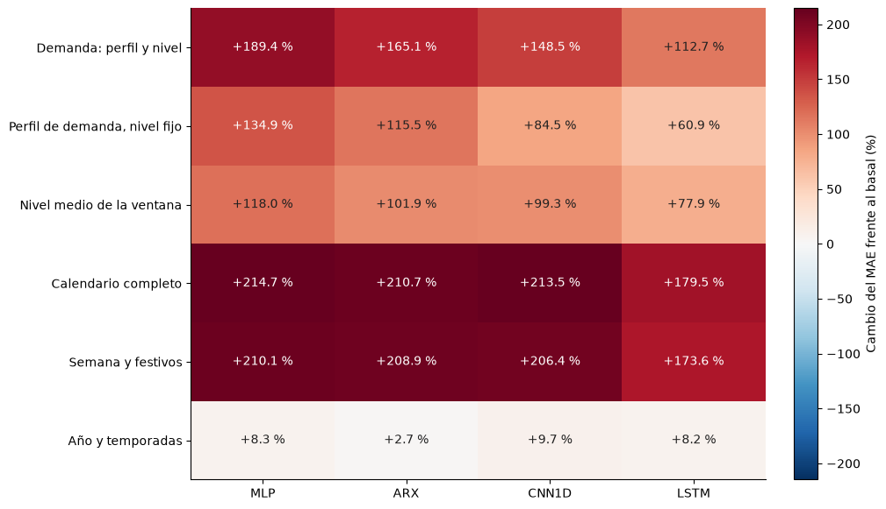
En MLP, perturbar el perfil de demanda con nivel fijo aumenta el MAE un 134.9 %, mientras alterar semana y festivos lo incrementa un 210.1 %. Año y temporadas produce un cambio menor, del 8.3 %. El calendario laboral y la trayectoria reciente aportan información complementaria para reproducir el perfil diario. La importancia del nivel corresponde al procedimiento de normalización y restitución, además de las entradas explícitas de la red. La magnitud no es un porcentaje de varianza explicada ni una contribución aditiva. La correlación entre grupos y las combinaciones artificiales creadas al permutarlos limitan atribuciones individuales.
Distribución de la sensibilidad a lo largo de la historia#
Se perturban por separado los siete bloques consecutivos de 24 horas de demanda normalizada, manteniendo fijos el nivel y el calendario. El bloque 1 es el más reciente y el bloque 7 el más antiguo dentro de las 168 horas disponibles. Los puntos muestran la media; los segmentos, p10–p90 entre los diez desplazamientos después de promediar las cinco inicializaciones. Son dispersión de perturbaciones, no intervalos de confianza temporal.
grupos_dias = [f'dia_{i}' for i in range(1, 8)]
fig, axes = plt.subplots(2, 2, figsize=(12, 8), sharex=True, sharey=True, layout='constrained')
q_dias = resumen_fi.loc[resumen_fi.grupo.isin(grupos_dias)]
xmin = min(0.0, float(q_dias.p10_perm_pct.min()))
xmax = max(0.0, float(q_dias.p90_perm_pct.max()))
for ax, m in zip(axes.ravel(), modelos):
q = resumen_fi.loc[resumen_fi.modelo.eq(m)].set_index('grupo').loc[grupos_dias]
for i, g in enumerate(grupos_dias):
if m == 'arx_lineal' and i >= 2:
ax.text(0.06, i, 'No utiliza este bloque', transform=ax.get_yaxis_transform(), va='center', color='#777777', fontsize=8)
else:
ax.hlines(i, q.loc[g, 'p10_perm_pct'], q.loc[g, 'p90_perm_pct'], color='#247ba0', lw=3)
ax.scatter(q.loc[g, 'cambio_MAE_pct'], i, color='#173f5f', s=30, zorder=3)
ax.axvline(0, color='#666666', ls='--', lw=1)
ax.set(title=etiquetas[m], xlabel='Cambio del MAE frente al basal (%)', yticks=range(7), yticklabels=[f'Bloque {i}' for i in range(1, 8)], xlim=(xmin - 0.04 * (xmax - xmin), xmax * 1.05), ylim=(6.6, -0.6))
fig.savefig(FI / 'importancia_rezagos.png', dpi=170)
display(fig)
plt.close(fig)
mlp_dias = resumen_fi.loc[resumen_fi.modelo.eq('mlp') & resumen_fi.grupo.isin(grupos_dias)].set_index('grupo')
mlp_bloque_lider = int(mlp_dias.cambio_MAE_pct.idxmax().split('_')[1])
mlp_ultimo_dia = float(mlp_dias.loc['dia_1', 'cambio_MAE_pct'])
lstm_antiguo = float(resumen_fi.loc[resumen_fi.modelo.eq('lstm') & resumen_fi.grupo.isin(grupos_dias[1:]), 'cambio_MAE_pct'].abs().max())
lstm_antiguo_texto = 'inferior al 0,001 %' if lstm_antiguo < 0.001 else f'del {lstm_antiguo:.4f} %'
destino_fi = ROOT / 'book/_static/resultados/importancia_variables'
destino_fi.mkdir(parents=True, exist_ok=True)
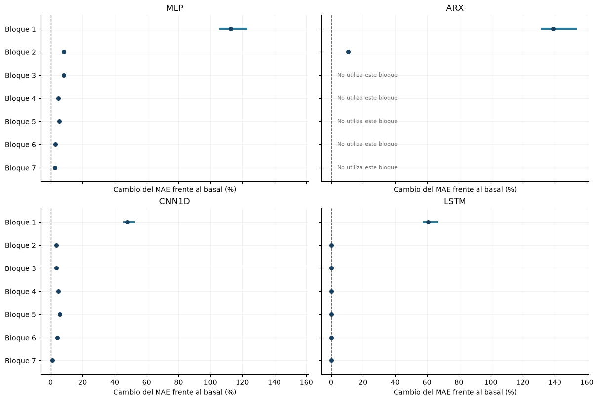
El bloque 1 es el de mayor sensibilidad en MLP: perturbar las últimas 24 horas aumenta su MAE un 112.6 %. La sensibilidad a los bloques anteriores es menor. ARX utiliza únicamente 48 rezagos; los bloques 3–7 quedan identificados como ausentes de su entrada. En LSTM, el cambio absoluto máximo de los bloques 2–7 es del 0.0083 %, compatible con una sensibilidad muy pequeña a esa parte del historial en este diagnóstico. Esa observación no demuestra que todas las redes recurrentes ignoren la historia larga.
Alcance de la atribución#
Las tres codificaciones de hora son idénticas entre orígenes diarios iniciados a medianoche. Permutar orígenes deja ese bloque inalterado; su importancia no es identificable mediante este procedimiento y no se reporta como cero. La salida directa de 24 posiciones también representa la posición horaria.
El desplazamiento preserva las trayectorias de cada bloque, pero rompe dependencias entre demanda, calendario y objetivo. Por ello mide sensibilidad ante perturbaciones fuera de la combinación observada y no estima el efecto de retirar una variable y reentrenar. Los grupos correlacionados pueden sustituirse parcialmente; una importancia pequeña no acredita irrelevancia intrínseca. La prueba conserva su alcance retrospectivo y estos resultados no modifican arquitecturas, selección de entradas ni métricas del benchmark.
Resumen de importancias · Resultados por semilla y desplazamiento · Reproducción del baseline · Protocolo · Registro de cálculo.
Pipeline reproducible de inferencia y perturbación#
El siguiente código utiliza los checkpoints y escaladores conservados, verifica sus huellas, reproduce el baseline y calcula las perturbaciones. La construcción documental lee sus CSV; el cálculo se ejecuta explícitamente con python scripts/importancia_variables.py en un entorno con PyTorch CPU. No contiene pasos de optimización.
"""Importancia agrupada mediante inferencia de checkpoints congelados."""
from pathlib import Path
from types import SimpleNamespace
import argparse
import hashlib
import json
import platform
import sys
import time
import numpy as np
import pandas as pd
ROOT = Path(__file__).resolve().parents[1]
MODELOS = ['mlp', 'arx_lineal', 'cnn1d', 'lstm']
REPETICIONES = 10
SEMILLA_PERMUTACION = 11037
GRUPOS_CAL = {
'semanal_festivos': ['cal_dow', 'cal_es_festivo', 'cal_es_domingo',
'cal_es_sabado', 'cal_es_no_laboral', 'cal_tipo_dia',
'cal_dias_al_siguiente_festivo', 'cal_dias_desde_festivo_previo',
'cal_es_vispera_festivo', 'cal_es_dia_post_festivo',
'cal_es_fin_semana_largo', 'cal_dow_sin', 'cal_dow_cos'],
'anual_temporadas': ['cal_mes', 'cal_dia_anio', 'cal_es_semana_santa',
'cal_es_temporada_navidena', 'cal_es_fin_de_anio', 'cal_doy_sin', 'cal_doy_cos'],
'hora': ['cal_hora', 'cal_hora_sin', 'cal_hora_cos'],
}
GRUPOS = ['demanda_completa', 'perfil_demanda', 'nivel_ventana',
'calendario_completo', 'semanal_festivos', 'anual_temporadas'] + [f'dia_{i}' for i in range(1, 8)]
def sha256(path):
return hashlib.sha256(path.read_bytes()).hexdigest()
def indices_donantes(fechas, repeticion):
"""Traslada circularmente orígenes completos dentro de cada año."""
rng = np.random.default_rng(SEMILLA_PERMUTACION + repeticion)
perm = np.arange(len(fechas))
for anio in sorted(set(fechas.year)):
ix = np.flatnonzero(fechas.year == anio)
if len(ix) < 57:
raise ValueError('Se requieren al menos 57 orígenes diarios por año')
desplazamiento = int(rng.integers(28, len(ix) - 27))
perm[ix] = np.roll(ix, desplazamiento)
assert np.array_equal(np.sort(perm), np.arange(len(fechas)))
assert np.array_equal(fechas.year[perm], fechas.year)
assert np.all(perm != np.arange(len(fechas)))
return perm
def perturbar(xp, cf, nivel, donantes, grupo, columnas_cal):
"""Copia solo el grupo perturbado; las etiquetas nunca entran aquí."""
if grupo not in GRUPOS:
raise ValueError(f'Grupo no reconocido: {grupo}')
x, c, n = xp, cf, nivel
if grupo in ('demanda_completa', 'perfil_demanda'):
x = xp.copy()
x[:, :, 0] = xp[donantes, :, 0]
if grupo in ('demanda_completa', 'nivel_ventana'):
n = nivel[donantes]
if grupo.startswith('dia_'):
dia = int(grupo.split('_')[1])
lo, hi = xp.shape[1] - 24 * dia, xp.shape[1] - 24 * (dia - 1)
x = xp.copy()
x[:, lo:hi, 0] = xp[donantes, lo:hi, 0]
if grupo in ('calendario_completo', 'semanal_festivos', 'anual_temporadas'):
cols = columnas_cal if grupo == 'calendario_completo' else GRUPOS_CAL[grupo]
ix = [columnas_cal.index(k) for k in cols]
x = xp.copy()
c = cf.copy()
# xp concatena demanda y calendario pasado; cf conserva calendario futuro.
x[:, :, np.asarray(ix) + 1] = xp[donantes][:, :, np.asarray(ix) + 1]
c[:, :, ix] = cf[donantes][:, :, ix]
return x, c, n
def restaurar_entradas(panel, fechas, escalador):
"""Usa solo escaladores publicados; no ajusta estadísticas."""
cols = escalador['columnas_cal']
assert escalador['columnas_x'] == ['x_demanda_real_kwh']
assert escalador['datos']['ventana'] == 168
assert escalador['datos']['normalizacion'] == 'nivel'
assert pd.Timestamp(escalador['fin_ajuste']) < pd.Timestamp('2022-01-01', tz='America/Bogota')
pos = panel.index.get_indexer(fechas)
assert (pos >= 168).all()
pasada = pos[:, None] - np.arange(168, 0, -1)
futura = pos[:, None] + np.arange(24)
assert np.all(panel.index.asi8[pasada[:, -1]] < fechas.asi8)
historia = panel['x_demanda_real_kwh'].to_numpy(dtype=np.float64)[pasada]
nivel = historia.mean(axis=1)
x = (historia / nivel[:, None]).astype('float32')
if escalador['secuencial']:
x = (x - 1.) / escalador['sigma_demanda']
media = np.array([escalador['media'][k] for k in cols])
std = np.array([escalador['std'][k] for k in cols])
cal = panel[cols].to_numpy(dtype=np.float64)
cp = ((cal[pasada] - media) / std).astype('float32')
cf = ((cal[futura] - media) / std).astype('float32')
y = panel['y_demanda_real_kwh'].to_numpy()[futura]
xp = np.concatenate([x[:, :, None], cp], axis=2)
assert xp.dtype == cf.dtype == np.float32
assert np.isfinite(xp).all() and np.isfinite(cf).all() and (nivel > 0).all()
indices_hora = [cols.index(k) for k in GRUPOS_CAL['hora']]
assert all(np.array_equal(cp[:, :, j], np.broadcast_to(cp[0:1, :, j], cp[:, :, j].shape)) for j in indices_hora)
assert all(np.array_equal(cf[:, :, j], np.broadcast_to(cf[0:1, :, j], cf[:, :, j].shape)) for j in indices_hora)
return xp, cf, nivel, y, cols
def predecir(red, xp, cf, nivel, torch):
salida = []
for i in range(0, len(nivel), 256):
yhat = red(torch.from_numpy(xp[i:i+256]), torch.from_numpy(cf[i:i+256]))
salida.append(yhat.cpu().numpy())
pred = np.concatenate(salida).astype(np.float64) * nivel[:, None]
assert pred.shape == (len(nivel), 24) and np.isfinite(pred).all()
return pred
def ejecutar(verificar=False):
import torch
torch.set_num_threads(1)
torch.set_num_interop_threads(1)
torch.use_deterministic_algorithms(True)
torch.manual_seed(SEMILLA_PERMUTACION)
sha = json.loads((ROOT/'results/jbook/modelos_actualizados.json').read_text())['commit']
snapshot = ROOT/'results/repositorio'/sha
sys.path.insert(0, str(snapshot/'src'))
from demanda import modelos_base as M
from demanda.reentrenamiento_v3 import Secuencial as CNN
from demanda.variantes_v4 import Secuencial as LSTM
registro = json.loads((snapshot/'results/consolidado/modelos.json').read_text(encoding='utf-8'))
huellas = {r['archivo']:r['sha256'] for r in json.loads((snapshot/'IMPORTACION.json').read_text(encoding='utf-8'))['archivos']}
out = ROOT/'results/jbook/importancia_variables'
out.mkdir(parents=True, exist_ok=True)
protocolo = dict(version=1, escenario='diagnostico_retrospectivo_prueba_2022_2025',
modelos=MODELOS, semillas=list(range(1000,1005)), repeticiones=REPETICIONES,
semilla_permutacion=SEMILLA_PERMUTACION, grupos=GRUPOS,
grupos_calendario=GRUPOS_CAL, donantes='desplazamiento_circular_por_anio',
desplazamiento_minimo_dias=28, denominador_mase=215617.90361589016,
dispositivo='cpu', hilos=1, batch=256, entrenamiento=False,
reajuste_escaladores=False, seleccion_con_resultados=False,
hora='invariante_entre_origenes_no_identificable_con_esta_permutacion')
p = out/'protocolo.json'
if p.exists():
assert json.loads(p.read_text(encoding='utf-8'))['protocolo'] == protocolo
else:
p.write_text(json.dumps(dict(registrado=pd.Timestamp.now(tz='America/Bogota').isoformat(),
protocolo=protocolo), ensure_ascii=False, indent=2), encoding='utf-8')
primer = registro['mlp']['artefactos'][0]
with np.load(snapshot/primer['predicciones'], allow_pickle=False) as z:
fechas = pd.to_datetime(z['origen'], unit='ns', utc=True).tz_convert('America/Bogota')
assert fechas.equals(pd.date_range('2022-01-01','2025-12-31',freq='D',tz='America/Bogota'))
cols = json.loads((snapshot/primer['escaladores']).read_text(encoding='utf-8'))['columnas_cal']
assert sorted(sum(GRUPOS_CAL.values(), [])) == sorted(cols)
panel = pd.read_parquet(ROOT/'data/processed/panel_horario.parquet', columns=['x_demanda_real_kwh','y_demanda_real_kwh',*cols])
donantes = [indices_donantes(fechas,r) for r in range(REPETICIONES)]
np.savez_compressed(out/'donantes.npz', fechas_utc=fechas.asi8, indices=np.stack(donantes))
benchmark_path = ROOT/'results/jbook/modelos_actuales/benchmark.csv'
benchmark_hash = sha256(benchmark_path)
filas, validaciones = [], []
inicio = time.perf_counter()
with torch.inference_mode():
for nombre in MODELOS:
for a in sorted(registro[nombre]['artefactos'], key=lambda x:x['semilla']):
for campo in ('pesos','escaladores','predicciones'):
assert sha256(snapshot/a[campo]) == huellas[a[campo]]
esc = json.loads((snapshot/a['escaladores']).read_text(encoding='utf-8'))
xp, cf, nivel, y, cols = restaurar_entradas(panel, fechas, esc)
shapes = SimpleNamespace(x=xp[:, :, :1], cal_p=xp[:, :, 1:], cal_f=cf)
params = registro[nombre]['configuracion']['params']
red = (LSTM(nombre, params, shapes) if nombre=='lstm' else
CNN(nombre, params, shapes) if nombre=='cnn1d' else
M.construir_red(nombre, params, shapes))
ck = torch.load(snapshot/a['pesos'], map_location='cpu', weights_only=True)
red.load_state_dict(ck['state_dict'], strict=True)
red.eval()
esperado = np.load(snapshot/a['predicciones'], allow_pickle=False)
assert np.array_equal(esperado['y'], y)
assert np.array_equal(esperado['origen'], fechas.asi8)
base = predecir(red, xp, cf, nivel, torch)
error = np.abs(base-y)
mae = error.mean()
diferencia = float(np.max(np.abs(base-esperado['yhat'])))
diferencia_mae = float(abs(mae-np.abs(esperado['yhat']-y).mean()))
assert diferencia < 100 and diferencia_mae < 5, (nombre, diferencia, diferencia_mae)
validaciones.append(dict(modelo=nombre, semilla=a['semilla'],
max_diferencia_pred_kWh=diferencia, diferencia_MAE_kWh=diferencia_mae,
MAE_cpu_kWh=float(mae), checkpoint_sha256=huellas[a['pesos']]))
if not verificar:
for grupo in GRUPOS:
if nombre=='arx_lineal' and grupo.startswith('dia_') and int(grupo[4:])>2:
for r in range(REPETICIONES):
filas.append(dict(modelo=nombre,semilla=a['semilla'],grupo=grupo,
repeticion=r,usa_grupo=False,MAE_base=mae,MAE_perturbado=mae,
delta_MAE=0.,delta_MASE=0.,delta_rel_pct=0.))
continue
for r, perm in enumerate(donantes):
x, c, n = perturbar(xp, cf, nivel, perm, grupo, cols)
pred = predecir(red, x, c, n, torch)
nuevo = float(np.abs(pred-y).mean())
filas.append(dict(modelo=nombre,semilla=a['semilla'],grupo=grupo,
repeticion=r,usa_grupo=True,MAE_base=mae,MAE_perturbado=nuevo,
delta_MAE=nuevo-mae,delta_MASE=(nuevo-mae)/esc['escala_mase'],
delta_rel_pct=100*(nuevo/mae-1)))
pd.DataFrame(validaciones).to_csv(out/'reproduccion_baseline.csv', index=False)
if filas:
pd.DataFrame(filas).to_csv(out/'permutaciones.csv', index=False)
print(f"{nombre} semilla {a['semilla']}: {'verificado' if verificar else 'completo'}; {time.perf_counter()-inicio:.1f} s", flush=True)
assert sha256(benchmark_path) == benchmark_hash
reporte = dict(completo=True,solo_verificacion=verificar,horas=35064,origenes=1461,
modelos=4,checkpoints=20,repeticiones=REPETICIONES,grupos=len(GRUPOS),
filas=len(filas),entrenamiento=False,publicado=False,benchmark_intacto=True,
max_diferencia_pred_kWh=max(r['max_diferencia_pred_kWh'] for r in validaciones),
max_diferencia_MAE_kWh=max(r['diferencia_MAE_kWh'] for r in validaciones),
duracion_segundos=time.perf_counter()-inicio,torch=torch.__version__,
numpy=np.__version__,pandas=pd.__version__,sistema=platform.platform(),
codigo_sha256=sha256(Path(__file__)))
(out/('validacion.json' if verificar else 'ejecucion.json')).write_text(json.dumps(reporte, ensure_ascii=False, indent=2), encoding='utf-8')
print(json.dumps(reporte,ensure_ascii=False),flush=True)
if __name__=='__main__':
parser=argparse.ArgumentParser()
parser.add_argument('--verificar', action='store_true')
ejecutar(parser.parse_args().verificar)
Cobertura de los diagnósticos#
La tabla distingue resultados presentes de diagnósticos que requieren inferencia adicional. Un resultado no disponible no se representa con cero ni se reconstruye con pérdidas de otro tipo. TGForecaster incorpora las variantes numérica y con texto oficial.
g_coverage=[]
for g_k in g_keys:
g_row=g_meta[g_meta.clave.eq(g_k)]
g_internal=g_row[['MAE_ajuste_normalizado','MAE_parada_normalizado']].notna().all(axis=1).all() or g_row[['MASE_ajuste','MASE_parada']].notna().all(axis=1).all()
g_coverage.append({'Procedimiento':g_names[g_k],'Prueba/curvas/segmentos/contrastes':'Completo · 5 semillas',
'Piloto independiente':'Disponible' if g_k in set(g_pilots.clave) else 'No disponible',
'Precisión de desarrollo':'Piloto externo' if g_k in set(g_pilots.clave) else 'Parada interna · retrospectiva',
'Métricas ajuste/parada':'Disponibles' if g_internal else 'Solo curvas de pérdida',
'Importancia y latencia CPU':'Medidas'})
g_coverage=pd.DataFrame(g_coverage)
g_sensitivity=[]
for g_k in g_keys:
if 'modelo7' in g_k:
g_sensitivity.append('Documentos y descripciones · 1461 días' if g_k.endswith('__N+O') else 'Descripciones · 1461 días')
elif g_k.endswith('__N+O'):
g_sensitivity.append('Documentos · 1461 días')
else:
g_sensitivity.append('No aplica · entradas numéricas')
g_coverage['Sensibilidad textual']=g_sensitivity
display(g_coverage)
g_coverage.to_csv(g_result/'cobertura_diagnosticos.csv',index=False)
| Procedimiento | Prueba/curvas/segmentos/contrastes | Piloto independiente | Precisión de desarrollo | Métricas ajuste/parada | Importancia y latencia CPU | Sensibilidad textual | |
|---|---|---|---|---|---|---|---|
| 0 | N-HiTS · N | Completo · 5 semillas | Disponible | Piloto externo | Solo curvas de pérdida | Medidas | No aplica · entradas numéricas |
| 1 | TFT · N | Completo · 5 semillas | No disponible | Parada interna · retrospectiva | Disponibles | Medidas | No aplica · entradas numéricas |
| 2 | TCN · N | Completo · 5 semillas | No disponible | Parada interna · retrospectiva | Disponibles | Medidas | No aplica · entradas numéricas |
| 3 | iTransformer · N | Completo · 5 semillas | No disponible | Parada interna · retrospectiva | Disponibles | Medidas | No aplica · entradas numéricas |
| 4 | PatchTST · N | Completo · 5 semillas | No disponible | Parada interna · retrospectiva | Disponibles | Medidas | No aplica · entradas numéricas |
| 5 | TaTS adaptado · N+O | Completo · 5 semillas | No disponible | Parada interna · retrospectiva | Disponibles | Medidas | Documentos · 1461 días |
| 6 | Fusión tardía · N+O | Completo · 5 semillas | No disponible | Parada interna · retrospectiva | Disponibles | Medidas | Documentos · 1461 días |
| 7 | TGForecaster · N | Completo · 5 semillas | No disponible | Parada interna · retrospectiva | Disponibles | Medidas | Descripciones · 1461 días |
| 8 | TGForecaster · N+O | Completo · 5 semillas | No disponible | Parada interna · retrospectiva | Disponibles | Medidas | Documentos y descripciones · 1461 días |
| 9 | MLP | Completo · 5 semillas | Disponible | Piloto externo | Disponibles | Medidas | No aplica · entradas numéricas |
| 10 | LSTM | Completo · 5 semillas | Disponible | Piloto externo | Disponibles | Medidas | No aplica · entradas numéricas |
| 11 | CNN1D | Completo · 5 semillas | Disponible | Piloto externo | Disponibles | Medidas | No aplica · entradas numéricas |
| 12 | ARX | Completo · 5 semillas | Disponible | Piloto externo | Disponibles | Medidas | No aplica · entradas numéricas |
Los trece procedimientos tienen benchmark, curvas, observado–predicho, contrastes e importancia agrupada. La latencia se mide para las 65 realizaciones en condiciones comunes. La importancia ampliada utiliza 192 fechas y tres desplazamientos; la de las cuatro familias base, 1.461 fechas y diez desplazamientos. La sensibilidad documental cubre los 1.461 días de los tres procedimientos con documentos, y TGForecaster añade el diagnóstico de descripciones estáticas. Los pilotos independientes siguen limitados a cinco procedimientos.
Discusión y alcance del Entregable 2#
El mejor resultado disponible pertenece al conjunto TaTS–control numérico, no a un ganador estadístico único. Añadir texto oficial no acredita una mejora práctica del 3 % en TaTS y empeora la fusión tardía y TGForecaster. La equivalencia temporal de TaTS con su control sugiere valorar el coste de codificación y parámetros adicionales antes de recomendar el componente textual. No demuestra que todo texto sea inútil: el resultado está limitado al corpus declarado, sus fechas, selección y mecanismos de fusión.
La comparación de coste debe utilizar parámetros, tiempos y dispositivos registrados; GPU AMD/ROCm y NVIDIA/CUDA no son condiciones idénticas. No se comparan tiempos de entrenamiento como si midieran exclusivamente eficiencia arquitectónica. Las curvas y diagnósticos muestran error remanente; no permiten estimar un ruido irreducible ni afirmar cercanía a un techo de desempeño.
Las pruebas incorporadas cubren la evaluación estadística posible con las predicciones recibidas. El E2 no queda completamente satisfecho: faltan una referencia ARIMA/ETS, presupuestos homogéneos, dimensionamiento suficiente de semillas, las búsquedas arquitectónicas exigibles de §14 y ablaciones/robustez controladas que no se reconstruyen con predicciones finales. Clark–West no se aplica automáticamente a MAE ni a estas redes anidadas no lineales; Giacomini–White requiere justificar su esquema de estimación e instrumentos. Estas omisiones no se reemplazan por p-valores de otra hipótesis.
La selección y exposición retrospectiva limitan la validez confirmatoria. Los IC temporales son condicionales a las cinco semillas; Friedman y Wilcoxon caracterizan incertidumbre de inicialización en esta serie, no generalización entre datasets. Las amenazas de disponibilidad textual, cambios de composición y revisiones de reanálisis se conservan en el diseño de datos.
La precisión de desarrollo está estimada para los trece procedimientos: cinco mediante piloto externo y ocho mediante parada interna. Esto completa la descripción de variación y la planificación retrospectiva; no acredita por sí solo potencia de 0,80 ni convierte la reserva de selección de época en una evaluación externa.
El conjunto principal comprende diez modelos entrenados: ARX, MLP, LSTM, CNN1D, TFT, TCN, iTransformer, TaTS, fusión tardía y TGForecaster. PatchTST y N-HiTS se conservan como comparadores numéricos; las dos variantes de TGForecaster llevan el total a trece procedimientos, además de las dos referencias deterministas. Tampoco se documenta una réplica del paper guía bajo su dataset, partición y métrica originales (§5). Los parámetros y la latencia están registrados para todos los procedimientos; solo N-HiTS conserva un registro de memoria pico y no se reportan FLOPs para los trece procedimientos (§4.2).
Tablas y reproducción#
Benchmark completo · 105 comparaciones temporales · Contrastes textuales · 78 comparaciones entre semillas · Nemenyi · MCS · Diagnósticos · Por horizonte · DM por horizonte · Sensibilidad de bloques · Curvas · Protocolo.
El siguiente código es el pipeline estadístico ejecutado. Carga predicciones conservadas, reconstruye referencias con disponibilidad, calcula pérdidas y aplica las pruebas descritas; no llama a entrenamiento ni genera nuevas predicciones de redes.
1"""Inferencia exploratoria sobre predicciones guardadas, sin entrenar modelos."""
2from pathlib import Path
3from itertools import combinations
4import json,shutil,warnings
5from seleccion_patchtst import RETIRAR,CONSERVAR,NOMBRE
6import numpy as np
7import pandas as pd
8from scipy import stats,optimize,integrate,special
9from statsmodels.stats.multitest import multipletests
10from statsmodels.stats.diagnostic import acorr_ljungbox,het_arch
11from statsmodels.tsa.stattools import bds
12import statsmodels.api as sm
13import matplotlib
14matplotlib.use('Agg')
15import matplotlib.pyplot as plt
16
17R=next(p for p in [Path.cwd(),*Path.cwd().parents] if (p/'data/processed/panel_horario.parquet').is_file())
18O=R/'results/evaluacion_e2';O.mkdir(exist_ok=True)
19C=O/'entradas'
20Q=215617.90361589016;B=10000;SEED=20261115
21TEXT_PAIRS=[('adj_modelo6_20261112_1035__N+O','adj_modelo6_20261112_1035__N'),
22 ('adj_fusion_tardia_20261113_1728__N+O','adj_modelo6_20261112_1035__N'),
23 ('adj_modelo7_20261114_0430__N+O','adj_modelo7_20261114_0430__N')]
24def guardar(n,x):pd.DataFrame(x).to_csv(O/n,index=False,encoding='utf-8')
25P={};nombres={};fuentes={}
26df=pd.read_parquet(C/'consolidado/predicciones_finales.parquet')
27Y=None
28for (e,v),g in df.groupby(['experimento','variante'],sort=False):
29 key=e+'__'+v
30 if key==RETIRAR:continue
31 arr=[]
32 for s,gs in g.groupby('semilla',sort=True):
33 gs=gs.sort_values(['origen','horizonte'])
34 arr.append(gs.predicho_kwh.to_numpy().reshape(1461,24))
35 y=gs.observado_kwh.to_numpy().reshape(1461,24)
36 if Y is None:Y=y
37 else:assert np.array_equal(y,Y)
38 P[key]=np.stack(arr)
39res=pd.read_csv(C/'consolidado/resumen_principal.csv')
40for f in res.itertuples():
41 key=f.experimento+'__'+f.variante
42 if key==RETIRAR:continue
43 nombres[key]=f.modelo+' · '+f.variante;fuentes[key]='numerico_ampliado'
44nombres[CONSERVAR]=NOMBRE
45snapshot=R/'results/repositorio/d1ae9a4e09dd1dead4af1329f16aa3e8d0f2c3d3'
46reg=json.loads((snapshot/'results/consolidado/modelos.json').read_text())
47for key in ['mlp','lstm','cnn1d','arx_lineal']:
48 pp=[]
49 for a in sorted(reg[key]['artefactos'],key=lambda a:a['semilla']):
50 with np.load(snapshot/a['predicciones'],allow_pickle=False) as z:
51 assert np.allclose(z['y'],Y,atol=1e-6)
52 esperados=pd.date_range('2022-01-01','2025-12-31',freq='D',tz='America/Bogota').as_unit('ns').asi8
53 assert np.array_equal(z['origen'],esperados)
54 pp.append(z['yhat'])
55 P[key]=np.stack(pp);nombres[key]={'mlp':'MLP','lstm':'LSTM','cnn1d':'CNN1D','arx_lineal':'ARX'}[key];fuentes[key]='demanda_calendario'
56keys=list(P);K=len(keys);N=Y.shape[0]
57origen=pd.date_range('2022-01-01','2025-12-31',freq='D',tz='America/Bogota')
58panel=pd.read_parquet(R/'data/processed/panel_horario.parquet',columns=['y_demanda_real_kwh'])
59pos=panel.index.get_indexer(origen);raw=panel.y_demanda_real_kwh.to_numpy()
60horas=np.arange(24)
61lag_diario=24*np.maximum(1,np.ceil((horas+1+1)/24).astype(int))
62naives={'ingenuo_168h':raw[pos[:,None]+horas-168],
63 'ingenuo_24h':raw[pos[:,None]+horas-lag_diario]}
64assert abs(np.abs(naives['ingenuo_24h']-Y).mean()/Q-2.0767245486389916)<1e-10
65for k,p in naives.items():P[k]=p[None];nombres[k]=k.replace('_',' ');fuentes[k]='referencia'
66allkeys=list(P)
67loss=np.column_stack([np.abs(P[k]-Y).mean(axis=(0,2))/Q for k in allkeys])
68means=loss.mean(0)
69seed_metrics=np.column_stack([np.abs(P[k]-Y).mean(axis=(1,2))/Q for k in keys])
70assert seed_metrics.shape==(5,K)
71
72def boot_medias(a,L,B=B,seed=SEED):
73 """Bootstrap circular pareado: idénticos días remuestreados en todos los métodos."""
74 n=len(a);rng=np.random.default_rng(seed);out=np.empty((B,a.shape[1]))
75 for i in range(0,B,200):
76 b=min(200,B-i)
77 starts=rng.integers(n,size=(b,int(np.ceil(n/L))))
78 ix=(starts[:,:,None]+np.arange(L))%n
79 ix=ix.reshape(b,-1)[:,:n]
80 out[i:i+b]=a[ix].mean(1)
81 return out
82
83def dm_hln(d,lag=13):
84 """DM diario, pérdidas de horizontes no solapados: h efectivo=1 origen."""
85 d=np.asarray(d,float);n=len(d);z=d-d.mean()
86 lr=float(z@z/n)
87 for j in range(1,lag+1):lr+=2*(1-j/(lag+1))*float(z[j:]@z[:-j]/n)
88 se=np.sqrt(max(lr,1e-30)/n)
89 t=float(d.mean()/se*np.sqrt((n-1)/n))
90 return t,float(2*stats.t.sf(abs(t),df=n-1))
91
92def ci_dz(d):
93 n=len(d);t=d.mean()/(d.std(ddof=1)/np.sqrt(n))
94 def cdf(nc):
95 value=stats.nct.cdf(t,n-1,nc)
96 if np.isfinite(value):return value
97 # Definición de T no central como Z/sqrt(chi2/nu): evita NaN numérico.
98 nu=n-1
99 return integrate.quad(lambda x:special.ndtr(t*np.sqrt(x/nu)-nc)*np.exp(
100 (nu/2-1)*np.log(max(x,1e-300))-x/2-(nu/2)*np.log(2)-special.gammaln(nu/2)),
101 0,np.inf,epsabs=1e-9,limit=200)[0]
102 def limite(prob):
103 return optimize.brentq(lambda nc:cdf(nc)-prob,-1000,1000)/np.sqrt(n)
104 return d.mean()/d.std(ddof=1),limite(.975),limite(.025)
105
106print('Bootstrap de métricas',flush=True)
107boot=boot_medias(loss,14)
108np.savez_compressed(O/'perdidas_y_bootstrap.npz',loss=loss,bootstrap=boot,semillas=seed_metrics,
109 nombres=np.array(allkeys),origen=origen.as_unit('ns').asi8)
110bench=[]
111for i,k in enumerate(allkeys):
112 abs_e=np.abs(P[k]-Y)
113 rmse=np.sqrt(((P[k]-Y)**2).mean(axis=(1,2))).mean()
114 bench.append(dict(clave=k,modelo=nombres[k],entradas=fuentes[k],semillas=len(P[k]),
115 MASE=means[i],MASE_sd=abs_e.mean(axis=(1,2)).std(ddof=1)/Q if len(P[k])>1 else np.nan,
116 IC95_inf=np.quantile(boot[:,i],.025),IC95_sup=np.quantile(boot[:,i],.975),
117 MAE=means[i]*Q,RMSE=rmse,
118 MASE_h1=abs_e[:,:,0].mean()/Q,MASE_h12=abs_e[:,:,11].mean()/Q,MASE_h24=abs_e[:,:,23].mean()/Q))
119guardar('benchmark.csv',bench)
120pares=[]
121for i,j in combinations(range(len(allkeys)),2):
122 d=loss[:,i]-loss[:,j];bd=boot[:,i]-boot[:,j]
123 dm,pdm=dm_hln(d)
124 centered=bd-d.mean()
125 pb=(1+np.sum(np.abs(centered)>=abs(d.mean())))/(B+1)
126 r=100*(means[i]-means[j])/means[j]
127 rb=100*(boot[:,i]-boot[:,j])/boot[:,j]
128 cr=rb-r
129 p_lo=(1+np.sum(cr>=r+3))/(B+1)
130 p_hi=(1+np.sum(cr<=r-3))/(B+1)
131 pares.append(dict(A=allkeys[i],B=allkeys[j],diferencia_MASE=d.mean(),
132 IC95_inf=np.quantile(bd,.025),IC95_sup=np.quantile(bd,.975),
133 relativa_pct=r,IC95_rel_inf=np.quantile(rb,.025),IC95_rel_sup=np.quantile(rb,.975),
134 DM_HLN=dm,p_DM=pdm,p_bootstrap=pb,
135 p_TOST=max(p_lo,p_hi),IC90_rel_inf=np.quantile(rb,.05),IC90_rel_sup=np.quantile(rb,.95)))
136pares=pd.DataFrame(pares)
137for col in ['p_DM','p_bootstrap','p_TOST']:pares[col+'_Holm']=multipletests(pares[col],method='holm')[1]
138guardar('comparaciones_temporales.csv',pares)
139
140# Dos contrastes de contenido con dirección y denominador numérico explícitos.
141texto=[]
142for a,b in TEXT_PAIRS:
143 i,j=allkeys.index(a),allkeys.index(b)
144 delta=means[i]-means[j];bd=boot[:,i]-boot[:,j]
145 r=100*delta/means[j];rb=100*bd/boot[:,j];cr=rb-r
146 t,pdm=dm_hln(loss[:,i]-loss[:,j])
147 pb=(1+np.sum(np.abs(bd-delta)>=abs(delta)))/(B+1)
148 pt=max((1+np.sum(cr>=r+3))/(B+1),(1+np.sum(cr<=r-3))/(B+1))
149 texto.append(dict(A=a,B=b,modelo=nombres[a],relativa_pct=r,
150 IC95_inf=np.quantile(rb,.025),IC95_sup=np.quantile(rb,.975),
151 p_DM=pdm,p_bootstrap=pb,p_TOST=pt,
152 IC90_inf=np.quantile(rb,.05),IC90_sup=np.quantile(rb,.95)))
153texto=pd.DataFrame(texto)
154for col in ['p_DM','p_bootstrap','p_TOST']:texto[col+'_Holm_texto']=multipletests(texto[col],method='holm')[1]
155guardar('contrastes_texto.csv',texto)
156
157pp=[]
158for i,j in combinations(range(K),2):
159 d=seed_metrics[:,i]-seed_metrics[:,j]
160 dz,lo,hi=ci_dz(d)
161 pp.append(dict(A=keys[i],B=keys[j],diferencia_MASE=d.mean(),
162 p_Shapiro=stats.shapiro(d).pvalue,p_t=stats.ttest_rel(seed_metrics[:,i],seed_metrics[:,j]).pvalue,
163 p_Wilcoxon=stats.wilcoxon(d,method='exact').pvalue,Cohen_dz=dz,IC95_dz_inf=lo,IC95_dz_sup=hi))
164pp=pd.DataFrame(pp)
165for col in ['p_t','p_Wilcoxon']:pp[col+'_Holm']=multipletests(pp[col],method='holm')[1]
166guardar('comparaciones_semillas.csv',pp)
167fried=stats.friedmanchisquare(*[seed_metrics[:,j] for j in range(K)])
168rr=np.apply_along_axis(stats.rankdata,1,seed_metrics)
169rng_f=np.random.default_rng(SEED+99)
170permutaciones=np.argsort(rng_f.random((B,5,K)),axis=2)
171rp=np.take_along_axis(np.broadcast_to(rr,(B,5,K)),permutaciones,axis=2).mean(1)
172q_perm=12*5/(K*(K+1))*((rp-(K+1)/2)**2).sum(1)
173p_friedman_perm=float((1+np.sum(q_perm>=fried.statistic))/(B+1))
174levene=stats.levene(*[seed_metrics[:,j] for j in range(K)],center='median')
175ranks=np.apply_along_axis(stats.rankdata,1,seed_metrics).mean(0)
176cd=stats.studentized_range.ppf(.95,K,np.inf)/np.sqrt(2)*np.sqrt(K*(K+1)/(6*5))
177nem=[]
178for i,j in combinations(range(K),2):
179 q=abs(ranks[i]-ranks[j])/np.sqrt(K*(K+1)/(6*5))*np.sqrt(2)
180 nem.append(dict(A=keys[i],B=keys[j],p_Nemenyi=stats.studentized_range.sf(q,K,np.inf)))
181guardar('nemenyi.csv',nem)
182guardar('rangos.csv',[dict(clave=k,modelo=nombres[k],rango=ranks[i]) for i,k in enumerate(keys)])
183
184# Model Confidence Set, estadístico de rango studentizado y bootstrap circular.
185activos=list(range(len(allkeys)));eliminados=[];p_acum=0.
186while len(activos)>1:
187 mm=means[activos];bb=boot[:,activos]
188 dif=mm[:,None]-mm[None,:]
189 bdiff=bb[:,:,None]-bb[:,None,:]
190 se=bdiff.std(0,ddof=1);se[se<1e-12]=np.inf
191 t=dif/se;obs=np.max(np.abs(t))
192 bs=np.max(np.abs((bdiff-dif)/se),axis=(1,2))
193 pv=float((1+np.sum(bs>=obs))/(B+1));p_acum=max(p_acum,pv)
194 worst=int(np.argmax(t.max(1)));ix=activos[worst]
195 eliminados.append(dict(clave=allkeys[ix],modelo=nombres[allkeys[ix]],paso=len(eliminados)+1,
196 p_crudo=pv,p_MCS=p_acum,retenido_90=p_acum>=.1))
197 del activos[worst]
198eliminados.append(dict(clave=allkeys[activos[0]],modelo=nombres[allkeys[activos[0]]],paso=len(eliminados)+1,p_crudo=1.,p_MCS=1.,retenido_90=True))
199guardar('mcs.csv',eliminados)
200
201diag=[];horizonte=[]
202for k in keys:
203 # Predicción media entre semillas sólo para diagnóstico, no reemplaza el benchmark.
204 pred=P[k].mean(0);err=Y-pred;e=err.mean(1)
205 lb=acorr_ljungbox(e,lags=[7,14,28],return_df=True)
206 lbs=acorr_ljungbox((e-e.mean())**2,lags=[7,14,28],return_df=True)
207 with warnings.catch_warnings():
208 warnings.simplefilter('ignore',FutureWarning);arch=het_arch(e,nlags=14)
209 jb=stats.jarque_bera(e)
210 with warnings.catch_warnings():
211 warnings.simplefilter('ignore');bd,bdp=bds(e,max_dim=2,distance=1.5)
212 X=sm.add_constant(pred.mean(1)/Q)
213 fit=sm.OLS(Y.mean(1)/Q,X).fit(cov_type='HAC',cov_kwds={'maxlags':13})
214 mz=fit.wald_test((np.eye(2),np.array([0.,1.])),scalar=True)
215 diag.append(dict(clave=k,modelo=nombres[k],sesgo_kwh=e.mean(),p_LB7=lb.lb_pvalue.iloc[0],p_LB14=lb.lb_pvalue.iloc[1],p_LB28=lb.lb_pvalue.iloc[2],
216 p_LB_cuadrados14=lbs.lb_pvalue.iloc[1],p_ARCH=arch[1],p_BDS=float(np.asarray(bdp)),
217 p_JB=jb.pvalue,p_Mincer_Zarnowitz=float(mz.pvalue),intercepto=fit.params[0]*Q,pendiente=fit.params[1]))
218 for h in range(24):
219 lb1=acorr_ljungbox(err[:,h],lags=[14],return_df=True)
220 horizonte.append(dict(clave=k,horizonte=h+1,MASE=np.abs(P[k][:,:,h]-Y[:,h]).mean()/Q,
221 sesgo_kwh=err[:,h].mean(),p_LB14=lb1.lb_pvalue.iloc[0]))
222diag=pd.DataFrame(diag)
223for col in [c for c in diag if c.startswith('p_')]:diag[col+'_Holm']=multipletests(diag[col],method='holm')[1]
224guardar('diagnostico_residuos.csv',diag)
225guardar('resultados_horizonte.csv',horizonte)
226dmh=[]
227for a,b in TEXT_PAIRS:
228 for h in range(24):
229 d=(np.abs(P[a][:,:,h]-Y[:,h]).mean(0)-np.abs(P[b][:,:,h]-Y[:,h]).mean(0))/Q
230 t,p=dm_hln(d);dmh.append(dict(A=a,B=b,horizonte=h+1,DM_HLN=t,p=p))
231dmh=pd.DataFrame(dmh);dmh['p_Holm']=multipletests(dmh.p,method='holm')[1];guardar('DM_por_horizonte_texto.csv',dmh)
232sens=[]
233for L in [7,14,28]:
234 bs=boot if L==14 else boot_medias(loss,L,seed=SEED+L)
235 for a,b in TEXT_PAIRS:
236 i,j=allkeys.index(a),allkeys.index(b)
237 delta=100*(bs[:,i]-bs[:,j])/bs[:,j]
238 sens.append(dict(A=a,B=b,bloque=L,relativa_pct=100*(means[i]-means[j])/means[j],
239 IC95_inf=np.quantile(delta,.025),IC95_sup=np.quantile(delta,.975)))
240guardar('sensibilidad_bloques_texto.csv',sens)
241
242protocolo=dict(n_modelos=K,n_referencias=2,n_origenes=N,n_semillas=5,
243 origen_unidad='ns desde epoch UTC',zona_presentacion='America/Bogota',
244 comparaciones_temporales=len(pares),comparaciones_semillas=len(pp),
245 B=B,bloque_dias=14,semilla=SEED,q168=Q,lag_HAC=13,h_efectivo_DM=1,
246 friedman=float(fried.statistic),p_Friedman=float(fried.pvalue),
247 p_Friedman_permutacion=p_friedman_perm,
248 Levene=float(levene.statistic),p_Levene=float(levene.pvalue),CD_Nemenyi=float(cd),
249 seleccion_tft='adjunto_20261115',alcance='exploratorio_retrospectivo',
250 fuentes=nombres,entrenamiento_ejecutado=False,seleccion_patchtst=json.loads((R/'config/seleccion_patchtst.json').read_text(encoding='utf-8')),
251 familias_Holm=f'cada tipo de contraste: {len(pares)} pares temporales, {len(pp)} de semillas; familia textual específica de {len(TEXT_PAIRS)} contrastes exploratorios',
252 n_contrastes_textuales=len(TEXT_PAIRS),
253 limitaciones=['Entradas, máscaras y presupuestos distintos: compara procedimientos, no efectos puros de arquitectura.',
254 'Semillas emparejadas por índice; no son cinco datasets independientes.',
255 'IC temporal condicionado a las semillas ejecutadas; no integra nuevas inicializaciones.',
256 'La pauta E2 no queda íntegramente satisfecha: faltan ARIMA/ETS, presupuesto homogéneo, potencia y búsqueda exigida.',
257 'Clark-West no se aplica a pérdidas MAE ni a redes no lineales sin supuestos de su formulación.',
258 'PIT y cobertura probabilística no se calculan con pronósticos puntuales.',
259 'El ingenuo diario respeta rezago de publicación de 1 h: usa 48 h para la última hora del horizonte.'])
260(O/'protocolo.json').write_text(json.dumps(protocolo,ensure_ascii=False,indent=2),encoding='utf-8')
261shutil.copy2(__file__,O/'codigo_ejecutado.py')
262print(json.dumps({k:v for k,v in protocolo.items() if k not in ['fuentes','limitaciones']},ensure_ascii=False),flush=True)
263print('Pruebas estadísticas guardadas',flush=True)
La comparación por rangos se apoya en Demšar (2006), adaptando su interpretación a semillas en una única serie. El MCS utiliza el estadístico de rango y bootstrap temporal descritos en la documentación de referencia de MCS; el código visible conserva su implementación explícita.
Metadatos de los trece procedimientos · Pilotos disponibles · Cobertura de diagnósticos.
Precisión de desarrollo de trece procedimientos · Sesenta y cinco métricas de desarrollo · Generalización integrada.
Importancia ampliada · Sensibilidad al texto · Latencia de 65 realizaciones · Reproducción CPU · Protocolo de diagnósticos.
Código de restauración y diagnóstico#
Los siguientes archivos restauran las entradas y los checkpoints, verifican sus SHA-256 y calculan las perturbaciones, los controles textuales y las mediciones de latencia. Utilizan el entorno de inferencia CPU y los archivos de la consolidación. La construcción del libro lee los resultados conservados; no inicia la evaluación ni ajusta parámetros. El remuestreo numérico se define en indices_donantes, con semilla 11037 más el índice de repetición y desplazamientos circulares por año entre 28 y n−28 días.
Restauración de entradas y pesos:
"""Restauración de redes y entradas congeladas; únicamente inferencia CPU."""
from pathlib import Path
from types import ModuleType
import hashlib, importlib.util, json, sys
import numpy as np
import pandas as pd
import torch
ROOT=Path(__file__).resolve().parents[1]
FU=ROOT/'results/arquitecturas_e2/fuentes'
CON=ROOT.parent/'Consolidado-Entrenamientos-20261115'
Q=215617.90361589016
PAQUETES={'adj_modelo3':'Modelo3_TFT','adj_modelo4':'Modelo4_TCN',
'adj_modelo5':'Modelo5_iTransformer','adj_modelo6':'Modelo6_TaTS',
'adj_modelo7':'Modelo7_TGForecaster','adj_fusion_tardia':'FusionTardia'}
def sha(path):
with open(path,'rb') as f:return hashlib.file_digest(f,'sha256').hexdigest()
def modulo(nombre,path):
if nombre in sys.modules:return sys.modules[nombre]
spec=importlib.util.spec_from_file_location(nombre,path)
m=importlib.util.module_from_spec(spec);sys.modules[nombre]=m;spec.loader.exec_module(m)
return m
def registro():
d=json.loads((CON/'consolidado/indice_modelos.json').read_text(encoding='utf-8'))['modelos']
return sorted([m for m in d if m['principal']],key=lambda m:(m['experimento'],m['variante'],m['semilla']))
class Entradas:
def __init__(self):
self.contrato=json.loads((ROOT/'config/diseno_entrenamiento_texto.json').read_text(encoding='utf-8'))
panelpath=ROOT/'data/processed/panel_horario.parquet'
assert sha(panelpath)==self.contrato['panel_sha256']
p=pd.read_parquet(panelpath);self.indice=p.index
self.hist=self.contrato['numericas']['historicas'];self.cal=self.contrato['numericas']['calendario']
reg=json.loads((ROOT/'data/processed/feature_registry.json').read_text(encoding='utf-8'))
raw=p[self.hist].copy()
for c in self.hist:
if c.startswith('x_obs_'):raw[c]=raw[c].shift(self.contrato['numericas']['rezago_clima_h']-reg[c]['rezago_h'])
self.raw=raw.to_numpy(dtype=np.float64);self.calraw=p[self.cal].to_numpy(dtype=np.float64)
self.fechas=pd.date_range('2022-01-01','2025-12-31',freq='D',tz='America/Bogota')
self.pos=p.index.get_indexer(self.fechas);assert (self.pos>=168).all()
self.il=self.pos[:,None]+np.arange(-168,0);self.ih=self.pos[:,None]+np.arange(24)
assert (p.index.asi8[self.il[:,-1]]<self.fechas.as_unit('ns').asi8).all()
self.y=p.y_demanda_real_kwh.to_numpy()[self.ih]
self.dia=((self.fechas-p.index[0].normalize())/pd.Timedelta(days=1)).astype('int64').to_numpy()
masks=[];self.mnames=[];nan=np.isnan(self.raw)
for name,prefix in [('precio','x_precio_'),('hidrologia','x_hid_'),('clima','x_obs_')]:
js=[j for j,c in enumerate(self.hist) if c.startswith(prefix)]
if all(np.array_equal(nan[:,j],nan[:,js[0]]) for j in js):
masks.append(nan[:,js[0]]);self.mnames.append('ausente_'+name)
else:
for j in js:masks.append(nan[:,j]);self.mnames.append('ausente_'+self.hist[j])
self.masks=np.stack(masks,1).astype(np.float32)
# Los vectores congelados se leen, nunca se recodifican.
tx=CON/'fuentes/adjuntos/modelo7_20261114_0430/resultados_modelo7/texto'
assert sha(tx/'vectores_documento.npy')=='efdfbe0ef0d4a27febba6ceedd1e0b1a5b35e5baadadc891539582c823bcdfcd'
self.vectores=torch.from_numpy(np.load(tx/'vectores_documento.npy',allow_pickle=False).astype(np.float32))
self.descripciones=torch.from_numpy(np.load(tx/'descripciones/vectores_documento.npy',allow_pickle=False).astype(np.float32))
assert sha(tx/'descripciones/vectores_documento.npy')=='611f602f7dcd0eb0c8e39784d95b72fd7a9c10807610338fbadc27014dcae346'
corpus=pd.read_parquet(ROOT/'results/evaluacion_e2/entradas/texto/corpus_oficial.parquet')
self.corpus=corpus
tm=modulo('texto_diagnostico',FU/'Modelo7_TGForecaster/src/entrenamiento/texto.py')
lista,total=tm.listas_por_dia(pd.to_datetime(corpus.disponible_desde,utc=True),p.index[0].normalize(),int(self.dia.max())+1,72,64)
self.lista=torch.from_numpy(lista);self.total=total
old=pd.read_csv(tx/'cobertura_por_dia.csv')
assert np.array_equal((lista>=0).sum(1),old.documentos_usados.to_numpy()[:len(lista)])
self.cache={}
def construir(self,sc,repo):
key=hashlib.sha256(json.dumps(sc,sort_keys=True).encode()).hexdigest()
if key in self.cache:return self.cache[key]
assert pd.Timestamp(sc['fin_ajuste'])<self.fechas[0]
cols=sc['columnas'] if repo else sc['columnas_historicas']
assert cols==self.hist and sc['columnas_calendario']==self.cal
def arr(k):return np.asarray(sc[k]) if repo else np.array([sc[k][c] for c in self.hist])
z=self.raw[self.il];missing=~np.isfinite(z);filled=np.where(missing,arr('mediana'),z)
nivel=filled[:,:,0].mean(1);scaled=(filled-arr('media'))/arr('std')
scaled[:,:,0]=(filled[:,:,0]/nivel[:,None]-1)/sc['sigma_demanda']
cm=np.asarray(sc['cal_media']) if repo else np.array([sc['media_calendario'][c] for c in self.cal])
cs=np.asarray(sc['cal_std']) if repo else np.array([sc['std_calendario'][c] for c in self.cal])
cp=((self.calraw[self.il]-cm)/cs).astype(np.float32)
cf=((self.calraw[self.ih]-cm)/cs).astype(np.float32)
if repo:x=np.concatenate([scaled,cp,missing.astype(float)],2).astype(np.float32)
else:
assert sc['mascaras']==self.mnames
x=np.concatenate([scaled,self.masks[self.il]],2).astype(np.float32)
assert np.isfinite(x).all() and np.isfinite(cp).all() and np.isfinite(cf).all()
data=dict(x=x,cp=cp,cf=cf,nivel=nivel,dia=self.dia)
self.cache[key]=data
return data
def placebo_historico(self,repeticion):
"""Contenido de la misma fuente disponible antes de 2022; conserva listas y volumen."""
rng=np.random.default_rng(11037+repeticion)
dates=pd.to_datetime(self.corpus.disponible_desde,utc=True)
limit=pd.Timestamp('2022-01-01',tz='America/Bogota').tz_convert('UTC')
donor=np.arange(len(dates))
# No es una permutación biyectiva: se muestrea contenido previo con reemplazo.
for fuente in sorted(self.corpus.fuente.unique()):
ids=np.flatnonzero(self.corpus.fuente.eq(fuente).to_numpy())
pool=ids[(dates.iloc[ids]<limit).to_numpy()]
assert len(pool)>1
donor[ids]=rng.choice(pool,len(ids),replace=True)
assert (dates.iloc[donor]<limit).all()
return self.vectores[torch.from_numpy(donor)],donor
def cargar(m,entradas):
repo=m['experimento'].startswith('repo_');a=m['artefactos'];wp=CON/a['pesos']
assert sha(wp)==m['sha256_checkpoint']
ck=torch.load(wp,map_location='cpu',weights_only=True)
sc=json.loads((CON/a['escaladores']).read_text(encoding='utf-8'))
res=json.loads((CON/a['resultado']).read_text(encoding='utf-8'));p=res['configuracion']
data=entradas.construir(sc,repo)
if repo:
name='numerico_diagnostico'
if name not in sys.modules:
pkg=ModuleType(name);pkg.__path__=[str(FU/'numerico_repositorio/src/demanda')];sys.modules[name]=pkg
pm=modulo(name+'.patchtst_numerico',FU/'numerico_repositorio/src/demanda/patchtst_numerico.py')
if 'nhits' in m['experimento']:
nm=modulo(name+'.nhits_numerico',FU/'numerico_repositorio/src/demanda/nhits_numerico.py')
red=nm.NHITSNumerico(p,sc['sigma_demanda'])
else:red=pm.PatchTSTNumerico(p,sc['sigma_demanda'])
state=ck['state_dict']
else:
prefix=next(k for k in PAQUETES if m['experimento'].startswith(k));pack=PAQUETES[prefix]
sub='modelo6' if prefix=='adj_modelo6' else 'entrenamiento'
mod=modulo('red_diagnostico_'+pack,FU/pack/'src'/sub/'redes.py')
texto=dict(vectores=entradas.vectores,lista=entradas.lista) if m['variante']=='N+O' else None
if prefix=='adj_modelo6':red=mod.Modelo6(p,data['x'].shape[2],23,168,24,texto)
else:
tipo={'adj_modelo3':'tft','adj_modelo4':'tcn','adj_modelo5':'itransformer','adj_modelo7':'tgforecaster','adj_fusion_tardia':'fusion_tardia'}[prefix]
red=mod.construir(tipo,p,data['x'].shape[2],23,168,24,texto,entradas.descripciones if tipo=='tgforecaster' else None)
state=ck
red.load_state_dict(state,strict=True);red.eval()
for par in red.parameters():par.requires_grad_(False)
return red,data,repo
def forward(red,data,ix,repo):
x=torch.from_numpy(np.ascontiguousarray(data['x'][ix]));cf=torch.from_numpy(np.ascontiguousarray(data['cf'][ix]))
if repo:return red(x,cf)
cp=torch.from_numpy(np.ascontiguousarray(data['cp'][ix]));dia=torch.from_numpy(np.ascontiguousarray(data['dia'][ix]))
return red(x,cp,cf,dia)
def predecir(red,data,ix,repo,batch=8):
out=[]
with torch.inference_mode():
for a in range(0,len(ix),batch):
q=ix[a:a+batch];out.append(forward(red,data,q,repo).numpy().astype(np.float64)*data['nivel'][q,None])
y=np.concatenate(out);assert y.shape==(len(ix),24) and np.isfinite(y).all()
return y
def guardadas(m):
# Solo datos numéricos; los orígenes NPY de tipo objeto no se deserializan.
with np.load(CON/m['artefactos']['predicciones'],allow_pickle=False) as z:
return z['yhat'] if 'yhat' in z.files else z['yhat_kwh']
Cálculo de los diagnósticos:
"""Diagnósticos retrospectivos de pesos congelados. No contiene optimización."""
from pathlib import Path
from concurrent.futures import ProcessPoolExecutor,as_completed
import argparse,copy,hashlib,json,os,platform,sys,time,warnings
import numpy as np
import pandas as pd
import torch
from inferencia_ampliada import ROOT,CON,FU,Q,Entradas,cargar,registro,predecir,guardadas,forward,sha
from importancia_variables import indices_donantes
OUT=ROOT/'results/diagnosticos_ampliados'
GRUPOS=['perfil_demanda','nivel_ventana','precio','reservas','aportes','temperatura','humedad','precipitacion','calendario']
REPS=3
E=None
def iniciar():
global E
torch.set_num_threads(1);torch.set_num_interop_threads(1);torch.manual_seed(11037)
torch.use_deterministic_algorithms(True)
warnings.filterwarnings('ignore',message='.*weight_norm.*deprecated.*',category=FutureWarning)
E=Entradas()
def clave(m):return m['experimento']+'__'+m['variante']
def nombre(m):return clave(m).replace('+','_')+'_'+str(m['semilla'])
def muestra(e):return np.flatnonzero(e.fechas.day.isin([1,8,15,22]))
def perturbada(data,donantes,grupo,repo,e):
d=data.copy()
if grupo=='nivel_ventana':d['nivel']=data['nivel'][donantes];return d
if grupo=='calendario':
d['cp']=data['cp'][donantes];d['cf']=data['cf'][donantes]
if repo:
d['x']=data['x'].copy();d['x'][:,:,30:53]=data['x'][donantes,:,30:53]
return d
cols={'perfil_demanda':[0],'precio':[1],'reservas':[2,3,4],'aportes':[5],
'temperatura':list(range(6,14)),'humedad':list(range(14,22)),
'precipitacion':list(range(22,30))}[grupo]
d['x']=data['x'].copy();d['x'][:,:,cols]=data['x'][donantes][:,:,cols]
# Las máscaras individuales de la variante numérica se trasladan con su variable.
if repo:
maskcols=np.array(cols)+53;d['x'][:,:,maskcols]=data['x'][donantes][:,:,maskcols]
elif grupo in ['precio','reservas','aportes']:
# Las cuatro magnitudes hídricas comparten un indicador de ausencia.
j=30+e.mnames.index('ausente_precio' if grupo=='precio' else 'ausente_hidrologia')
assert not data['x'][:,:,j].any(), 'El periodo de diagnóstico debe tener estos grupos completos'
return d
def canal(red):return getattr(red,'agregador',None) or getattr(red,'relevancia',None)
def trabajar(m):
e=E;folder=OUT/'por_semilla'/nombre(m);folder.mkdir(parents=True,exist_ok=True)
if (folder/'completo.json').exists():return nombre(m)+' conservado'
t0=time.perf_counter();red,data,repo=cargar(m,e);ix=np.arange(len(e.fechas));sample=muestra(e)
pred=predecir(red,data,ix,repo);saved=guardadas(m)
assert pred.shape==saved.shape==e.y.shape
error=np.abs(pred-e.y);old=np.abs(saved-e.y);diff=np.abs(pred-saved)
# Tolerancia de equivalencia numérica entre motores; no se confunde con δ del estudio.
maxrel=float((diff/np.maximum(np.abs(saved),1)).max())
reldmae=float(abs(error.mean()-old.mean())/old.mean())
assert maxrel<.001 and reldmae<.005,(clave(m),maxrel,reldmae)
valid=dict(clave=clave(m),semilla=m['semilla'],checkpoint_sha256=m['sha256_checkpoint'],
max_diferencia_kwh=float(diff.max()),media_diferencia_kwh=float(diff.mean()),
max_diferencia_relativa=maxrel,MAE_guardado=float(old.mean()),MAE_cpu=float(error.mean()),
cambio_relativo_MAE=reldmae,origenes=len(ix),reproduccion_numerica=True)
pd.DataFrame([valid]).to_csv(folder/'reproduccion.csv',index=False)
np.savez_compressed(folder/'basal.npz',pred=pred,loss=error.mean(1)/Q)
filas=[];effects=[]
for r in range(REPS):
donor=indices_donantes(e.fechas,r)
for group in GRUPOS:
dp=perturbada(data,donor,group,repo,e);p=predecir(red,dp,sample,repo)
er=np.abs(p-e.y[sample]).mean(1);base=error[sample].mean(1)
delta=(er-base)/Q
filas.append(dict(clave=clave(m),semilla=m['semilla'],repeticion=r,grupo=group,
MAE_base=float(base.mean()),MAE_perturbado=float(er.mean()),
delta_MASE=float(delta.mean()),cambio_pct=float(100*(er.mean()/base.mean()-1)),
divergencia_kwh=float(np.abs(p-pred[sample]).mean()),origenes=len(sample)))
effects.append(delta)
pd.DataFrame(filas).to_csv(folder/'importancia.csv',index=False)
np.savez_compressed(folder/'importancia_diaria.npz',delta=np.stack(effects),indices=sample)
# Las contrafactuales textuales mantienen x, calendarios, nivel y pesos.
ca=canal(red);sens=[];losses=[];labels=[];repids=[]
if ca is not None:
lista_original=ca.lista;vec_original=ca.vectores
conditions=[('sin_documentos',0),('contenido_cero',0)]+[('contenido_historico',r) for r in range(REPS)]
for condition,r in conditions:
ca.lista=lista_original;ca.vectores=vec_original
if condition=='sin_documentos':ca.lista=torch.full_like(lista_original,-1)
elif condition=='contenido_cero':ca.vectores=torch.zeros_like(vec_original)
else:
ca.vectores,donors=e.placebo_historico(r)
if not (OUT/f'donantes_texto_{r}.npy').exists():np.save(OUT/f'donantes_texto_{r}.npy',donors,allow_pickle=False)
p=predecir(red,data,ix,repo);er=np.abs(p-e.y).mean(1)
sens.append(dict(clave=clave(m),semilla=m['semilla'],condicion=condition,repeticion=r,
MASE_base=float(error.mean()/Q),MASE=float(er.mean()/Q),
cambio_pct=float(100*(er.mean()/error.mean()-1)),divergencia_kwh=float(np.abs(p-pred).mean()),origenes=len(ix)))
losses.append(er/Q);labels.append(condition);repids.append(r)
ca.lista=lista_original;ca.vectores=vec_original
# TGForecaster usa también descripciones estáticas en N y N+O.
if hasattr(red,'descripciones'):
original=red.descripciones
for condition,r in [('descripciones_cero',0)]+[('descripciones_permutadas',r) for r in range(REPS)]:
gen=torch.Generator().manual_seed(11037+r)
red.descripciones=torch.zeros_like(original) if condition=='descripciones_cero' else original[torch.randperm(len(original),generator=gen)]
# Relevancia conserva la descripción del objetivo: se modifica únicamente la asociación canal/memoria.
p=predecir(red,data,ix,repo);er=np.abs(p-e.y).mean(1)
sens.append(dict(clave=clave(m),semilla=m['semilla'],condicion=condition,repeticion=r,
MASE_base=float(error.mean()/Q),MASE=float(er.mean()/Q),cambio_pct=float(100*(er.mean()/error.mean()-1)),
divergencia_kwh=float(np.abs(p-pred).mean()),origenes=len(ix)))
losses.append(er/Q);labels.append(condition);repids.append(r)
red.descripciones=original
if sens:
pd.DataFrame(sens).to_csv(folder/'sensibilidad.csv',index=False)
np.savez_compressed(folder/'sensibilidad_diaria.npz',loss=np.stack(losses),condiciones=np.array(labels),repeticiones=np.array(repids))
assert sha(CON/m['artefactos']['pesos'])==m['sha256_checkpoint']
end=dict(clave=clave(m),semilla=m['semilla'],segundos=time.perf_counter()-t0,entrenamiento=False)
(folder/'completo.json').write_text(json.dumps(end,indent=2),encoding='utf-8')
return nombre(m)+' '+str(round(end['segundos']))+' s'
def resumir():
models=registro();assert len(models)==50
for name in ['reproduccion','importancia','sensibilidad']:
files=[OUT/'por_semilla'/nombre(m)/(name+'.csv') for m in models]
data=pd.concat([pd.read_csv(p) for p in files if p.exists()],ignore_index=True)
data.to_csv(OUT/(name+'_semillas.csv'),index=False)
imp=pd.read_csv(OUT/'importancia_semillas.csv')
assert len(imp)==50*REPS*len(GRUPOS)
# Primero se promedian las cinco semillas para cada desplazamiento; rango p10–p90 entre desplazamientos.
reps=imp.groupby(['clave','grupo','repeticion']).agg(delta_MASE=('delta_MASE','mean'),
base=('MAE_base','mean'),pert=('MAE_perturbado','mean')).reset_index()
reps['cambio_pct']=100*(reps.pert/reps.base-1)
summary=reps.groupby(['clave','grupo']).agg(delta_MASE=('delta_MASE','mean'),cambio_pct=('cambio_pct','mean'),
p10=('cambio_pct',lambda s:s.quantile(.1)),p90=('cambio_pct',lambda s:s.quantile(.9))).reset_index()
summary.to_csv(OUT/'importancia_resumen.csv',index=False)
sens=pd.read_csv(OUT/'sensibilidad_semillas.csv')
summaries=[]
for (k,condition),g in sens.groupby(['clave','condicion']):
losses=[];bases=[]
for m in [m for m in models if clave(m)==k]:
f=OUT/'por_semilla'/nombre(m)
with np.load(f/'sensibilidad_diaria.npz',allow_pickle=False) as z:
losses.append(z['loss'][z['condiciones']==condition].mean(0))
with np.load(f/'basal.npz',allow_pickle=False) as z:bases.append(z['loss'])
b=np.mean(bases,0);a=np.mean(losses,0);rng=np.random.default_rng(11037);ratios=[]
for j in range(10000):
starts=rng.integers(len(a),size=int(np.ceil(len(a)/14)))
ix=((starts[:,None]+np.arange(14))%len(a)).ravel()[:len(a)]
ratios.append(100*(a[ix].mean()/b[ix].mean()-1))
lo,hi=np.quantile(ratios,[.025,.975]);nrep=g.repeticion.nunique()
summaries.append(dict(clave=k,condicion=condition,MASE_base=float(b.mean()),MASE=float(a.mean()),
cambio_pct=float(100*(a.mean()/b.mean()-1)),IC95_inf=lo,IC95_sup=hi,
divergencia_kwh=float(g.divergencia_kwh.mean()),semillas=5,repeticiones=nrep,origenes=len(a)))
pd.DataFrame(summaries).to_csv(OUT/'sensibilidad_resumen.csv',index=False)
def medir_latencia():
# Ejecutar sólo cuando hayan terminado los procesos de perturbación.
e=Entradas();models=registro();rows=[]
ix=np.array([0,730,1460]) # mismos tres orígenes, fijados antes de medir.
for m in models:
red,data,repo=cargar(m,e)
with torch.inference_mode():
for origin in ix:
x=torch.from_numpy(data['x'][origin:origin+1]);cf=torch.from_numpy(data['cf'][origin:origin+1])
if repo:args=(x,cf)
else:args=(x,torch.from_numpy(data['cp'][origin:origin+1]),cf,torch.from_numpy(data['dia'][origin:origin+1]))
for _ in range(20):red(*args)
ts=[]
for _ in range(100):
t=time.perf_counter_ns();out=red(*args);ts.append((time.perf_counter_ns()-t)/1e6)
assert out.shape==(1,24) and torch.isfinite(out).all()
ca=canal(red)
cierres=7 if getattr(red,'agregador',None) is not None else 1 if ca is not None else 0
dias=data['dia'][origin]+np.arange(-(cierres-1),1) if cierres else np.array([],dtype=int)
docs=int((e.lista[dias]>=0).sum()) if cierres else 0
rows.append(dict(clave=clave(m),semilla=m['semilla'],origen=str(e.fechas[origin]),mediana_ms=float(np.median(ts)),
p95_ms=float(np.quantile(ts,.95)),media_ms=float(np.mean(ts)),repeticiones=100,calentamiento=20,batch=1,hilos=1,
documentos=docs,cierres_textuales=cierres,documentos_origen=int((e.lista[e.dia[origin]]>=0).sum()) if cierres else 0,
checkpoint_sha256=m['sha256_checkpoint']))
print('Latencia',nombre(m),flush=True)
pd.DataFrame(rows).to_csv(OUT/'latencia_semillas.csv',index=False)
# Referencias base: el mismo ordenador, un hilo y los tres mismos orígenes.
from types import SimpleNamespace
snapshot=ROOT/'results/repositorio/d1ae9a4e09dd1dead4af1329f16aa3e8d0f2c3d3'
sys.path.insert(0,str(snapshot/'src'))
from demanda import modelos_base as M
from demanda.reentrenamiento_v3 import Secuencial as CNN
from demanda.variantes_v4 import Secuencial as LSTM
from importancia_variables import restaurar_entradas
reg=json.loads((snapshot/'results/consolidado/modelos.json').read_text(encoding='utf-8'))
panel=pd.read_parquet(ROOT/'data/processed/panel_horario.parquet')
for key in ['mlp','arx_lineal','cnn1d','lstm']:
for item in sorted(reg[key]['artefactos'],key=lambda x:x['semilla']):
sc=json.loads((snapshot/item['escaladores']).read_text(encoding='utf-8'))
xp,cf,level,y,cols=restaurar_entradas(panel,e.fechas,sc)
ent=SimpleNamespace(x=np.zeros((1,168,1),dtype=np.float32),cal_p=np.zeros((1,168,23),dtype=np.float32),cal_f=np.zeros((1,24,23),dtype=np.float32))
p=reg[key]['configuracion']['params']
red=LSTM(key,p,ent) if key=='lstm' else CNN(key,p,ent) if key=='cnn1d' else M.construir_red(key,p,ent)
path=snapshot/item['pesos'];red.load_state_dict(torch.load(path,map_location='cpu',weights_only=True)['state_dict']);red.eval()
with torch.inference_mode():
for origin in ix:
args=(torch.from_numpy(xp[origin:origin+1]),torch.from_numpy(cf[origin:origin+1]))
for _ in range(20):red(*args)
ts=[]
for _ in range(100):
t=time.perf_counter_ns();out=red(*args);ts.append((time.perf_counter_ns()-t)/1e6)
rows.append(dict(clave=key,semilla=item['semilla'],origen=str(e.fechas[origin]),mediana_ms=float(np.median(ts)),
p95_ms=float(np.quantile(ts,.95)),media_ms=float(np.mean(ts)),repeticiones=100,calentamiento=20,batch=1,hilos=1,
documentos=0,cierres_textuales=0,documentos_origen=0,checkpoint_sha256=sha(path)))
print('Latencia',key,item['semilla'],flush=True)
d=pd.DataFrame(rows);assert len(d)==210;d.to_csv(OUT/'latencia_semillas.csv',index=False)
d.groupby('clave').agg(mediana_ms=('mediana_ms','median'),p95_ms=('p95_ms','median'),
minimo_ms=('mediana_ms','min'),maximo_ms=('mediana_ms','max'),mediciones=('mediana_ms','size')).reset_index().to_csv(OUT/'latencia_resumen.csv',index=False)
(OUT/'entorno.json').write_text(json.dumps(dict(fecha=pd.Timestamp.now(tz='America/Bogota').isoformat(),python=sys.version,
torch=torch.__version__,numpy=np.__version__,pandas=pd.__version__,sistema=platform.platform(),procesador=platform.processor(),
cpu_logicas=os.cpu_count(),dispositivo='cpu',hilos=1,entrenamiento=False,
alcance_latencia='Sólo forward, entradas reales preparadas y vectores congelados en memoria; sin carga, escalado, tokenización, encoder E5 ni escritura'),ensure_ascii=False,indent=2),encoding='utf-8')
def main():
ap=argparse.ArgumentParser();ap.add_argument('--fase',choices=['inferir','latencia','resumir'],default='inferir');ap.add_argument('--workers',type=int,default=4);args=ap.parse_args()
OUT.mkdir(exist_ok=True);(OUT/'por_semilla').mkdir(exist_ok=True)
if args.fase=='inferir':
dates=pd.date_range('2022-01-01','2025-12-31',freq='D',tz='America/Bogota');sample=dates[dates.day.isin([1,8,15,22])]
assert len(sample)==192
protocol=dict(fecha=pd.Timestamp.now(tz='America/Bogota').isoformat(),escenario='diagnostico_retrospectivo',
procedimientos=10,semillas=list(range(1000,1005)),grupos=GRUPOS,repeticiones=REPS,importancia_origenes=192,
fechas_importancia=sample.strftime('%Y-%m-%d').tolist(),regla_muestra='Días 1,8,15,22 de cada mes; misma muestra para todos',
sensibilidad_origenes=1461,donantes_numericos='desplazamiento circular por año, mínimo 28 días; semilla11037+r',
placebo_texto='Remuestreo con reemplazo dentro de fuente; contenido disponible antes de 2022; lista, volumen y presencia originales',
sensibilidad_estatica='Descripciones TG a cero o permutadas entre canales; descripción de consulta de relevancia conservada',
incertidumbre_importancia='p10–p90 de tres desplazamientos tras promediar cinco semillas; no IC',
incertidumbre_sensibilidad='Bootstrap circular pareado de 14 días, 10000 remuestras; semillas/reemplazos promediados primero',
base_importancia='Predicción CPU sin perturbar del mismo checkpoint sobre los 192 orígenes',
base_sensibilidad='Predicción CPU sin perturbar del mismo checkpoint sobre los 1461 orígenes',
tolerancia_reproduccion=dict(max_rel_pred=.001,max_rel_MAE=.005),q168=Q,entrenamiento=False,seleccion=False,publicacion=False)
p=OUT/'protocolo.json'
if not p.exists():p.write_text(json.dumps(protocol,ensure_ascii=False,indent=2),encoding='utf-8')
else:
old=json.loads(p.read_text(encoding='utf-8'));assert {k:v for k,v in old.items() if k!='fecha'}=={k:v for k,v in protocol.items() if k!='fecha'}
with ProcessPoolExecutor(max_workers=args.workers,initializer=iniciar) as pool:
jobs=[pool.submit(trabajar,m) for m in registro()]
for f in as_completed(jobs):print(f.result(),flush=True)
resumir()
elif args.fase=='latencia':
torch.set_num_threads(1);torch.set_num_interop_threads(1);medir_latencia()
else:resumir()
if __name__=='__main__':main()
El archivo protocolo.json conserva fechas, grupos, semillas, donantes y tolerancias. Las mediciones de latencia se ejecutan después de terminar los procesos de perturbación, con un hilo, batch uno, 20 calentamientos y 100 repeticiones en cada uno de tres orígenes comunes. No incluyen carga de pesos, preparación, tokenización ni el encoder E5; los vectores ya están en memoria.